| イリヤの空、UFOの夏 その1 (電撃文庫) | |
| 秋山 瑞人 | |
| (2013) | |
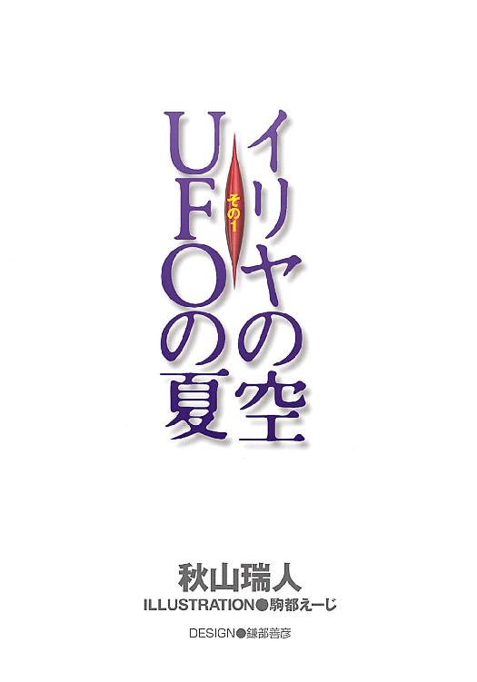
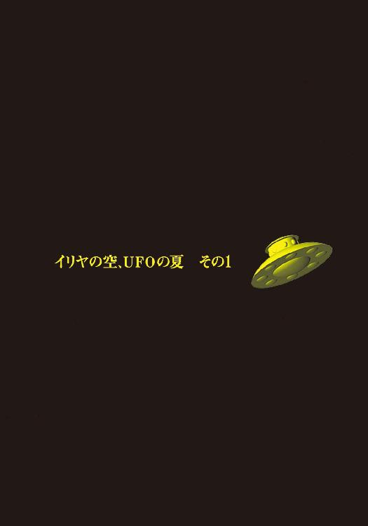
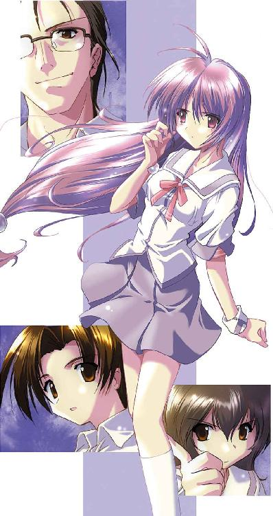
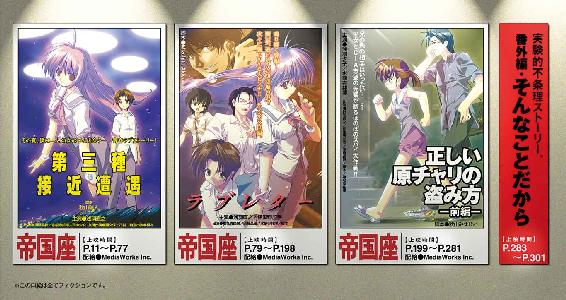
本書（電子版）に掲載されているコンテンツ（ソフトウェア／プログラム／データ／情報を含む）の著作権およびその他の権利は、すべて株式会社ＫＡＤＯＫＡＷＡおよび正当な権利を有する第三者に帰属しています。
法律の定めがある場合または権利者の明示的な承諾がある場合を除き、これらのコンテンツを複製・転載、改変・編集、翻案・翻訳、放送・出版、公衆送信（送信可能化を含む）・再配信、販売・頒布、貸与等に使用することはできません。
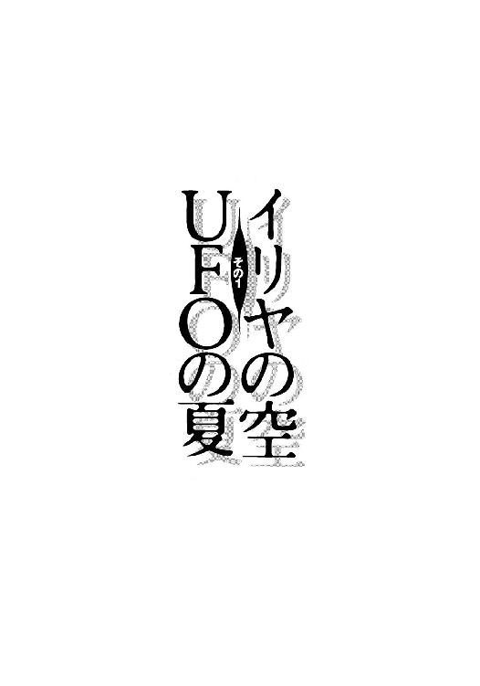
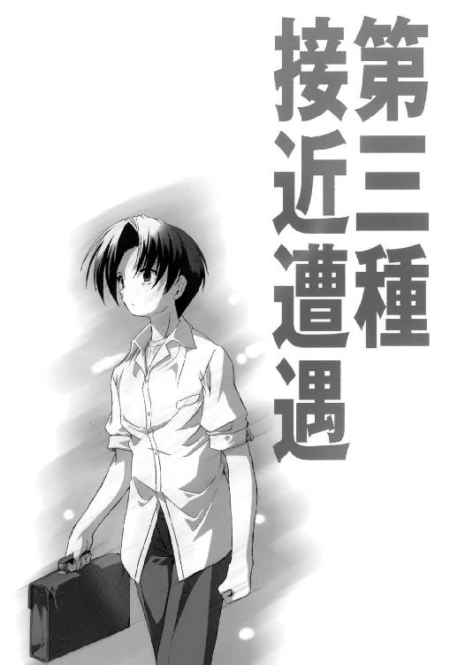
めちゃくちゃ気持ちいいぞ、と誰かが言っていた。
だから、自分もやろうと決めた。
山ごもりからの帰り道、学校のプールに忍び込んで泳いでやろうと浅羽直之は思った。
中学二年の夏休み最後の日の、しかも午後八時を五分ほど過ぎていた。近くのビデオ屋に自転車を止めて、ぱんぱんに膨れたダッフルバッグを肩に掛けて、街灯もろくにない道を歩いて学校まで戻った。
北側の通用門を乗り越える。
部室長屋の裏手を足早に通り抜ける。
敵地に潜入したスパイのような気分で焼却炉の陰からこっそりと周囲の様子をうかがう。田舎の学校のグランドなんて広いだけが取り柄で、何部のヘタクソが引いたのかもよくわからないぐにゃぐにゃした白線はひと夏がかりで散々に踏みにじられて、まだ闇に慣れきっていない目にはまるでナスカの地上絵のように見える。右手には古ぼけた体育館、正面には古ぼけすぎて風格すら漂う園原市立園原中学校の木造校舎、そして左手には、この学校にある建造物の中では一番の新参者の園原地区第四防空壕。あたりは暗く、当たり前のように誰の姿もなく、遠くの物音が意外なほどはっきりと耳に届く。いつまでも鳴り続けている電話のベル、何かを追いかけているパトカーのサイレン、どこかで原チャリのセルモーターが回り、誰かがジュースを買って自販機に礼を言われた。ふと、夜空にそびえ立つ丸に「仏」の赤い文字が目に入る。つい最近になって街外れにできた仏壇屋の広告塔だ。気分が壊れるので、見なかったことにする。
校舎の真ん中にある時計塔は、午後八時十四分を指している。
そんじょそこらの午後八時十四分ではない。
中学二年の夏休み最後の日の、午後八時十四分である。
この期に及んでまだ宿題が丸っきり手つかずの浅羽にとって、グランドを隔てて夏の夜に沈むあの時計塔つきの校舎はまさに、木造三階建ての時限爆弾に他ならない。憎むべきはあの時計塔だった。あの時計塔の歯車の息の根を止めてしまえば、八時十四分で世界中の時間が止まるような気がする。そうなれば、夏休みは終わらないし二学期は始まらない。ここ一ヶ月半、あの文字盤を見上げる者といえばせいぜい運動部のイガグリ頭どもくらいしかいなかったはずなのに、少しくらいサボったって誰にもわかりはしないのに、秒針だってないくせに、あの時計塔は一ヶ月と半分という永遠にも等しい時間を一秒ずつ削り続けていたのだ。
そして今、浅羽に残された時間はあと十三時間にも満たない。
あと十三時間でどかん。情け容赦なく二学期は始まる。理科教師にして二年四組担任の河口泰蔵三十五歳独身は、宿題を提出できない者たちを教壇に並べて立たせ、科学的な目つきでにらみつけ、並んだ頭を出席簿で科学的にばっこんばっこん叩きながら、なぜ宿題が提出されないのかについての科学的な申し開きを要求するだろう。
──だって先生、仕方なかったんです。ぼくは夏休みの初日にＵＦＯにさらわれて、月の裏側にあるピラミッドに連れて行かれたんですから。そのピラミッドは奴らの地球侵略のための秘密基地で、ぼくが押し込まれた牢屋にはぼく以外にも世界各国から同じように連れ去られた七人の少年少女がいました。ぼくらはその牢屋から脱走して、奴らの光線銃を奪って大暴れして、ついにピラミッドを破壊してＵＦＯで脱出して、昨日の夜にやっと地球に戻ってこれたんです。宿題をやってるヒマなんかなかったんです。だけど、ぼくらのおかげで人類は滅亡から救われたんだし、こうしてぼくと先生の今日という日もあるわけです。いえ違います、ですからこれは日焼けじゃなくて、ＵＦＯの反重力フィールドによる放射線被曝です。ほらよく見てくださいよ、第五福竜丸みたいでしょ？
八つ裂き間違いなしだ。
とはいえ、「新聞部部長の水前寺さんにつき合って、夏休みの間ずっと園原基地の裏山にこもってＵＦＯを探していました」と正直に話したところで、結果がそう違ったものになるとは思えなかった。その現実は浅羽と一緒に焼却炉の陰に隠れている。あと十三時間足らずで、それはささやかな歴史的事実として確定する。
浅羽直之の中学二年の夏休みは、園原基地の裏山に飲まれて消えたのだ。
あと十三時間だ。
死刑囚だって最後にタバコくらいは喫わせてもらえるのだ。
だから自分は、夜中に学校のプールに忍び込んで泳ぐくらいのことはしてもいいのだ。
当然、やるべきなのだった。
すぐ近くのどこかにピントのずれたセミがいて、闇の中でじわりと一小節だけ鳴いた。浅羽は周囲に誰の姿もないことを最終確認する。木造三階建ての校舎だけが、「お前の悪事は何もかもお見通しだ」とばかりにすべての窓を見開いて浅羽をにらんでいる。その校舎の真ん中左寄りに職員室があって、そのまた隣に「仮眠室」という名前の、狭くて畳敷きで用途不明な部屋があることも浅羽は知っている。宿直の先生がいるとすれば多分そこだと思う。が、校舎のどの窓からも明かりは漏れていなかったし、そもそも自分の学校が夜間に宿直の先生などというものを置いているのかどうか、浅羽はよく知らない。
目的地であるプールは体育館の並びにあって、浅羽の隠れている焼却炉からは30メートルほどの距離がある。プールの周囲はフェンスではなく、合成樹脂のパネルをつなぎ合わせた背の高い壁で囲まれている。あれこそ悪名高きベルリンの壁、「これじゃ女子のプールの授業を見物できない」という男子生徒の怨嗟の声を一身に受けてなお揺るぎない難攻不落の壁だ。しかし今の浅羽にとって、あの壁は味方だった。あの壁のおかげで、夜中にプールで泳いでいる自分の姿が外から見られることもないわけだから。進入ルートの目途もついている。更衣室の入り口のドアはすっかりガタがきているので、鍵が掛かっていようがお構いなしに力いっぱいノブを回せばロックが外れてしまうことを、浅羽はよく知っていた。
あとは度胸だけ。
誰もいるはずがない。絶対バレない。
だけど──という不安を拭い去れない。万が一にでも見つかったら大目玉だ。
走った。
ダッフルバッグをばたばたさせて、身を隠すもののない最後の30メートルを走り抜けた。更衣室の入り口をくの字型に目隠ししているブロック塀の陰に転がり込む。呼吸を整え、再び周囲を見まわしてやっと少しだけ安心する。更衣室入り口のドアノブを両手で思いっきり回す。磨耗しきった金属がこすれ合う「がりっ」という感触を手に残して、ロックはひとたまりもなく外れた。
そのとき、パトカーのサイレンが聞こえた。
まさか自分に関係があるはずはないとわかってはいても、浅羽は思わず身体をこわばらせて息を止めた。
まただ、と思った。さっき焼却炉の陰に隠れていたときにも聞こえた。
サイレンは溶けるように遠のいていき、唐突に途絶えて消えた。
今夜はやけにパトカーが元気だ。何か事件でもあったのだろうか。そう言えば、夏休みの少し前に「北のスパイが付近に潜伏している可能性があるから気をつけろ」という回覧板が回ったことがある。スパイには夏休みもクソもないのだろうか。
深呼吸をした。
更衣室のドアをそっと開け、中をのぞいてみる。
真っ暗だった。
暗すぎて、この中で着替えるのは無理だと思った。明かりを点けるのはいくらなんでもまずい。少し迷ってから、浅羽はこの場で着替えることにした。目隠しのブロック塀の陰だし、まさか誰か来たりもしないだろう。バッグを肩から下ろし、ジッパーを引き開け、そのときになってようやく浅羽は重大なミスに気がついた。
山ごもりからの帰り道、だったのだ。
つまり、このバッグの中には山ごもりの荷物が詰まっている。歯ブラシとかタオルとか着替えとか虫除けスプレーとかカメラとか小型の無線機とか。しかし、どう考えても山ごもりに海パンは必要ない。
というわけで、自分は今、海パンを持っていない。
ものすごくがっかりした。
浅羽はその場にしゃがみ込んだ。前の晩からの一大決心をしてアダルトビデオを借りにとんでもなく遠くのビデオ屋に出かけ、「これだ！」と思うパッケージに手をかけたそのときに財布を忘れてきたことに気づいた、あのときの落胆に似ていた。
突飛な考えが頭をよぎる。
こうなったら、素っ裸で泳ぐか。
そのくらいの無茶はやってやろうか。
夜中に学校のプールで素っ裸で泳ぐというのは何だかすごく気持ちのいいことであるような気が一瞬だけして、自分には露出狂の気があるのかと不安になる。やはり素っ裸はまずい。何か海パンの代わりになるようなものはないかと、闇雲にバッグの中をあさった。
くしゃくしゃに丸めた短パンが出てきた。
シュラフの中で眠るときにはいていた、学校指定の体育の短パンだ。
周囲に誰もいないことをもう一度確認して、浅羽はそそくさとズボンとトランクスを脱ぎ、短パンをはいてみた。Ｔシャツも脱いで己が姿を見下ろす。らしくないポケットがついているし、海パンと違ってインナーがないのでやけにすーすーする。
でも、そんなにおかしくはないと思う。
せっかくここまで来たんだし。
腹は決まった。脱いだものをバッグに蹴り込んで浅羽は更衣室の中に入った。かろうじて見分けられるロッカーの輪郭を伝って、塩素の匂いのする湿っぽい暗闇の中を手探りで進んだ。シャワーも消毒槽も素通りする。濡れた床の滑りやすさを足の裏で意識しながら、去年の夏に三宅がコケて血塗れになったのって確かこのへんだったよな、と思う。せんせーおれしぬのーしぬのー、という泣き声までが生々しく蘇り、浅羽はひとり心の中で詫びた。すまん三宅、あのときのお前はめちゃくちゃ面白かった。
スイングドアを押し開けて、夜のプールサイドに出た。
そこで、浅羽の思い出し笑いは消し飛んだ。瞬間的に足元がお留守になって、のたくっていたホースを踏んづけて危うく転びそうになった。
夜のプールサイドに、先客がいたのだ。
女の子だった。
まず、縦25メートル横15メートルの、当たり前の大きさのプールがそこにある。幻想的なまでに凪いだ水面そのものよりも、何光年もの深さに映り込んでいる星の光に目の焦点を合わせる方がずっと簡単で、まるでプールの形に切り取られた夜空がそこにあるように見える。更衣室の暗闇から出てきたばかりの浅羽の目に、その光景は奇妙なくらいに明るい。奇妙なくらいに明るいその光景の中で、女の子は浅羽に背を向けて、プールの手前右側の角のところにしゃがみ込んで、傍らの手すりをしっかりとつかんでいる。スクール水着を着ている。水泳帽をかぶっている。真っ黒い金属のような水面をひたむきに見つめている。
誰だろう、とすら思わなかった。
あまりにも意外な事態に出くわして、何も考えられなくなってしまった。
まるで棒っきれのように、浅羽はただその場に突っ立っていた。
誰にも見つからないように気をつけてはいたが、どうせ誰もいはしないと高をくくっていたところもある。更衣室のドアだって無理矢理開けたし、足音ひとつ立てずに歩いてきたというわけでもない。その女の子が最初からずっとそこにいたのなら、そうした物音が聞こえなかったはずはないと思う。なのに、少なくとも見る限りでは、女の子が浅羽の存在に気づいている様子はまったくない。浅羽に背を向けたまま、身動きもせずにひたすらプールの水面を見つめている。その背中には言い知れぬ真剣さが、これから飛び降り自殺でもするかのような緊張感が漂っている。
女の子が動いた。
右手で手すりにしっかりとつかまりながら、左手を伸ばして水面に触れた。
何かの実験でもしているかのような慎重さで、女の子は指先で小さく水をかき回す。木の葉一枚浮かんでいない水面に波紋が幾重にも生まれ、波紋はレーダー波のように水面を渡って、プールの縁に行き着いて反射する。その様子を、女の子はじっと見つめている。
誰だろう。
やっとそう思った。
うちの学校の生徒だろうか。スクール水着は学校指定のもののように見えたが名札がついていない。歳は自分と同じくらいだと思うが後ろ姿だけでは断言もできない。女の子の斜め後ろには大きなバッグが投げ出すように置かれている。その周囲には服が生々しく脱ぎ散らかされている。それはやはり、女の子のバッグであり、女の子の服なのだろう。
思う。
ということはつまり、女の子はこのプールサイドで水着に着替えたのだろうか。
ものすごく思う、なぜ自分は人間として生まれてきてしまったのか。なぜ自分は、力いっぱい指差して叫びたい、足元にのたくるこのホースとして、そこの壁に立てかけられたデッキブラシとして生まれてこなかったのか。誰もいない夜の学校の誰もいない夜のプールで、ひとりの女の子が星の光に照らされながら着ているものをゆっくりと一枚また一枚
そこから先を、浅羽は意志の力で捻じ切って捨てた。
女の子の後ろ姿に漂うあまりの真剣さに、浅羽は急に居心地が悪くなってきた。ろくでもない妄想を抱いたことを恥ずかしく思う。女の子がなぜここにいて、何をしているのかはわからない。しかし、女の子がこちらに気づいていないというのはひどくアンフェアなことであると思った。自分に悪気はなくてもこれではのぞきと一緒だ。
声をかけよう、と決めた。
自分の存在を知らせよう。
そう決めて、何と声をかけたらいいのか、言葉の組み立てもつかないままに、浅羽は息を吸い込んだ。
タイミングが悪かった。
浅羽が吸い込んだ息を声にして吐き出そうとしたまさに瞬間、女の子がいきなり立ち上がろうとした。長いことしゃがみ込んでいたのか、女の子は立ち上がりかけて少しだけよろめき、
「あの、」
浅羽のそのひと言に飛び上がらんばかりに驚いて、女の子は全身で背後を振り返ろうとして、ただでさえ危うかった身体のバランスがとうとう木っ端微塵に崩れた。
一瞬だけ、目が合った。
驚きに見開かれた目の白さを宙に残して、女の子はお尻からプールに落ちた。
派手な水音とともに、大粒の水しぶきがプールサイドのタイルに散った。
浅羽も慌てた。事態の急展開に怖じ気づいた。このまま逃げちまおうかと思う。混乱した目つきで周囲を見回して、当たり前の事実に今さら気づく。プールは薄っぺらで背の高い壁に囲まれているのだ。マジックミラーでもあるまいし、外からこちらが見えないということは、こちらからも外が見えないということなのだ。宿直の先生か誰かが今にも怒鳴り込んできそうな気がする。
逃げよう。
さんざん躊躇った挙げ句にやっとそう決めて、更衣室の方に回れ右しようとした浅羽の足が止まった。
水音がいつまでも止まない。
女の子が水の中で暴れている。ときおり、腕や足が思いがけない角度で水面を割って突き出され、水面を叩いて沈む。
ふざけているのかと思った。
本当に溺れているらしいと気づいてからも、たった今まで逃げ腰になっていた身体はすぐには動いてくれなかった。あたふたとプールに駆け寄って、そのまま水の中に飛び降りる。足から飛び込んだせいで短パンの中に空気が溜まって、水中でカボチャのように膨れた。両手で水をかき分けながら歩き、女の子の手足が跳ね散らすしぶきに片目をつぶりながら手を伸ばし、大きな声で、
「ほらつかまって、ここなら」
足がつくだろ？、そう言おうとした瞬間に女の子にしがみつかれた。プールの底で足が滑り、驚きの声を上げる間もなく浅羽の頭は水中に没した。
真っ暗で何も見えない。
女の子にしがみつかれて自由な身動きが取れないし、もちろん息はできない。
パニックに陥った。
あっという間にわけがわからなくなった。手を伸ばせば届くはずのプールの縁がどこにあるのか、どっちに水面があってどっちに底があるのか、自分の身体は上を向いているのか下を向いているのか。太平洋の真ん中でもがいているのと同じだった。女の子を一度振りほどこうとするのだが、浅羽が身をもがくと女の子の方はますます必死になってしがみついてくる。信じられないくらいの力だった。このままでは自分も溺れると浅羽は本気で思った。ここは足がつくのだ、ここはプールの縁のすぐそばなのだ、懸命に自分にそう言い聞かせ、両足と片腕で夢中になって水の中を探った。
プールの縁に指先が触れた。
プールの底に爪先が触れた。
どうにか体勢を立て直してた。やっとのことで二人の頭が水の上に出る。気道に入ってしまった水に咳き込みながらも、助かった、と身体中で思う。さっきまでは底無し沼だったはずのプールは、ちゃんと足をついて立ってみればやっぱり浅羽の胸元くらいまでの深さしかない。はは、と小さく笑う。
そして浅羽は顔を上げ、
目が合った、どころではなかった。
タバコ一本分もない、生まれて初めての至近距離に女の子の顔があった。
二人ともいまだに呼吸が荒く、二人ともいまだに抱き合ったままだった。二人が散々にかき回した水の動きに、二人の身体が小さく揺られていた。
浅羽よりも少し背が小さい。水泳帽の縁からはみ出た髪の先から雫が滴っている。自分以外の人間なんか生まれて初めて見たとでも言いたげな表情で、浅羽をまっすぐに見つめている。誰もいないはずの夜の学校の、誰もいないはずの夜のプールで、見知らぬ女の子と、星の光に照らされながら、
現実の出来事とは思えない。
少しだけ首をかしげ、女の子が何か言おうとした。
まだ言葉を憶えていない幼児がもの問いたげに発する声のようにも、外国語の感嘆詞のようにも聞こえた。
そして、
「っ」
いきなり、浅羽と密着していた女の子の身体にぎゅっと力がこもった。浅羽から半歩だけ身を離し、顔をそむけて両手で鼻と口を覆う。
それがきっかけになって、目の前の女の子の顔に見とれていた浅羽は一挙に現実に引き戻された。自分はそんなにへんな匂いがするのだろうかと思って狼狽し、密かに手のひらに息を吐きかけて口臭の有無を確かめ、
けふ、と女の子がむせた。
驚きのあまり死ぬかと思う。女の子が血を吐いている。口元を押さえている手の指の間から、血が滴り落ちている。
「!!、あ、わ、うわ！、あの、」
みっともないくらいに慌てふためく浅羽を上目づかいに見つめ、女の子は、やっと聞き取れるくらいの声で、
「はなぢ」
そう言って、片手で水をすくい、鼻から口元へと伝い落ちていく血を拭う。血を吐いているのかと思ったのは浅羽の勘違いで、よく見れば本当に鼻血だった。
しかし、浅羽にとってはどっちでも同じようなものである。
とにかく、自分が何とかしなくてはならない。
そのことに変わりはなかった。
浅羽はロケットのような勢いでプールから上がり、プールサイドに置かれている女の子のバッグに駆け寄った。脱ぎ散らかされている服の方はできるだけ見ないようにして、幅が親指ほどもあるごついジッパーに手をかけた。頭の中の慌てふためいている部分は「タオルぐらいは入っているだろう」と考えており、わずかに残っていた冷静な部分が「女の子っぽくないバッグだな」と考えていた。色は暗い緑で、固い手ざわりの頑丈な素材でできていて、でっかいポケットがいっぱいついている。園原基地の兵隊が持ち歩いているバッグに似ていた。ジッパーを一気に引き開け、一番上に入っていたバスタオルを引っぱり出して、そのすぐ下に入っていた物を目にして思わず息を吞んだ。
錠剤が一杯に詰まった、ジュースの缶ほどの大きさの、プラスチック製の瓶が三本。
見てはいけない物を見てしまった。
そう思った。
浅羽はあたふたとジッパーを閉めてしまった。なにしろ慌てていたし、大量の薬が詰まった瓶のインパクトに目を奪われていたし、それ以上はろくに見もしなかった。だから、薬の瓶のすぐ隣に、口径が９ミリで装弾数は十六発の「もっと見てはいけない物」のグリップが突き出ていたことに、浅羽はついに気づかなかった。
バスタオルを手に、できるだけさりげない表情を顔に、浅羽は大急ぎでプールに駆け戻った。女の子はようやくプールから上がろうとしているところで、それはまるで鉄棒に足をかけてよじ登ろうとしているようなスキだらけの格好で、浅羽はじろじろ見てはいけないという一心から不自然なくらいにそっぽを向き、
「これ」
バスタオルを差し出した。
しばらくしてから浅羽が視線を戻すと、女の子の上目づかいの視線にぶつかった。両足を水に入れたままプールの縁に座って、肩にかけたバスタオルの両端で鼻を押さえている。鼻血はもう収まりかけているようだったが、バスタオルを染める赤にどきりとする。
どうしよう、と思う。
現実から足を一歩だけ踏み外しているような感覚がいまだに続いている。正直なところ、なんだか気味が悪い、とも少しだけ思う。「じゃあぼくは帰るから」と告げて、とっととこの場から立ち去りたいという気持ちは、心の中で決して小さくはない。
だけど──
女の子がじっと浅羽を見つめている。浅羽は再びそっぽを向く。
このままここに残していったら、この子はいつまでもこうしてプールの縁に座っているのではないか、という気がする。
「見た？」
いきなり、女の子がそう尋ねた。
浅羽は不意を衝かれて言葉に詰まった。血を見て慌てていたとはいえ、断りもなくバッグを開けてしまったのはまずかった、と浅羽は思う。それに、こうもはっきりと聞かれてまだとぼけるのも、なんだかズルいような、男らしくないような。
近からず遠からずの距離を目で測って、浅羽は女の子と同じようにプールの縁に座った。
「──病気なの？」
女の子はほんの一瞬だけ、ほんのわずかに怪訝そうな顔をして、すぐに首を振った。その後に何か説明があるのだろうと思って浅羽は続く言葉を待ったが、女の子はそれっきり黙っている。浅羽は沈黙に耐えきれなくなり、何か言わなければと思って、
「名前は？」
女の子が答える。
「いりや」
何を言っても外国語のように響く、少し不器用な感じの、不思議な声だった。
「──それ、名前？ 名字？」
ひと呼吸おいて、女の子はこう答えた。
「いりや、かな」
『伊里野』かもしれない、と思った。そういう地名が園原市の中にあるから。
女の子は浅羽の次の言葉をじっと待っている。
何か言わなければ、と浅羽は思う。
「──泳げないの？」
言ってしまってから、もうちょっと実のあることを聞けないのかバカめ、と自分でも思う。泳げないに決まっている、さっき溺れているところを助けたばかりではないか。
目を合わせないようにしている浅羽の視界の中で、女の子がこくっとうなずいた。
何か言わなければ、と浅羽は思う。
思うのだが、切れ端のような言葉でしか喋らない女の子に引きずられているのか、頭の中で渦巻く疑問をちゃんと意味の通る「質問」にすることができない。疑問を生のままで口にすれば「君は誰？」というひと言だけになってしまう。この女の子がそれに明快な答えを返してくれるとは思えない。沈黙は続き、緊張はいや増し、何か言わなければと焦れば焦るほど、「じゃあぼくは帰るから」以外には何の言葉も思い浮かばない。
「およげる？」
いきなり、女の子がそう尋ねた。
あなたは泳げるのか、と質問しているのだ。そのことを理解するまでに少しかかった。
そして、そのひと言が突破口になった。
「──あのさ、もしよかったら、」
この子は泳げない。そして、得意中の得意というわけでもないけれど、自分は泳げる。
その点において自分は、多少なりともいいところを見せられる。
「教えてあげるよ、泳ぎかた」
浅羽はそう言った。
言ってしまってから、自分の提案に自分でためらいを覚える。この女の子はさっき鼻血を出した。バッグには得体の知れない薬がどっさり入っていた。本人がどう思っているのかはわからないが、そもそもこの子がプールで泳ぐなどという事自体が無理な話なのではないか。
ところが、女の子はこくっとうなずいて、ほんの少しだけ嬉しそうな顔をした。
その顔を見ただけで、浅羽はあっけなく勢いづいた。
「ちょっと待ってて」
ビート板を取ってこようと思って、小走りに用具置き場へとむかう。気配を感じてふと振り返ると、待っていろと言ったのに、女の子は小犬のように浅羽の後をついてきていた。ビート板の山をひっくり返して、できるだけきれいでぬるぬるしていないやつを探している間もずっと、女の子の視線に背中がむずむずしていた。
思う。
ひょっとすると、この子は泳げないというよりも、生まれてから今日まで一度も泳いだことがなかったのかもしれない。
それでも、どうしても泳いでみたくて、一大決心をしてやって来たのかもしれない。
きっとそうだ、と浅羽は根拠もなく思う。
病気なのかと浅羽は尋ね、女の子は首を振った。しかし、いわゆる病気ではないにせよ、あれだけの薬を持ち歩いているのはやはり普通ではないのだろう。
例えば、生まれつき身体が弱い、とか。
長いこと患っていた大きな病気が最近やっと治ったばかり、とか。
きっとそうだ、と浅羽は思った。この子はずっと昔から病院を出たり入ったりの生活をしていて、学校も休みがちで、それこそ体育の授業なんかはずっと見学で、プールの授業では泳いでいる友達の姿をただ見ているだけで、それでも泳ぐということにすごく憧れていて、最近になってやっと身体の具合がよくなってきたのでお母さんに「プールに行ってもいい？」と尋ねてみても「なにバカなこと言ってるのこの子はだめに決まってるでしょあらこんな時間もう薬は飲んだの？」かなんか言われて、それでもあきらめきれなくて、こっそり家を抜け出して夜のプールにやって来たのだ絶対そうだ、と浅羽は思った。
そう考えれば、何となく線が細い感じがすることも、プールを見つめていたときの思いつめたような雰囲気も、くそ真面目に水泳帽をかぶっていることも、いきなりの鼻血も大量の薬も、ぜんぶ説明がつくような気がした。
ビート板を二枚手に取ってプールに戻り、ざぶんと足から飛び込んだ。女の子はプールの縁で少しためらって、浅羽と同じように足から飛び込む。まるで、浅羽のやることを何から何までそっくりそのまま真似しようとしているかのように見える。
ビート板を女の子に手渡して、
「これにつかまってれば溺れたりしないから」
そこでふと気になって、
「──あのさ、水に顔つけられる？」
女の子は、恐々と首を振る。
というわけで、まずはそこから始めなければならなかった。
一番時間がかかったのもそこだった。励ましてもなだめても、女の子はなかなか顔を水につけることができなかった。ところが、ずいぶんかかってようやく頭全部を水の中に入れることができるようになると、そこから先は早かった。プールの縁につかまって身体を伸ばす練習をして、バタ足の練習をして息継ぎの練習をして、いよいよビート板を使った練習に移った。
そして、中学二年の夏休み最後の日の午後九時を、十分ほど過ぎた。
そして、そのころにはもう女の子は、ビート板につかまってなら15メートルを泳げるようになっていた。バタ足の膝が曲がっているので盛大な水しぶきが上がる割にはずいぶんなノロノロ運転だし、放っておくとどんどん右に曲がっていく。とはいえ、まったくのカナヅチからのスタートだったことを思えば長足の進歩だ。もともと運動神経がいいのかもしれない。
教える方の浅羽も最初はおっかなびっくりで、女の子がまた鼻血を出したらそこですぐにやめにしようと思っていた。が、女の子の上達の早さにどんどん欲が出てきた。女の子は相変わらず寡黙で、浅羽の言葉にもうなずいたり首を振ったりするだけだったが、何かひとつのことができるようになるたびに表情が少しずつ明るくなった。
「すごいよ。この調子でいけば来週には水泳部のエースだ」
女の子は、少しだけ嬉しそうな顔をした。ここ一時間ほどの間に、浅羽はこの「少しだけ」の微妙な差をどうにか読み取れるようになっていた。今のこの顔は、これまでで一番嬉しそうな顔だ。
「じゃあ、そろそろビート板を卒業だ」
途端に女の子の表情が固くなる。
「大丈夫だって、もうひとりで泳げるって。もうビート板なんかあってもなくても一緒だよ」
女の子はこくっとうなずく。が、それは言われたことに納得しているわけではなくて、浅羽を失望させたくない一心からのものであるようにも見える。
「あ、あのさ、」
浅羽はあっという間に妥協して、
「それじゃまずは、ぼくが手をつかまえてるからさ。それなら平気でしょ？」
浅羽はそう言って両手を差し出した。
今度は女の子も納得したのか、少しだけ安心したような表情を見せた。自分から両手を伸ばして浅羽の手首をつかむ。浅羽の手は、女の子の手首をつかむ形になった。
そして、浅羽はやっと「それ」に気づいた。
その瞬間に女の子も、浅羽が気づいたことに気づいてぎくりと身を固くした。たった今まで、自分の手首に「それ」があることを、女の子は自分でも忘れていたのかもしれない。
浅羽は指先で、女の子の手首を探る。
何か、硬くて丸いものがある。
ゆっくりと、手首を裏返してみた。
卵の黄身ほどの大きさの、銀色の金属の球体が、女の子の手首に埋め込まれていた。
女の子がじっと見つめてくる。
水の動きに身体が揺られている。
現実が水に揺られて、再び遠のいていく。
「痛くないから」
そう言って、手首の金属球が浅羽によく見えるように両手を差し伸べて、女の子が近づいてくる。
生の疑問。何をおいてもまず最初に聞いておくべきだったこと。
君は、誰。
「なんでもないから」
優位は逆転していた。今、怖れるなと言い聞かせているのは女の子の方だった。浅羽は後ずさりしようとするが、ひたむきなその目にじっと見すえられ、外国語のような響きをもつその口調に呪縛されている。後ずさりの最初の一歩がどうしても踏み出せない。
「なめてみる？」
女の子はもう、目の前にいた。
女の子と浅羽の顔の間には、もう、銀色の球体が埋まった手首があるだけだった。
「電気の味がするよ」
誰もいないはずの夜の学校が、誰もいないはずの夜のプールが、星の光が、見知らぬ女の子が、何もかもが、現実の出来事とは思えない。
いきなり、パトカーのサイレンが聞こえた。
驚きのあまり、浅羽の口から情けない悲鳴がもれた。
本当にすぐ近くから聞こえた。学校の中か、あるいは外だとしてもグランドの周囲をめぐっている通りのどこか。体育館の窓に点滅するパトライトの照り返しが見える。一台や二台ではない。
女の子は無言だった。
表情の動きもあるにはあったが、浅羽の目には、自分の十分の一も驚いているようには見えなかった。そのことが浅羽のパニックをさらにあおる。とにかく自分が何とかしなくてはならないのだ。何が何だかわからないままに、浅羽は女の子の手を引いて無我夢中でプールから上がろうとした。
そして、浅羽がプールの縁に行き着くよりも早く、その男は現れた。
更衣室のスイングドアから、ゆっくりとプールサイドを歩いてくる。
背の高い、年齢のよくわからない男だった。
スーツの上着を肩に引っかけて、もう片方の手にはバスタオルを持っていた。ネクタイはしていない。顔つきは若くて、タレ目で、いつも下品な冗談を言ってはひとりで大笑いしていそうな感じがする。しかし、何かにひどく疲れたような、すり切れたような雰囲気がどこかに漂っていた。
「帰る時間だ」
立ち止まり、プールサイドから女の子をまっすぐに見つめて、男はそう言った。
現実は、女の子の鼻血と一緒に、プールの排水口に流れ込んで消えてしまったのだと思う。
何が何だかわからないし、混乱していたし、怖くないといえば噓もいいところだ。しかし、浅羽は虚勢を張った。一歩前に出て、女の子を背後に庇う位置に立った。
男はそれを見て、思いがけないものを見て感心したかのような、おっ、という顔をする。
女の子が背後からささやく、
「だいじょうぶ、知ってるひと」
浅羽はそれでも男から目を離さず、肩ごしに、
「誰？」
男がそれに答えた。
「──そうだな。まあ、その子の兄貴みたいなもんだ。君は？」
浅羽はつばを飲み込み、わざと不機嫌そうな声を作った。
「この学校の生徒」
です、と言ってしまいそうになるのを堪える。男は周囲をぐるりと見回して、
「なんでまた。こんな時間に」
「泳ぎたくて」
浅羽のそのひと言に、男はいきなり顔中で笑った。
「──っかそっか。なるほどな。今日で夏休み終わりだもんな」
男はプールの縁にしゃがむ。ニタニタ笑いながら浅羽を見つめて、
「おれも昔よくやったよ。おれのいた学校にゃ住み込みの用務員がいてさ、これがまたとんでもねーカミナリおやじでな。泳ぎに行くっていうよりダチ同士の度胸くらべさ。大騒ぎしながら泳いでるし、二回に一回はおやじが箒持ってすっ飛んでくるんだが、こっちだって端からそのつもりだからそうそう捕まりゃしない。で、うまく逃げおおせたらおやじんところにイタズラ電話入れてさ、『あー、長沢くん』これ校長の物真似な、長沢ってのはおやじの名前な、『あー長沢くん。あれかね、チミは、プールに忍び込んだ生徒を捕まえることもできんのかね。そんなことじゃクビだよチミ』。おやじもーカンカンに怒ってなあ。あれは面白かった」
プールの外に複数の人と車の気配。静かなエンジン音、タイヤが砂利を嚙む音、ドアを叩きつけるように閉める音。
囲まれている。
なのに、この男以外には誰もプールの中には入ってこない。
この男もまったく得体が知れない。話のわかる兄貴分という雰囲気が、うわべだけの作り物のようには見えない。浅羽には、そのことが逆に薄気味悪く思えた。
「あの、」
生の疑問再びだった。
あんたたちは何者なのか。
そして、女の子と同じように、この男もまた、そんな疑問に明快に答えてくれるとは思えなかった。浅羽の言葉は出だしでいきなり失速し、男がそこに先回りをする。
「今でもありがたいと思ってるよ。長沢のおやじはさ、おれらガキどもの遊びにちゃんとつきあってくれてたんだよな。毎度毎度悪さをするメンツなんて知れてるしさ、捕まらなくたっておれらの名前なんか割れてたはずなんだ。けど、おやじはおれらのこと先生にちくったりしなかった。──だからまあ、おれは今でも、君みたいなイタズラ坊主にはわりと寛大なわけさ」
そう言って、浅羽をじっと見つめる。
お前がここにいたことは黙っていてやるから、お前の方も何も聞くな。
そう言っているのだ。
浅羽はそう理解した。
男を見つめて、浅羽は小さくうなずいた。
男はにかっと笑った。上着のポケットから無線機のような物を取り出して、
「いま終わった。Ｃが１、これから出ていく」
早口にそれだけ言って、背伸びをしながら立ち上がった。
「さ、もう上がれ。ビート板ちゃんと片づけろよ。あと目も洗え。ところでお前、」
女の子にむかって、
「泳ぐのなんて今日が初めてだろ？」
浅羽の手を借りてプールから上がった女の子は、ひと言だけ、
「教わった」
男は、へえ、という顔をした。女の子の頭にバスタオルを投げかけ、
「そいつは世話になったな。お前もほら、」
そう言って、バスタオルごしに女の子の頭を乱暴にぐいと押してお辞儀をさせた。
「君がまず先に出てくれ。外にいる連中は、何も危害は加えない」
頭の中は混乱していた。
言いたいことは、聞きたいことは、山のようにあった。
おぼつかない足取りでプールサイドを歩き、更衣室のスイングドアを押し開け、そこで浅羽は背後を振り返った。男が小さく手を振った。女の子はその隣で、バランスの悪い人形のように立ち尽くしている。頭にかぶったバスタオルの陰から浅羽をじっと見つめている。
すべてが、現実の出来事とは思えなかった。
ビート板を片づけるのも目を洗うのも忘れていたが、男は何も言わなかった。
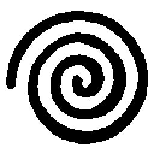
浅羽直之のＵＦＯの夏が始まったのは、今を溯ること二ヶ月前の、六月二十四日の放課後のことである。
園原中学校の三年二組に水前寺邦博という実にハイスペックな男がいる。出席番号は十二番で、十五歳にして１７５センチの長身で、全国模試の偏差値は81で、１００メートルを十一秒で走り、顔だってまずくはない。
が。
この人はエネルギーの使い方を生まれつき間違えてるんだよな、と浅羽はいつも思う。
なにしろ、進路調査表の第一志望に本気で「ＣＩＡ」と書く男である。
三年二組で十二番で１７５センチで81で十一秒に加え、水前寺邦博は自称・園原中学校新聞部の部長兼編集長でもある。なぜ「自称」なのかというと、新聞部は学校側に公式に部として認められていないからだ。メンバーはずっと三年生の水前寺と二年生の浅羽の二人だけだったが、この春に浅羽と同じクラスになった須藤晶穂が何を思ったか「あたしも入ろっかな」と乱入してきた。
これで部員は三人となった。
校則によれば、部員が三人いれば部として申請できることになっているし、晴れて公式な部となれば部室や部費がもらえる。だから晶穂はいつも申請しろしろとせっついているのだが、肝心の水前寺にその気がまるでない。その理由がまたすごい。
『ジャーナリズムの自主自立を守るために、体制からは慎重な距離を保つべきである』
ばっかみたい、と晶穂は言う。
とはいえ、仮に水前寺が申請をしたとしても、学校に部として認められることはないだろうと浅羽は思う。
紙面の内容が内容だからだ。
園原中学校には、水前寺邦博が１００メートルを十一秒で走ることを知らない者はいても、水前寺邦博が超常現象マニアであることを知らない者はいないのだ。さらに言えば、水前寺にとっては天下のＣＩＡですら、超常現象の真実を解明するための手段のひとつにすぎない。水前寺がなぜＣＩＡを志望しているかといえば、本人曰く「ＣＩＡに入って超スゴ腕の工作員になって秘密作戦に参加したり極秘文書を閲覧できる立場になれば、おれの知りたいことがぜんぶわかるかもしれない」ということらしい。
ではその「おれの知りたいこと」というのは一体何かというと、これが概ね季節によって変わる。
例えば、この冬の水前寺テーマは「超能力は果たして実在するか」だった。この頃、水前寺（と浅羽）は昼休みに放送室を占拠し、全校生徒を対象にテレパシー実験をやらかして先生にめちゃくちゃ怒られた。
そして春が来て、水前寺テーマは「幽霊は果たして実在するか」に変わった。この頃、水前寺（と浅羽）は幽霊が出ると噂の帝都線市川大門駅女子トイレを夜中に潜入取材して１１０番され、先生にめちゃくちゃ怒られた。
そういう男が編集長の、つまりはそういう新聞なのである。
名前だって、少し前までは『太陽系電波新聞』だった。
しかし、晶穂が入ってから状況は少しだけ変わった。今でも水前寺テーマ関連の記事が紙面の七割近くを守ってはいるが、晶穂の担当する「真面目な記事」もじわじわとその版図を拡大しつつある。最近になって晶穂は編集会議で「紙名を変更すべきだ」という主張をぶち上げた。五時間にも及ぶ舌戦の末に浅羽の調停工作がやっと実を結び、双方崖っぷちギリギリの妥協点として『園原電波新聞』という線で一応話は落ち着いた。新紙名をどう思うかと浅羽が尋ねたところ、隣の席の西久保曰く、
「『太陽系』のときは風呂敷がデカすぎて笑っていられたけどさ、今度のは『園原』の分だけ電波が身近になった気がしてすげーやな感じ」
そんなこんなで水前寺邦博は部室長屋の空き部屋を根城に今日も暴れ回り、園原電波新聞は月に一回、校内各所の掲示板に見た目はチープで中身はディープな壁新聞のゲリラ掲示を繰り返している。
今を溯ること二ヶ月前の、六月二十四日の放課後。
春からのテーマである「心霊現象」に対する水前寺の興味はいささかの衰えも見せず、浅羽は肉体労働に勤しんでいた。両手で抱えた荷物の重さによろめきながら歩き、やっとの思いで部室長屋にたどり着く。荷物を一度床に置くのが面倒で、晶穂がもう来ているかもしれないと思って声をかけてみる。
「あきほー。いるならドア開けてくれー」
ついていた。新聞部が不法占拠している部室のドアが開いて須藤晶穂が顔をのぞかせ、浅羽の抱えている大荷物に目を丸くした。
「なにそれ」
浅羽は部室に入り、テーブルの上に荷物をどかりと置いた。そばにあったパイプ椅子にへたり込んでため息をつく。
「うあー重かった」
図書室から借り出してきた、卒業アルバムの山だった。二十冊ほどが積み重なって50センチほどの高さになっている。紙がいいのでえらく重かった。
「まだこれで全部じゃないんだ。これと同じくらいの山があとふたつある。古い学校なんてろくなことないな」
晶穂は当惑顔で、
「だから、どうするのよこれ」
「あ、部長からまだ聞いてない？」
「何を？」
「七月号の企画。『戦慄！ 卒業アルバムに見る心霊写真！』ってやつ」
「え？ 次の企画って、コックリさんがどうしたとかいう──」
浅羽はズボンのポケットでずっとごろごろしていた鳥龍茶の缶を取り出し、プルトップを引き開けて、
「『コックリさんに聞け！ 試験問題予想実験！』だろ。あれはボツ」
「どうして!?」
晶穂が思わず声を荒げたことに、浅羽は少し意外そうな顔をした。たった三人しかいないこの新聞部にも派閥があるとするなら、水前寺が保守派で晶穂が改革派である。「真面目な紙面」を目指す晶穂なら、何であれ水前寺の手になる企画がぽしゃったら喜ぶだろうと浅羽は思っていたのだ。鳥龍茶をひと口含み、まだ何か言うのかなと思って上目づかいに晶穂の様子をうかがった。晶穂はぷいと目をそらし、浅羽が来るまで座っていたパイプ椅子に乱暴に腰を下ろす。目の前にはラップトップ型のパソコンがあって、書きかけだった「子犬あげます」の記事の中ほどでカーソルが点滅している。晶穂はキーボードに手を乗せ、いきなり、
「だって浅羽、色々調べたり準備したりしてたじゃない。あれぜんぶ無駄ってこと？」
「しかたないよ。部長だって何の理由もなくボツにしたわけじゃないし。ほら、ぼくとか部長ってたまに部室に泊まり込んだりするだろ？ 河口が試験問題予想の企画の話を聞きつけたらしくってさ、『お前らまさか夜中に職員室に忍び込むつもりじゃないだろうな』って」
ちなみに、浅羽と晶穂の担任で三十五歳で独身で「科学の僕」の河口泰蔵と、三年二組で十二番で１７５センチで81で十一秒で「真実の探求者」の水前寺邦博は、もちろん、すこぶる仲が悪い。
「河口さ、そのこと職員朝礼でちょっと話したらしいんだ。部長も職員室に呼びつけられて担任からクギ刺されたらしいよ。なんだかめんどくさいことになっちゃいそうだったしね、試験問題云々がまずいってんならいっそ別の企画にしちまおうか、って」
「部長が？」
「部長が」
晶穂は微かに眉根を寄せ、
「──でも、ちょっと信じられないんだけど。あの水前寺邦博ともあろう者が先生にクギ刺されたくらいであきらめるなんて」
浅羽は笑って、
「まあ、あの人はよくわかんないから。悔しがったりとかは全然してなかった。ひょっとしたら、部長にとってはコックリさんでも心霊写真でも目指すところは同じでさ、その道の途中にうんこが落ちてたから避けて歩いた、くらいにしか思ってないかもよ」
むしろ、内心で悔しがっているのは自分の方だと浅羽は思う。
鳥龍茶を一気に飲み干し、「さて」と勢いをつけて浅羽は立ち上がった。卒業アルバムの山の上から何冊かを手にとってばたんとテーブルに置く。
「でも、今度のもなかなかいい企画だと思うんだ。ほら、古い写真ってそれだけでちょっと気味が悪いところあるしね、それっぽい写真にそれっぽく囲みをつけるだけでもかなり説得力のある一枚にはなるはずだよ。それがほんとに心霊写真なのかどうかはともかくさ」
「とか何とか言っちゃって」
晶穂はそう言って、「子犬あげます」の続きに戻った。浅羽は意味をつかみかね、
「なんだよそれ」
大切にして下さる方のみにお譲りいたします、とローマ字入力し、そこでやっと晶穂は液晶画面から顔を上げて、じっとり湿った目つきで浅羽をにらんだ。
「なあーにが『本物かどうかはともかく』よ。わかってんだから。もうバレバレなのよ、あんたいっつも『ぼくはしかたなく部長につきあってるんです』って顔してるけどね、ほんとはあんただって嫌いじゃないのよそういうの。超能力とか幽霊とか」
生後二ヶ月オス雑種、責任をもって飼っていただける方に、
「その企画あたし手伝わないからね。ふんだ、知らないから。アルバムそんなにいっぱい借りてきちゃってさ、ぜんぶに目を通し終わるころにはきっと干支がひと巡りしてるわ。そんなの部長に見せたら２ページに一回くらいは『これは誰の腕だあーっ!?』って叫ぶに決まってるじゃない。あーあ、浅羽は中立勢力だと思ってたのにな。この部であたしの味方はあたしだけってことよね。はー。改革派の道は険しいわ」
そのとき、
「笑止!!」
おそらく、ドアの外で盗み聞きをしていたはずである。
「君が一体どの口で改革を語るのか!! 君の改革とは運動部の勝った負けたに一喜一憂することなのか!! 犬猫の貰い手を探すことなのか!! 須藤特派員応答せよ!!」
ドアを蹴破らんばかりの勢いで水前寺がやって来た。馬手にメロンパン弓手に牛乳のテトラパック、気分次第でかけたりかけなかったりする伊達メガネの銀縁がきらりと輝いた。
浅羽は水前寺の勢いに呆気に取られ、
「──な、なんかいいことあったんですか？」
晶穂は冷たい一瞥をくれてただひと言、
「ばっかみたい」
ふふん、と水前寺は笑い、
「紙名から『電波』の文字を払拭できなかったことをいまだ根に持っておると見えるな須藤特派員。確かに君のみみっちい改革観に冠する紙名は『園原中学校新聞』が妥当であるやもしれん。しかしっ！ 今や旧紙名となってしまった『太陽系電波新聞』とは、太陽系の如き広大なジャンルの知見を電波の如き速報性で──」
そこで晶穂が椅子を蹴って立ち上がる。
「わたしは新聞部を改革したいんですっ！ 誰かさんみたいに世の中の常識を電波で手術したいんじゃありませんっ！ だいたい紙名で読み手を逃してどうするんですかっ！」
突如として蒸し返された議論に板挟みにされながらも、浅羽はくすっと笑った。
「なんだ、部長もやっぱり『太陽系電波』に未練あったんですか」
「おうよ。たっぷりとな。ときに浅羽特派員」
水前寺はメロンパンを持っている方の手で、テーブルの上に山と積まれた卒業アルバムの山を射るように指差した。
「何かねそれは」
浅羽は戸惑う。そもそも、卒業アルバムを図書館から借り出してこいと浅羽に命じたのは水前寺なのだ。
「──卒業アルバムですけど。図書館から借りてきた」
「浅羽特派員。なぜそんなものがここにあるのかね」
これには隣の晶穂も眉をひそめた。浅羽はわけがわからずに、
「え──だから、この中から使えそうな写真を洗い出すんでしょ？」
「浅羽特派員。使えそうな写真、とは一体何の話かね」
浅羽は思わず晶穂を振り返り、晶穂は「こっちに振られても」という顔をした。二人同時に、
「部長の発案じゃないですか。『卒業アルバムに見る心霊写真』。七月号の新企画」
「浅羽から聞きましたよ？ 前の企画はボツにしたんでしょ？」
水前寺は長々とため息をついた。夕日でも見上げるような目つきであさっての方角を見つめ、ささやくような声で「ボツだ」とつぶやく。
浅羽には聞こえた。
晶穂には聞こえなかった。晶穂が「は？」と聞き直したそのとき、
「そんなもんはボツだあーっ!!」
水前寺はいきなりゴジラのように吠えた。額に手を当ててイライラと首を振りながらつかつかと部室を横切り、
「応答せよ、応答せよ両特派員!! ああああなんてことだ、君たちはまだ心霊現象なんぞにかかずらわっておるのかね!!」
部室の突き当たりにある窓を開け放ち、水前寺は六月二十四日放課後の青空に向かって対空ミサイルのように叫ぶのだった。
「おっくれてるぅ───────────────────────────────────────────────────────────────────────────────────────────────────────────────────っ!!」
からり、とっ。
両手で静かに窓を閉め、水前寺はすりガラスごしの光を背に振り返った。打って変わった静かな口調で、
「さて両特派員。本日すなわち六月二十四日は何の日か知っているかね？」
二人は再び顔を見合わせる。晶穂は「なによあれ、なんか変なもの食べたの？」という目つきで浅羽を見るが、浅羽は「知らないよそんなの」と首を振る。しかたなく、晶穂は「木曜日でしょ？」と自信なさげに答え、浅羽はヤマカンで「トイレットペーパーの日」と答えた。
「違う」
そして水前寺は、おごそかに正解を口にする。
「六月二十四日は、全世界的に、ＵＦＯの日だ」
ああ──。
ようやく、二人は納得した。
水前寺テーマは季節と共に移ろい行く。
超能力の冬が過ぎ、幽霊の春が過ぎて、水前寺の興味の対象が何の前触れもなく根こそぎアップデートされる日が、再び巡り来たのである。
浅羽はがっくりと肩を落とした。晶穂は「子犬あげます」に戻った。生後三ヶ月メス芝健、芝賢、芝件、芝研、とスペースキーを押しながら、
「そっか、もうそんな時期なのね」
浅羽はただ、
「重かったのになー」
「あたし明日から夏服着てこよっと」
浅羽はただただ、
「重かったのになー」
水前寺がいきなりくだけた口調に戻って、
「おいこらなに和んでんだお前ら。少しは感動しろ感動」
するものか、と二人は同時に思う。ことに浅羽のダメージは大きい。テーブルの上の卒業アルバムの山をちらりと見て、またこれを返しに行かなければならないのかと思うと身体が地の底に沈むかと思う。晶穂が、
「つまり、幽霊はもうやめにして、これからはＵＦＯに追い込みかけちゃうわけですか」
「ああ」
水前寺はうなずき、目を細めて、ものすごくいい顔で笑った。毎年毎年少なからぬ新入生女子がこの笑顔に騙され、貴重な紙資源をラブレターに変えて水前寺の下駄箱に突っ込むという最悪の愚行に走る。
晶穂は一応聞いておこうと思ったのか、
「──あの、どうして六月二十四日はＵＦＯの日なんですか？」
「須藤特派員！ 君はそれでも園原電波の特派員か！ そんなことも知らないでジャーナリストとして全力を尽くしていると胸を張れるのか！」
「普通知らないわよそんなことっ！」
「じゃヒントだ。時は西暦一九四七年六月二十四日の火曜日、所は北米ワシントン州レイニア山上空約９５００フィート」
そのヒントに、少しずつダメージから回復しつつあった浅羽が反応した。
──あれ、それ、どこかで──
レイニア山。
その名前に聞き憶えがある。
確か、ずっと昔に読んだ子供向けのＵＦＯの本か何かで──
「──ええっと、ケネス・アーノルド事件」
その名前は、ふと口をついて浅羽の口からこぼれ出た。
ずっと昔の、もう顔も思い出せない友達のあだ名のような、ひどく懐かしい口触りの名前だった。そんな名前が自分の頭の片すみに残っていたことに、少しだけ感動した。
「さすがは浅羽特派員！」
水前寺は壁にかけられたコルクボードに歩み寄り、「よかった探し表」の「浅羽」の欄に赤くて丸いシールをぺたりと貼った。くるりと振り返って、
「軽飛行機にて飛行中だったケネス・アーノルドは、レイニア山上空で『水面に投げた受け皿のようにスキップしながら飛ぶ正体不明の九つの飛行物体』を目撃した。これが公式に報告された中では最初のＵＦＯ目撃事件であり、以降六月二十四日は、全世界的に、ＵＦＯの日であるとされているっ」
そう言って水前寺は満足げにうんうんとうなずく。
浅羽はしかし、『卒業アルバムに見る心霊写真』にまだ未練があって、
「──けど、じゃあ、次の号の企画は？ 何かあてでもあるんですか？」
「無論だ。次なる取材は極めて過酷な長丁場になる。入念な準備が必要だ」
「え？」
「須藤特派員、七月号の紙面はすべて君に任せる。思う存分マジメな記事を書いてくれたまえ。我々はその間に極秘取材の準備にかかる」
浅羽と晶穂はふたりして「はあ？」と間抜けな声を出して、
「い、いきなりそんなこと言われても困りますっ」
「あ、あの、我々っていうのはやっぱりぼくと部長なんですか」
「浅羽特派員は体力的に不安があるからな。ブルワーカーでも養命酒でも構わん、今から身体を鍛えておくように」
浅羽は不安になってきた。極秘取材という言葉の響きが何とも不気味だった。とんでもないところに連れていかれてとんでもないことをやらされるかもしれない。
「極秘取材って、どこへ──」
「なに、すぐそこの裏山さ」
そう聞いて浅羽は少しだけ安心した。その油断に夏休みを丸ごと食い尽くされることになるとも知らずに。さらに尋ねる、
「だけど、なんでまた裏山なんです？」
水前寺は不敵に笑い、さも当然のことのように言い切った。
「ＵＦＯっていったら裏山だろ」
夏も近づく六月二十四日の、放課後の出来事だった。
超能力の冬が過ぎ、幽霊の春が過ぎて、浅羽直之のＵＦＯの夏がやって来たのだ。
「で？」
ため息をつくにはまず息を吸わなければならない。息を吸えば、その匂いがどうしても鼻につく。湿っぽい雑巾と粉々に踏み砕かれたチョークの匂い。それは教室の匂いであり、学校の匂いであり、夏休みが過去のものとなったことを意味する匂いであり、二学期第一日目の匂いだった。
「マジで？ お前ほんとに夏休みの間ずっと園原基地の裏山にいたの？」
窓際の机の上にぐったりと突っ伏して声も出さず、組んだ腕にあごをこすりつけるようにうなずくと、机の脇に立って浅羽の顔をのぞきこんでいた西久保は、
「ばっかじゃねえの」
というひと言で浅羽の夏休みを総括した。
予想通りの展開で河口にごってり油を搾られ、一限目の現国を最初から最後まで右から左へと聞き流して、命からがらたどり着いた本日最初の休み時間だった。
「やっぱあれ？ 山ん中にテント張って飯盒炊爨とか？」
本当にそんなバカなことをやっていたのかお前は、とでも言いたげな口調で西久保は尋ねる。浅羽はぼんやりと、めんどくさそうに、
「──部長が軽トラ持ち出してきてたから、しょっちゅうコンビニなんかに買い出しに行けたしね。だから、コンビニ弁当とかレトルトカレーとか」
実際、コンビニの弁当は全種類をあらかた制覇してしまったし、レトルトカレーはしばらくは見るのもいやだった。晶穂がときどき差し入れを持ってきてくれたのは本当にありがたかったと今になって思う。
「それに、ほんとにずっと山の中にいたわけじゃないよ。三日か四日にいっぺんくらいかな、普通のメシ食いたくなったり風呂入りたくなったりしたら家に帰ってた。部長はずっといたみたいだけど」
「え？ じゃ、部長ドノは夏休みの間ずっと風呂なし？」
「まさか。あの裏山を大月台の方にちょっと下ったところの、ええっと、野球場とかある」
西久保も首をひねって、
「なんだっけ。なんとかかんとか記念スポーツ公園、だよな」
「そうそこそこ。あそこの水道で行水。そりゃそうだよ。特殊部隊じゃあるまいし、あそこの水道とトイレがなかったらぼくらだけでひと夏ずっと山にこもるなんてそもそも無理だよ」
「けど行水って、あそこ結構人いるだろ」
「昼間はね。夜になればアベックの車がたまにいるくらい。部長は昼間でもお構いなしだったけど」
さすがだ、と西久保は笑う。浅羽もつられて笑みを浮かべる。
「要するにキャンプしてたんだな。実は結構楽しんでたんじゃねえの？」
まあね、と浅羽は答えた。
喉元を過ぎて、いやなことの記憶が薄れかけているせいかもしれない。
が、それだけではないと思う。
丁寧に思い返してみれば、「全然面白くなかった」というわけではないような気がするのだ。
タヌキの餌付けにも成功した。
夜中のスポーツ公園でゆさゆさ揺れている車を爆竹で「取材」したりもした。
そして、それよりも何よりも、「仲間以外は誰も来ない山中に『秘密基地』を構えて『敵』を見張る」という計画には、白状する、正直心が躍った。この歳になって秘密基地ごっこをするハメになるとは思わなかったけれど、部長はいい歳をこいてそういうことを心から真剣にやってしまう人だ。半ば無理矢理という部分はあったにせよ、ひとたびその中に飛び込んでしまえば「気持ちいい瞬間」は間違いなくあったのだ。
そう悪い夏休みではなかったのかもしれない。
しかも、最後の最後になって、無茶なことをしてやろうという気になって、
プールに忍び込んで、
そして、
「おい」
西久保に肩を突かれ、浅羽は我に返った。
「んだよ、ぼーっとして」
「ごめん。なに？」
「──だからさ、ＵＦＯ探しに園原基地の裏山にこもったんだろ？ 写真の一枚くらいは撮れたのかよ？」
まさか、と浅羽は笑って、
「死体を埋めに来た奴と出くわす確率の方が、まだしも高かったと思うよ」
なんだつまんねー、西久保はそうつぶやいて、浅羽の山ごもりについて興味を失いかけたそのとき、
「あ、でもおれその話聞いたことある」
浅羽の前の席の花村が、椅子に後ろ前逆さまに座り直して話に割り込んできた。これまでの話をずっと背中で聞いていたらしい。
「園原基地はＵＦＯの基地だって噂、かなり昔からあるみたいだよ」
西久保はいかにも疑わしそうに、
「おれだって聞いたことくらいはあるけどさ、でもそりゃあれだろ？ ステルス機とかの見間違いだろ？ 園原だけじゃないって聞くぜ、その手のＵＦＯ話。でっかい飛行場のある街ってのはＵＦＯの目撃談も多いんだよ。特に園原基地なんて航空自衛軍と米空軍の寄り合い所帯だしさ、いつもと違うへんな時間に飛行機とばしたりすることもあるだろうしさ、ＵＦＯと見間違えられて騒ぎが起こったって『あれは実はうちの飛行機でした』なんていちいちアナウンスしたりもしないだろうしさ」
「部長の受け売りだけど、」
浅羽が、ふと口を開いた。
「園原基地の近くで目撃される謎の飛行物体は、『園原基地の幽霊戦闘機』って呼ばれてて、ＵＦＯマニアの間じゃ結構有名なんだって。そっち系の雑誌なんかにはよく載ってるしね。フーファイターってのはもともとは第二次大戦中の連合軍の飛行機パイロットが目撃した謎の飛行物体のことでさ、最初はドイツや日本の秘密兵器じゃないかって思われてたんだけど、戦争が終わってみたらドイツや日本のパイロットもやっぱり同じようなものを見て『あれは連合軍の秘密兵器だ』って思ってたってことがわかってさ。結局、今では何かの自然現象か、集団幻覚みたいなものだったんじゃないかって言われてる。もちろんＵＦＯマニアにとっては、『フーファイター』って言えばＵＦＯの別名なんだけど」
西久保も花村も、半ば感心、半ば呆れ顔で浅羽の話を聞いている。
浅羽は二人の表情に気づいて、
「──部長の受け売りだけどね」
ばん、と西久保が浅羽の肩に手を置いた。
「素直になれ浅羽」
「な、なんだよそれ」
「いいからいいから。それで？ 部長が言うには、園原基地の何とかの正体は何だって？」
「──さあ。部長って、細かいんだか大雑把なんだかよくわかんない人だしね。ちゃんと聞いてみたことないけど、案外、正体なんかどうでもいいって思ってるかも」
「じゃお前はどう思ってんだよ」
何となく追いつめられているような気がして、
「ＵＦＯマニアの間で一番有力、っていうか定番なのは、『園原基地がマン・メイドのＵＦＯを飛ばしている』って説なんだよね。アメリカでも似たような話があるし。墜落したＵＦＯを回収して、その技術を真似してすごい性能の飛行機が作られてるっていう噂。それかも」
花村がおかしそうに、
「じゃあさ、いよいよ戦争になったらそういうＵＦＯ戦闘機がびゅんびゅん飛び回ったりするわけえ？」
西久保も呆れたように、
「そりゃお前、ただの『すごい性能の飛行機』ってだけなんじゃねえの？ なんでそこにいきなり『墜落したＵＦＯから得た技術』が出てくんだよ」
自分がバカにされた気がして浅羽は内心むっとする。しかし、浅羽としても『マン・メイドＵＦＯ』説を頭から信じているわけではない。なんだか自虐的な気分になって、
「──そうだ、写真ならあるよ。フーファイターの。パソコンのプリンターで印刷したやつだけど。結構有名な」
そう言って、鞄から取材用のバインダーノートを引っぱり出した。ファイルの中身をごそごそとかき回し、
「んーと、あったあった。これ」
見るからにウソ臭い心霊写真の束に混じっていた、しわくちゃのプリントアウトを机の上に広げた。
西久保と花村が身を乗り出す。
モノクロでぼけぼけの、説明されなければ何が映っているかもよくわからない、ＵＦＯ写真の典型のような一枚だった。
西久保がまず、
「何だこれ。どっちが上だ？」
「こう」
浅羽はプリントアウトを西久保の方から見て正しい向きに直した。
「今年のはじめごろにネットに流れてちょっと話題になったやつだよ。このへんが地面でこのへんが空で、この真ん中のぼやっとした影がフーファイター。撮影者は不明」
「で、ここにいるのが雪男でこっちのはネッシーだな」
花村がちゃちゃを入れるが、西久保は意外と真剣にプリントアウトを見つめている。「フーファイター」の影を指差し、
「これ、翼端灯の光か？」
浅羽は「さあね」と首をかしげ、
「これ、たぶん第四エプロンの西側の、ぼくと部長がいた裏山からそう離れていない場所から撮ったんだと思う。この画像ファイルと一緒にムービーもネットに流れてたんだけど、そっちはこれなんかよりもっとぐちゃぐちゃで何がなんだか全然わからない」
「──これ飛行機だろぉやっぱ。だいたいこんなボケボケ写真じゃ何も説明つかねーだろ」
「まあ確かに、ＵＦＯの技術云々は別にしてもさ、開発されたばっかりの秘密兵器のテストをやってるとかさ、そのくらいならあってもおかしくないと思うんだ。ほら、もうすぐ戦争になるって話だし」
もうすぐ戦争になる。
それは、浅羽たちの世代にとっては一種の冗談のような言葉だった。生まれる前から「もうすぐだ」と言われ続けて、そのくせテレビのニュースの中で小競り合いが繰り返されるばかりで、いつまでたっても一向に始まらない「本物の戦争」。
「ならねーだろ、戦争」と花村。
「ならないかな、戦争」と浅羽。
そこで西久保が、
「でも、北への空爆って最近また始まったんだろ。今朝のニュースでどっかの大学教授か何かが今度こそヤバいとかって言ってたぜ」
しかし花村は切って捨てる。
「そんなのいつものことじゃん。でもさあ、戦争なんてほんとは起こらないんだとしたらおれらみんなバカみたいだよな。学校にまでシェルターこさえちゃってさ、月に一度の避難訓練なんかやっちゃってさあ」
「浅羽」
浅羽と西久保と花村が同時に顔を上げた。
晶穂だった。
「ちょっと」
それだけ言って、晶穂は浅羽を自分の机の方へ引っぱっていった。このクラスでは須藤晶穂は武闘派として知られているので、花村もさすがに大っぴらにひやかすような真似はしない。
「なんで今日遅刻したのよ」
「してないよ。ぎりぎりセーフだ」
「河口と一緒に教室入ってくるなんて遅刻と一緒よ。あれじゃいい餌食じゃない」
そう言って、晶穂は自分の鞄の中からクリップで留めた紙の束を引っぱり出して浅羽に押しつけた。
「なにこれ」
「ちょ、ここで見なくてもいいでしょ？ 早くどっかにしまいなさいよ」
驚いた。
夏休みの宿題のゼロックスコピーだった。
浅羽は実に情けない笑みを浮かべ、
「──高くつきそうだな、これ」
「当然でしょ。わかってるとおもうけど、答え丸写しするような真似しないでね」
「あの、」
礼を言おうとした瞬間に「早くしまいなさいったら！」と小声で怒られて、浅羽は慌ててコピーの束を襟元からシャツの中に突っ込んだ。そこにしまうか、と晶穂は呆れる。
「──そうだ」
そのとき、浅羽は大事なことを思い出した。
晶穂に聞かなければならないことがあったのだ。
「なに」
「あのさ、ちょっと聞きたいことがあるんだけど」
「だからなによ」
「ちょっと変なこと聞くけどさ、うちの学校の女子のスクール水着って、」
晶穂の眉がたちまち曇る。覚悟を決めて浅羽は先を続ける。
「こう、肩ひもっていうのかな、このへんの縁に白い線が入ってるやつだよね？」
「やけに詳しいじゃない。なんで知ってるのよそんなこと」
晶穂は浅羽の顔をじっとにらんで、
「あんたまさか、プールの授業のぞいたりしてたんじゃ──」
「違うって。市営プール行けば学校の水着で泳いでる子なんかいくらでもいるだろ？」
晶穂は疑り深い目つきで浅羽をにらんでいたが、一応は納得したのか、
「で？」
「それと名札がついてるよね、胸と背中に。半袖の体育着についてるみたいな。あの名札はさ、簡単に取り外したりできる？」
「どういうこと？」
「だからつまり、マジックテープとかホックとかで留めてあるだけで、外そうと思えばすぐに外せるのか、それとも縫いつけてあるのか、ってことなんだけど」
晶穂は少し考えて、
「普通は、縫いつけてあると思うけど。あんなの外せたってしょうがないし。なんでそんなこと聞くの？」
意味のある結論は、何ひとつ導き出せなかった。
あの女の子は自分と同じくらいの歳に見えた。着ていたスクール水着もどうやらこの学校指定のものらしい。が、スクール水着なんて実はどこの学校でも似たようなデザインなのかもしれない。名札のあるなしにしても、例えば何かの理由で新調したばかりのスクール水着だからゆうべはたまたまついていなかっただけ、ということもあり得る。
はっきりしたことは何も言えない。
「──ありがとう」
そのとき、時計塔の鐘が鳴った。二限目が始まる。
「──ありがとう」
宿題のコピーに対してではなく、質問に答えてくれたことに礼を言って、浅羽は考え込みながら自分の席に戻った。西久保はさすがに横目でちらりと様子をうかがってくるだけだったが、花村は「おい、なに話してたんだよ」としつこい。しかし、浅羽にはその言葉は半分も聞こえておらず、花村もじきにあきらめてしまった。周囲の誰もが休み時間に未練たっぷりな感じで席につき始める。
机の一点を見つめてひとり、浅羽は思う。
あの女の子は、一体、誰だったのか。
──君がまず先に出てくれ。外にいる連中は、何も危害は加えない。
プールに現れた謎の男は、そう言った。
そして自分は、その言葉に従った。
あのときの異常な雰囲気とか不安とか恐怖とか、今はまだそういうものが頭の中に残っているからいい。しかし、そんなものは時間とともに薄れてしまう。なぜあのとき、言いたいことを言ってやらなかったのか──自分はすぐに、そういう後悔に苛まれるようになるはずだ。
だが、それはひとまずさて置く。
自分は、あの女の子を男と一緒にプールサイドに残して、更衣室から外に出たのだ。
それが事実だ。
外には白い大型のバンが止まっており、黒服の男たちがいた。バンは五台や六台はあったように思うし、黒服の男たちも十人や二十人はいたような気がする。そのうちのひとりが近寄ってきて、もしよければ家の近くまで車で送る、と言った。丁寧な言葉づかいだった。何も説明できないことについては申し訳なく思うが、自分たちとしてはあなたにできるだけ早くこの場から立ち去ってもらいたい、そのためには車で送らせてもらえれば都合がいいのだ、と。
自分は、黒服のその言葉にも従った。
ビデオ屋に自転車を止めてあることなど、あのときは忘れていた。
促されるままに近くに止まっていたバンの一台に乗り込んだ。バッグを抱えて、靴を手に持って、びしょ濡れの短パンひとつで。車が走り出してから、バッグの中からＴシャツを出して着たことは憶えている。
そこでいきなり記憶が途切れている。
一体何が起こったのか、まったくわからない。
気がついたら、家のすぐ近くのバス停のベンチにひとりで座っていた。ちゃんと服も着ていたし、ビデオ屋に止めておいたはずの自転車がすぐそばにあって、ベンチの足にチェーンロックでつないであった。バス停の時計は、夜中の二時十分を指していた。
今でこそ冷静に思い出すこともできるが、あのときには怖すぎて涙が出た。
思い知った。冗談ごとではなかった。記憶の喪失というのは、テレビやマンガに出てくるような長閑なものでもなければロマンチックなものでもなかった。わずか数時間の空白がこれほど恐ろしいものだとは思ってもみなかった。その間に自分が何をしたのかわからないし、自分がしたことに対してまるで責任を持てない。自分が何をされたのかもわからないし、自分がされたことに対してまったく責任を問えない。
怖すぎて、チェーンロックの解錠番号をすぐには思い出せなかった。
死にもの狂いでペダルを踏んで家に逃げ帰った。
本当に、笑っていられない恐ろしさだった。
「──ちょっと！ あんたたち早く席に着きなさいよ！」
級長の中込が怒鳴っている。教室の後ろでゴムボールをぶつけ合っていた二人の男子生徒がぶつくさ文句をたれながらしぶしぶと席に戻る。
「ったく、うっせえんだよあいつ」
「世が世なら真っ先に『御国のために』とか言い出すタイプだよな」
机の一点を見つめて思う。
実は、ゆうべの出来事はすべて夢だったのではないか。
正直なところ、そんな気も少しする。なにしろすべてがあまりにも荒唐無稽だ。夜のプールで出会った女の子と、両の手首に埋め込まれていた銀色の金属球。謎の男と黒服の集団。自分以外の登場人物は全員が正体不明。物的な証拠はゼロ。とどめにバンに乗せられた後の記憶が途切れている。
誰かに話したところで、絶対に信じてはもらえないと思う。
もし誰かにそんな話をされたら、自分だって信じないと思う。
第一、穴の開いている記憶に信憑性などあるわけがないのだから、プールで起きたあの超現実的な出来事にしたところで、何もわざわざ「超」までつけて「現実にあった出来事だ」と強弁する理由もなくなってしまう。ある種の記憶の混乱があったことと、家のすぐ近くのバス停のベンチで正気づいたこと。そのふたつだけが現実で、プールに忍び込むあたりから始まる一連の出来事は実はすべて夢だったとも考えられる。山ごもりによる心身の疲労、夏休みが終わってしまうことや宿題が手つかずであることのストレス。そのあたりを、記憶の混乱や現実逃避的な夢の原因としてこじつけることもできそうだ。
あれは夢だった、そう考えた方が安心できるのだ。
わけのわからない出来事が自分の身に起こったのだと思うよりも、はるかに。
しかし、その安心に安住しようとしないもうひとりの自分がいる。
──この腰抜け野郎が。いい加減に目を覚ませ。
もうひとりの自分はそう叫ぶ。
──心身の疲労にストレスか。なるほどな。それなら何が見えても何が聞こえてもしょうがねえってか。まったく何でもござれの便利な説明だよな。近代合理主義ってやつが一家に一台必ず備えている怪力乱神のごみ箱だ。それで何かを説明したつもりか。いいかよく聞け、お前はな、記憶の一部がなくなっちまったことの恐怖に負けて、ただ単にすべてをなかったことにしようとしているだけだ。心配するほどのことは何もなかった、そう思いたいがために、客観性や再現性のあるなしで言えば占いや民間療法と五十歩百歩の「シンリ学的なセツメイ」を持ち出して、自家製の日常を再構築しようとしているだけなんだよ。
それこそが奴らの狙いだ。
その手に乗るな。
あれは夢だった、そう思ったらお前の負けだ。
口元が苦笑に歪む。どうかしている。「奴ら」って一体どこの誰だ。いつから「勝ち負け」の話になったのか。まるで超常現象狂信者の言い草だと自分でも思う。
しかし──
それでもなお、黒い水面を渡って跳ね返ったレーダー波のような波紋が、くそ真面目にかぶっていた水泳帽が、バスタオルに染み込んだ鼻血の赤が、何を言っても外国語のように響く不思議な声が、ビート板で15メートル泳げたときの少しだけ嬉しそうな笑顔が、鼻がくっつきそうな至近距離からのぞき込んできた黒い瞳と手首に輝いていた銀色の球体が、そのすべてが夢だったとはどうしても思えない。
理性がいくら否定しようとも、感情は納得しなかった。
あの女の子は、一体誰だったのか。
それを知りたかった。
それを知ってどうするのか、自分はもう一度あの女の子に会いたいと思っているのかいないのか、そんなことすらもわからなかった。
しかし、それでもなお、「いりや」は本当にいたのだと信じたかった。
「きりーつ」
教室の入り口の滑りの悪い引き戸が、耳障りな音を立てた。
ふと気がつけば、級長のフライング気味の号令でクラス全員が起立して礼をしていた。座っているのは浅羽だけで、慌てて立ち上がろうとしたときにはもうみんな座っていた。数学の飯塚が、たったいま墓から這い出てきたのかと思わせるヨボヨボの足取りで「よっこらしょ」と教壇に上がる。教卓に教科書を投げ出すように置き、死にかけのミイラがもし口をきいたらこうであろうと思われるような声で、
「あ～～～」
と言った。ついにお迎えがきたのではない。授業の続きがどこからだったかを思い出そうとしているのだ。そして、いつもなら「あ～～～、では」と続くはずのその声が途中でいきなりぴたっと止まった。遠慮がちなノックの音はクラスの廊下側の半分くらいにしか聞こえなかったはずで、残りの半分は「死んだ」と思ったに違いない。
扉が細く開き、クラス担任の河口泰蔵三十五歳独身の顔がのぞいた。
「飯塚先生、ちょっとよろしいですか」
飯塚は「ああ」と「おお」の中間くらいの声を出した。
浅羽は小さくため息をついた。新聞部員として衝突することが多いからなのか、それ以前に生まれつきそりが合わないのか、自分のクラス担任の河口という男を浅羽はどうしても好きになれない。河口の顔を見ているのがいやで、浅羽はすぐ左にある開け放した窓の外へと視線を逃がした。二階の窓から見下ろす園原中学校校舎正門側の光景。特に面白いものがあるわけでもない。校舎と同じくらいに歳老いた桜の木の列と、左翼っぽい校是が刻まれている石碑と、右翼っぽい校歌が刻まれている石碑と、校舎の正面入り口の屋根を塗り潰している古びたペンキの緑。背景のノイズとして埋もれていたセミの声が意識の上層に昇ってくる。夏の日射しはどこにも影を作らず、砂利の敷きつめられた駐車スペースはガラガラで、どこかで見た憶えのある白いバンだけが陽炎をまとい、
身体が凍りついた。
あの男がいた。
白いバンの隣に、あの男が立っていた。
プールサイドに現れて、用務員のカミナリおやじの話をした、若いくせに老人のように擦り切れた雰囲気を隠し持っていた、あの男だった。
男はゆうべと似たようなスーツを着て、昨夜のように上着を肩にかけて、昨夜はしていなかったネクタイをしていた。額に手をかざして校舎を見上げている。そして男はすぐに浅羽に気づき、「思いがけない奴に会った」という顔をして、ゆうべのように顔中で笑って、右から左へ一度だけ手を振ってよこした。
河口が喋っている。
その声が自動的に耳に流れ込んでくる。
「あー、事情があってホームルームには間に合わなかったが、飯塚先生のこの時間を少々お借りして、」
セミの声が次第に大きくなる。
予感、などという生やさしいものではなかった。
浅羽はゆっくりと、
ゆっくりと、
ゆっくりと、
教室の中を振り返った。
伊里野 加奈
きれいな字で、黒板にはそう書いてあった。
あの女の子が、教壇に立っていた。いかにも真新しい夏服を着て、まるで一年生のようにぴかぴかの鞄を手に下げて、まだ一度も下駄箱に入ったことのない上履きをはいて、両の手首にリストバンドをつけて。
セミの声がどんどん大きくなる。
河口が何か言っている。転校生を紹介する、河口の口元がそう動いている。しかし、その言葉はもう浅羽には聞こえていない。教室中のざわめきも聞こえてはいない。そのくせ、女の子の声は、生まれて初めて口にする単語だけで喋っているようなあの不器用な声だけは、はっきりと聞こえた。
「伊里野、加奈です」
偽名に決まっている、と心のどこかで思った。
頭の中にセミがいる。
女の子は名乗り、何度も練習してどうにかここまでになった、という感じのお辞儀をする。
そして、窓際の席で身動きもままならない浅羽を、じっと見つめる。
考えてみれば当たり前だ、と浅羽は思う。
夏休みが終わると同時に、夏が終わるわけではないのだ。
夏は、あとしばらくは続くのだ。
ＵＦＯの夏だった。
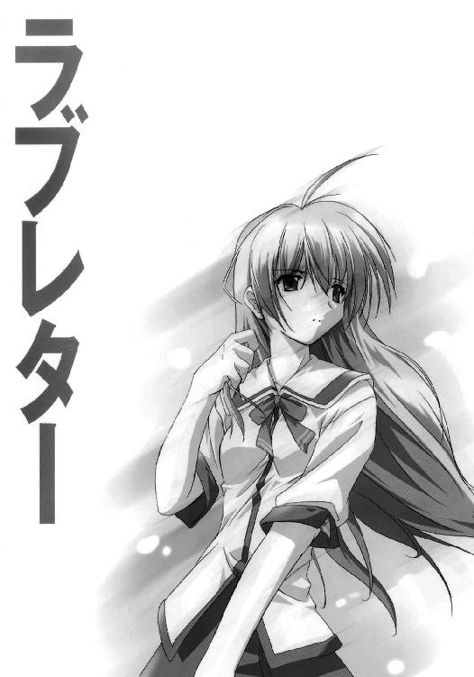
そうに決まっていた。
あの子は宇宙人だ。やっぱり部長は正しかった、園原基地はＵＦＯの基地なのだ。宇宙の彼方からやって来たＵＦＯが秘密裏に着陸するための場所なのだ。宇宙人と政府の偉い人たちが同じテーブルで話をしているのだ。来るべき「開戦の日」に備えるために、政府の偉い人たちは宇宙人の進んだ技術を手に入れようと躍起になっているに違いない。ところが、宇宙人たちはヘリウムガスを吸ったような声で「アナタ方人類ガ戦争ノ放棄ト世界平和ヲ実現シタソノ暁ニ全テノ技術ハ提供サレ、地球ハ宇宙社会ノ一員トナルノデス」とか何とか言うのだ。どの本を読んでもそうだ、宇宙人というのはなぜか地球の平和をすごく気にするのだ。宇宙人たちは北の偉い人たちとも同じような話をしているに違いない。戦争がいつまでたっても始まりそうで始まらない理由もそれだ。どちらの陣営にとっても宇宙人の技術は決定的な切り札になり得るから。事を起こすのならそれを手に入れてからにしようと両方が思っているから。膠着状態は長く続き、そして宇宙人たちはついに具体的な行動に出た。人類社会のありとあらゆる場所に人間に化けた無数のエージェントを放ったのだ。彼らの任務はひとつ、人類の本性をその目で直接確かめること。果たして人類は平和を愛する知的な種族なのか、それとも同胞殺しに明け暮れる野蛮な種族なのか。もし調査の結果が後者と出れば、地球はすぐさまＵＦＯの超兵器で木っ端微塵にされてしまうのだ。絶対そうだ。伊里野と名乗るあの女の子もエージェントのひとりなのだ。
「中学生」担当の。
授業の内容など、まるで憶えていない。
二限目終了の鐘は鳴り、飯塚は墓場に帰り、右肩上がりの数字の群れは黒板拭きに一掃された。それでも思考の泥沼から抜け出せない、開いただけで結局は一文字も書き取らなかったノートの白を見つめ、消しゴムのなくなった安っぽいシャーペンをだらしなく握り締めたまま身動きもできない。浅羽はただひとり、休み時間からも現実からも切り取られ、出来の悪いコラージュのごとく窓際の席にべったりと貼りつけられ、頭の中の黒板に書き込まれた『伊里野加奈』の文字をいつまでもどうしても消すことができずに
「おい浅羽！」
額を小突かれた。目の前に花村の顔がある。椅子に後ろ前に座り、大げさに身を乗り出し、浅羽の顔を下からのぞき込んでむひひと笑う。
「なんだよボケっとして。ひょっとしてあれか、『あいつは気になる転校生』の巻か？」
図星と言えばまあ図星だ。が、ここまでとんちんかんな図星もそうはない。
「う、うるさいな」
西久保がいきなり浅羽の両肩にぽんと手を乗せ、
「まあ、ほどほどにしとけよな。新聞部に勧誘なんかしたら須藤に刺されるぞ」
浅羽はさらにうろたえる。西久保の手をふりほどいて、
「あ、晶穂は別に」
花村はどかりと頰杖をつく。うすら笑いを浮かべ、痴漢の指先にも似たワイセツな目つきで教室の後ろをじっとりとまさぐり、
「だめだめ。あれは新聞部ってタイプじゃない。『園原電波』じゃなおさらだ」
西久保が花村の視線の先をたどり、「まあ、そうかもな」とつぶやく。浅羽もまた、腹の底でひそかに勇気を振り絞り、顔を上げ、ゆっくりと教室の後ろを振り返る。
いる。
教室の一番後ろの、廊下側から二番目の席。その隣に、つい一時間ほど前までは存在していなかったはずの「廊下側から三番目の席」があって、夢でも幻でもなく、そこに伊里野が座っている。
ただ、座っている。
何をするでもなく、何があるわけでもない机の上に、ろくに瞬きもしない視線をじっと落としている。人に捕らえられても抵抗しない、しかし決して人に馴れることのない動物のような雰囲気。
──伊里野、加奈です。
あー、聞いて驚け。伊里野くんは帰国子女だ。
ぺこりと頭を下げた伊里野の隣で、河口泰蔵三十五歳独身はそう言った。
河口はさらに、カエルの解剖なみに無神経な口ぶりで、伊里野の来し方についてひと通りの説明をした。両親はすでに他界、航空自衛軍に勤務する兄とのふたり暮らし、その関係で長らく海外の軍事基地で生活してきたが、兄の園原転属を機に帰国、現在の住まいは園原市園原基地居住区画。──そうか忘れてた、机がないな。おい日直、用具室までひとっ走りして椅子と机持ってきてくれ。あー、そういうわけだから、伊里野くんはまだ日本の学校生活のあれやこれやに不慣れな面もあるかと思う。そのあたりについてはみんなで色々とアドバイスなどしてやってほしい。わかったな？
わからなかった。
河口の説明が、まるっきりの噓であるとは思わない。
しかし、その説明は、ゆうべのプールでの出来事とまったく嚙み合ってはくれない。最初からやけに騒がしかったパトカーのサイレン、プールの水面をじっと見つめていた伊里野の細い肩、兄貴と名乗る謎の男の出現、プールを包囲していた黒服の集団、その後の記憶の断絶、
そして、今はリストバンドに隠されている、銀色の、
──なめてみる？
「──電気って、なめると味がするのかな」
浅羽のつぶやきに花村と西久保は顔を見合わせ、ふたり同時に、
「はあ？」
「え？ あ、いやその、」
西久保が背後から浅羽の髪の分け目を両手でぐいと押し開いた。
「お前さ、山ごもりで脳ミソまで日に焼けちまったんじゃねえの？」
浅羽が「やめろよばか」と西久保の手をふりほどく。そのとき花村が、
「おい見ろよあれ。どこのクラスの連中だあいつら。もう噂が伝わってんのかな」
教室の入り口の扉から、どこかよそのクラスの男子生徒たちが顔をのぞかせていた。実に物欲しげな目つきで伊里野の方をじろじろとながめている。花村がひひひと笑い、
「まるでトンビに油揚げさらわれましたってツラだな」
それを聞いた西久保がいきなり「あ」という顔をした。
「──そっか、そうかそれだ。思い出した。あいつらたぶん一組の連中だ」
浅羽と花村は「なにそれ」という顔をする。
「いやだから、トンビに油揚げだよ。一組の最上って奴知ってる？ おれあいつと知り合いなんだけどさ」
浅羽は首を振る。花村は「知らね」と答える。西久保は早口に、
「夏休みの前に奴が自慢してたんだ。休み明けに女の子の転校生が来る予定だって」
浅羽よりも早く花村が、
「──え、じゃあの伊里野って、ほんとは一組に編入される予定だったってこと？」
「たぶん。さっきだって河口がほら、あいつの席用意してなくって日直に取りに行かせたりしてたしさ。前々からうちのクラスに来るって決まってたんなら席くらいあらかじめ用意しとくだろ普通。何かの事情でいきなり予定が変わったんだよきっと」
「何かの事情って、どんな？」
「そこまで知るか」
何かの事情。そのたったひと言が、今の浅羽にとっては途方もなく重い。そのあまりの重さにうつむき、恐るべき想像が再び頭の中でとぐろを巻き、健康に悪い感じの汗が背中の真ん中をひそかに這いずり落ちていく。
やはり、きっかけはゆうべのプールの一件なのではないか。
ひょっとすると、「最初に出会った中学生だから」とかそんな理由で、自分は伊里野の「重要調査対象その一」に指定されてしまったのではないか。自分の一挙手一投足が人類の運命を左右するのだろうか。どうしようどうしよう。調査するなら別の誰かにしてほしい。西久保とか。花村だとちょっとまずいと思う。部長なんかが調査対象に選ばれたら人類滅亡五秒前だ。
西久保と花村は浅羽のそんな苦悩をよそに、伊里野を眺めながら口々に、
「──なんか、へんな奴だよな」
「かわいいから許す」
「ひょっとして、日本語あんまり得意じゃないのかな」
「かわいいから許す」
「お、お。見ろよあれ。あいつら敵前上陸するつもりだぜ。さすがは級長サマ」
聞き捨てならなかった。
反射的に背後を振り返ると、二年四組学級委員長の中込真紀子を旗艦とする女子生徒四人のなかよし連合艦隊が、「伊里野」島めがけて机と椅子とひそひそ話の海原を果敢に進撃していくところだった。伊里野は敏感に「敵」の出現に気づき、彼我の距離が机三つ分を割ったところで不意に顔を上げ、まるで表情の読めない視線をひたと中込に据えた。が、それでも中込はひるまない。周囲の誰もが事の推移を目の端で追いかけ、会話を聞き漏らすまいとして声を落とし、教室から休み時間の喧騒が溶けるように引いていく。中でも浅羽は気が気ではない、やめろ中込、ぼくらの地球をどうするつもりだ。
そして中込は、伊里野の目の前に立った。
第一声。
「──あ、あのね、」
失速。そこで中込はひそかに深呼吸をして、だいぶ無理をしている感じの笑みを浮かべ、
「わたし、中込真紀子。わたし級長だから、わかんないこととかあったら何でも聞いてね」
伊里野は、まったくの無言。
さしもの中込もたじろぐ。その他三人があわててそのフォローに入る。次々と名乗ってその場しのぎの波状攻撃。前はどこに住んでたの？ あたし英語苦手だから教えてね。わたしも小学校のときに転校してきたの。お兄さんってかっこいい？
伊里野は、うつむいてしまった。
そのことが中込たち四人の「なんとかしてあげなければ」という気持ちを煽るのか、さらなる言葉が矢継ぎ早に飛び交う。それでも伊里野は沈黙を守り通す。こうなると四人も伊里野だけに話しかけるだけでは間がもたなくなって今度は仲間同士で話を始め、ときどき「ね？」と伊里野に振る。が、伊里野はそのたびにますます塹壕の奥深くへと逃げ込み、それを追う中込たちもいつしか引き際を見失っていた。見ている方の胃が痛くなるような、浅羽にとってはそれこそ髪の毛が真っ白になってしまいそうな、誰にとっても長い長い長い、しかし実際にはトイレに行って帰ってくる程度の時間がじわじわと過ぎていき、
そして、ついに伊里野が顔を上げた。
中込たちの会話が途切れ、教室中が露骨に伊里野の次の行動を注視した。伊里野はそのことに怯み、溺れる者の視線を教室の中にさ迷わせ、その視線はやがて、とある窓際の席を探し当てて止まった。
ざわめきが満ちていく。
誰の目にも明らかだった。
伊里野は、まるで助けを求めるかのように、はっきりと浅羽を見つめていた。
「おい、」
花村が小声でつぶやく。西久保は横目を使う。
それでも浅羽はしばし無言でいた。二限目からずっと手にしたままだったシャーペンをぱたりとノートの上に置き、静かに椅子を引いてゆっくりと立ち上がる。
そして、伊里野から今度は自分へと感染してきた衆目の真っ只中で、誰に言うともなしに、浅羽はこう言った。
「トイレ」
そう言った手前、本当にトイレに行った。
ひとり個室にこもった浅羽は、誰もそこまで見ちゃいないのに、ご丁寧にもズボンとパンツを下ろして便座に座った。どうやら、ついてしまったウソは可能な限り小さく圧縮しておきたいらしい。
そして、ケツ丸出しのままで悩んだ。
九対一くらいの割合で、自分のことが情けなく、伊里野のことが腹立たしかった。
が、悩み始めてまだいくらもしないうちに三限目開始の鐘が鳴った。浅羽は深いため息をつき、下げなくてもよかったズボンを上げ、流さなくてもいい水を流し、洗わなくてもいい手を洗ってトイレからよろぼい出た。
「超腰抜け」
そこを晶穂に待ち伏せされていた。
「な、何がだよ」
虚勢を張った。他人事だと思って、じゃあどうすればよかったって言うんだよ──そう言ってやりたい気もしたが、晶穂が何だか恐い顔をしているので余計なことを言うのはやめて、
「──鐘も鳴ったし、もう教室戻らないと」
晶穂はまったく取り合わない。
「あの子と知り合いなの？」
「いや、そういうわけじゃないけど、」
そこから先は、呼吸もできないくらいに言葉が濁る。
「じゃどういうわけ？」
とにかく、ここは晶穂の追及をかわす以外にない。
「ほんとに知らないって。ぼくは夏休みの間ずっと部長と山ごもりしてたし、あの子はつい最近外国から戻ってきたばかりだって河口が言ってたろ？」
晶穂は疑り深い目つきで浅羽をじっとにらみつけ、いきなりこう言った。
「プールね」
口から心臓が飛び出すかと思う。
「一限目が始まる前に浅羽、スクール水着がどうしたとか聞いてきたもんね。それに浅羽は部長と違って、山ごもりの間もときどき家に帰ってたもの。市営プールかどこかであの子に会ったわけね。で、そのときのあの子の水着にはまだ名札がついてなかったわけね。ヘー。そうなの。ふーん」
まあ、晶穂がそう思うのならそれでいいや、と浅羽は思った。
疑問に一応のオチがついたせいか、険しかった晶穂の表情にも若干の余裕が生まれ、
「あの子日本語苦手なの？ 話とかした？」
西久保と似たようなことを言っている。あの寡黙さに帰国子女という説明が加われば、誰しも思うことは同じであるらしい。
頭がくらくらする。
「さあ──」
足がふらつく。
「何よそれはっきりしなさいよ。話くらいはしたんでしょ？ そのとき──、ねえ、ちょっと浅羽、大丈夫？ 顔が真っ青だけど」
いきなりだった。
天地がひっくり返るようなめまいに襲われて、あっという間に立っていられなくなった。その場にしゃがみ込む。強烈に気分が悪い。乗り物酔いとインフルエンザが一緒になったような感じ。噴き出すような吐き気を懸命にこらえる。
「大丈夫!? ねえ浅羽どうしたの!?」
晶穂が大騒ぎしている。強烈な視野狭窄を起こした視界のすぐ外で、廊下を行き交う生徒が驚いて足を止める気配がする。大声出すなよみっともない、と心のどこかでちらりと思うのだが、それを口に出すだけの余裕はどこにもない。冷たい汗が顔じゅうに噴き出てくる。
何度も深呼吸をした。
そして、始まったのと同じくらい唐突に、気分の悪さは急速に引いていった。
どうにか立ち上がった。額の汗をぬぐい、自分の顔の冷たさに自分でびっくりする。めまいがかなり尾を引いてはいるが、それでも気分はずいぶんましになってきた。
「なおった」
浅羽はそう言った。が、晶穂の目から見れば、浅羽の顔色は真っ青を通り越して真っ白だった。晶穂は浅羽の手をぐいとつかみ、
「なおってない！ 保健室行こ！ あたしがついてってあげるから！」
確かに、保健室には行った方がいいと思う。
それでも、晶穂に付き添ってもらうほどではないとも思う。
「ひとりで行けるって、授業始まるから教室戻れよ」
晶穂はまったく取り合わない。浅羽の手を引っぱってずんずん歩き始める。
園原中学校の廊下は昔から伝統的に散らかっている。壁際には教材の空き箱が積み上げられ、ロッカーに入りきらないモップやバケツが並び、いつまでも剝されない「新入部員求む」の貼り紙は誰かが通るたびにヒラヒラと手招きをする。保健室の入り口はその先、体育館へ続く渡り廊下の手前にあって、「清酒・天王山」というロゴの入った看板が出ているのですぐわかる。去年の学園祭で女子バスケ部がやらかしたお見合いパブの名残だ。扉のわきには「火元責任者・椎名真由美」と書かれた札が下がっていた。
晶穂は力いっぱい扉を開けて、
「失礼しますっ」
よろめく浅羽の手を引いて保健室に駆け込み、ちょうど扉の反対側にいた男子生徒三人と正面衝突しそうになった。
「さーさーもうすぐ次の授業始まるわよ行った行った」
その三人の背中を椎名真由美が両手でぐいぐい押していた。三人のうちの真ん中は去年まで浅羽と同じクラスだった船津で、浅羽に気づいて「よお」と言うなり目を真ん丸にして、
「なんだお前その顔色？」
まだそんなにひどい顔色なのか、と浅羽は思う。椎名真由美も浅羽の顔をひと目見るなり、
「おっと、こっちは仮病じゃなさそうね」
うわひっでーおれらだって病人なのにー。船津たちはデレデレした笑みを浮かべながらそう抗議するが、椎名真由美はお構いなしに、
「っさいなもーこのケビョー野郎どもさっさと行けばーか」
あっという間に三人を廊下に蹴り出して、背中で扉をぴしゃっと閉めてしまった。休み時間のたびに同じようなことをしているので実に手慣れている。
園原中学校の生徒はたいてい、椎名真由美を評して「よく見ればすごい美人」と言う。化粧気がまるでない上に服装はいつも白衣なので目立たないのだ。おまけに言葉づかいがひどく乱暴で「けつ」とか「ちんこ」とか平気で言う。夏休みが始まるひと月ほど前に、病気療養のために長期休暇を取ることになった黒部先生と交代でこの学校にやって来た。男子生徒からも女子生徒からも「もう少しきれいな格好すればいいのに」と言われ続けているが、本人は少しも堪えない。毎日毎日、白衣のポケットに両手を突っ込んで、スリッパをぺたぺた鳴らしながらうれしそうに歩き回っている。
「あの、」
晶穂が口を開きかけたそのとき、椎名真由美はいきなり大声でさえぎり、
「待って！ 当ててみせるから」
そう言って、眉根を寄せて浅羽の青い顔をじっと見つめた。熟考すること十秒と五秒、これに間違いなしとばかりにうなずき、浅羽をびしりと指差してずばりと言い切った。
「シンナー」
「ち、違いますっ！」
と晶穂は大声を出し、浅羽を横目でちらりと見て、
「違うでしょ？」
「違うよ」
自分で説明しようと思って、
「──あの、さっき急に気分が悪くなって、吐き気とかして」
そこで晶穂が口を挟む、
「ほんとにいきなりだったんです、顔色なんか今よりもっと真っ青で」
椎名真由美は落ち着いている。浅羽を丸椅子に座らせ、自分はその向かいのパイプ椅子に腰を下ろす。
「今も顔色よくないわね。朝ご飯ちゃんと食べてきた？」
浅羽はうなずき、
「けど、今はもう吐き気もしないし、気分もだいぶ楽です」
「少し寝てった方がいいかもね。先生の方にはあたしが連絡しとくから、クラスと名前は？」
浅羽が口を開くよりも早く、晶穂が「二年四組の浅羽直之です」と答えた。
椎名真由美は胸のポケットからボールペンを抜き取り、「二の四の浅羽ね」とつぶやきながらヒモ綴じの名簿をめくり、ふと眉根を寄せて「浅羽？」とつぶやき、まったくの突然に、
「うそお、浅羽くん!? きみ、浅羽くんなの!? 二年四組の浅羽くん!?」
浅羽も晶穂も思わずのけぞってしまうくらいの大声でそう言った。
椎名真由美は「は～～～～あなあるほどね～～～～ぇ」と何やらひとり納得し、浅羽が椅子の上で思わず逃げ腰になるくらいに好奇心むき出しで身を乗り出して「へ～～～～ぇそっかそっかぁ、きいみが浅羽くんかあ。ふう～～～～ん」などと言いつつニヤニヤ笑っているかと思ったら、いきなり重大なことを思い出したかのように「はっ」として、
「ってことはきみ、あの浅羽くんなのよね!? 気分が悪いの!? 大丈夫!?」
──何なんだこの人。
浅羽はただただ呆然とするばかりだったが、晶穂は椎名真由美が慌てふためいているのを見て急に心配になったのか、
「あ、あの、どうかしたんですか？」
「へ？ あ、いやいやいや違うの違うのなんでもないの。ええっと、うん、それじゃ浅羽くんのことは引き受けたからあなたは教室に戻りなさい。もう授業始まってるし。ね？」
椎名真由美は日ごろ鍛えたワザにものを言わせ、まだ何か言いたそうな晶穂の背中を両手でぐいぐい押して保健室から追い出してしまった。
ぴしゃりと扉を閉める。
くるりと振り返る。それまでとはうって変わった険しい表情、
「──念のためにもう一度聞くわね。園原中学校、二年四組、出席番号一番の浅羽直之くん。間違いないわね？」
「──はい。そうです」
口調のあまりの真剣さに浅羽は不安になる。椎名真由美は唇を嚙んで天井を仰ぎ、何かを一心に考え、再び浅羽を見つめてさらに尋ねる。
「急に気分が悪くなって、吐き気がしたのね？」
「──そうです」
椎名先生は浅羽の向かいにどすんと腰を下ろした。どこか乱暴な手つきで脈を計り、まぶたを裏返してのぞき込む。ふぅ、と鼻から息を吐き、椅子にまっすぐに座り直して、
「じゃあね、これからちょっとした検査をします。わたしがいくつか質問をするから、それに答えてほしいの。普通の問診とは少し違うんだけど、正直に答えてくれないと正しい結果が出ないってところは同じ。わかった？」
浅羽はうなずく。
そして、最初の質問はこうだった。
「今日は何月何日？」
いきなりすぎて答えられなかった。椎名真由美の凝視が浅羽の焦りに拍車をかける。不意打ちなんてズルい、そんなことを思っているうちに時間は一秒ずつ逃げていく。
「あ、その、だから今日は、そう、二学期最初の日だからつまり、九月の一日」
十秒もかかってやっとそう答えた。
息つく間もないタイミングで次の質問が飛んできた。
「何か持病はある？」
「え。あ、ないです。ありません」
「じゃあ、いつも飲んでる薬とかはないのね？」
「ええと、ビタミンＣとかたまに。粉の。親父がそういうの好きで」
「Ｃって、アスコルビン酸？」
「あー、えっと、詳しくはわかんないですけど」
「17足す26はいくつ？」
また油断していたので、今度は二十秒くらいかかってしまった。
「──さん、じゃなくてよんじゅう。43？ あ、あの、もう一回最初からやり直しとか、」
「何かアレルギーはある？」
「へ？ いや、ない、と思います」
「校長先生の名前を答えて」
「、村山莞爾」
今度はどうにか即答できた。得意になっている間もなく、
「気分が悪くなったとき、ひどいめまいがしなかった？」
「えっと、はい」
「顔や手足が冷たくなったりは？」
「しました。今は平気ですけど」
そして。
「六月二十四日は何の日？」
これはきっと、相手の神経か何かの具合を調べるテストなのだと思う。
どれが本命の質問なのかをわからなくするために、ダミーの質問がどっさり混ざっているのだろう。それとも、質問には本命もダミーもなくて、何でもいいから次々とテーマを与えて考えさせることが狙いなのかもしれない。質問に何と答えたかは実はどうでもよくて、そのときにどんな反応を見せたかが重要なのかも。知らず知らずのうちに手が震えるとか目玉がきょろきょろ泳ぐとか。
だけど、
それにしても、
「──それ、その質問って、絶対に六月二十四日じゃなきゃいけないんですか？」
答えではなく、質問が返ってきた。
「気分が悪くなったとき、動悸が早くなったりとかは？」
「──それは、なかったと思います」
「球形プラズマ、蜃気楼、観測気球。あなたが写真に撮るとしたらどれ？」
「──あの、」
「マンテル。チャイルズ＝ウィッティド。その次は？」
聞き覚えがある。答えが頭の中から転がり出てくる。ＵＦＯ目撃史上における三大事件。マンテル大尉墜落、チャイルズ＝ウィッティド目撃、
だから三番目は、ゴーマン空中戦。
「気分が悪くなったとき、目の前が真っ白になったり、ちかちかする光が見えたりした？」
「──いえ」
「さっきからずっとあなたの後ろにいるのは誰？」
身動きもできない。
「幻覚や幻聴は？ 自分の手の指が七本あるように思えたり、誰かがあなたの臓器を抜き取る相談をしている声が聞こえたりはしなかった？ 螺旋アダムスキー脊髄受信体、って言葉に聞き憶えがある気はする？」
保健室の外で、セミが鳴いている。
──何なんだ、この人。
窓の外には、物の輪郭を白く溶かすほどの夏の日差しが満ちている。
保健室の中は薄暗く、不自然なくらいに涼しく、古びた薬の匂いが微かに漂っている。窓際のカーテンが音もなく風を孕んで幽霊のようにはためく。そこかしこに目につく赤十字のマークは犠牲者を安心させるための罠なのかもしれない。喫煙の害を説く掲示物と病巣にまみれた肺のカラー写真、手術室を思わせるタイル張りの壁、温かみのまるで感じられないベッド、戸棚の中に並ぶ毒々しい色のガラス瓶、血も涙もない大きなピンセット、取りつく島もない大東亜製薬の蒸留水、何百人分もの吐瀉物を受け止めて表情ひとつ変えなかった白い洗面器。
考えてもみろ。
黒部先生は、いつの間にかいなくなっていた。
病気療養のための長期休暇。
あんなに元気そうだったのに。
代わりに椎名先生がこの学校にやってきて、あっという間に人気者になってしまった。
すべては、宇宙人の陰謀なのではないか。
ここは、薬の匂い漂う清潔な地獄ではないのか。自分の目の前にいるこの人も、実は宇宙人の手先ではないのか。椎名先生は確かによく見ればすごい美人だし、話のわかる感じだし、男子にも女子にも人気があるけれど、誰も見ていないところでは頭がぱっくり割れてそこから触手がびゅるびゅる飛び出したりしているのではないか。夜になるとこの保健室にはＵＦＯが連れ去ってきた人々が運び込まれ、スリッパぺたぺた触手びゅるびゅるの椎名先生が血しぶき飛び散る恐ろしい人体実験を
「──浅羽くん？ ねえ浅羽くんどうしたの!? また気分が悪いの!?」
浅羽が我に返ったのは、大声で呼びかけられたからではなく、肩を揺すぶられたからでもなくて、椎名真由美の髪がほんのりと漂わせているシャンプーの匂いを感じたからだった。それほど近くにあった椎名真由美の顔がさらに近づき、額と額をくっつけ合わせて浅羽の熱をみた。
「──だ！ 大丈夫です平気です、あの、ちょっとぼんやりしただけです」
途端に恥ずかしくなって、浅羽はあわてて頭を引いた。
「ほんとに？」
椎名真由美は浅羽をじっと見つめている。
ものすごく心配そうな顔をしている。
「──それじゃ、これを見て」
浅羽の目の前にボールペンが突き出された。ボールペンのボディは透明なプラスチック製で、その中に赤い水着姿の金髪女性がいる。その水着が実は赤く着色された細かい砂でできており、浅羽の目の前で砂がさらさらと流れ落ちて、金髪女性はすぐに素っ裸になった。浅羽が思わず人生の意味について悩み始めると、
「ボールペンを動かすから、この先っぽを目で追いかけて」
椎名真由美はボールペンを上下左右に動かし、浅羽の目の動きをじっと観察した。浅羽は動き続けるボールペンの先に意識を集中させようとしたが、いくらもしないうちに目のずっと奥のあたりに「じわり」と滲むような痛みを感じた。
「──頭が痛い？」
浅羽がうなずく。椎名真由美は目隠しをするように右手を浅羽の顔に当て、左手を後頭部に添えて、浅羽の頭を仰向けにした。途端に目の奥の痛みが引いていく。
「もう痛くないでしょ？」
浅羽がうなずく。椎名真由美は天井を仰いでしばし何ごとかを考え、小さくため息をつき、何かの結論が出たのか、「よし」と気合を入れて椅子から立ち上がった。
「もう大丈夫だと思うけど少し横になって身体を休めた方がいいわ。それとこれ飲んで。よく眠れるから」
有無を言わせぬ口調だった。黄色の錠剤がふた粒と麦茶の入った紙コップが差し出され、浅羽は言葉の勢いに押されて言われるがままにその薬を飲んだ。もたもたとベッドに横になってタオルケットをかぶる。
「ゆっくり休んでね」
そう言って、椎名真由美は仕切りのカーテンを勢いよく閉めた。
横になった途端に、身体の芯からじわりと眠気が湧き起こってきた。さっきの薬がもう効いてきたのだろうか。いくらなんでも早すぎる気がする。それとも、知らず知らずのうちにそこまで体力を消耗していたということなのか。
仕切りのカーテンの外で、椎名真由美が小声で「──ったくもう」とつぶやいた。
スリッパの足音がぺたぺたと保健室を横切っていく。椅子にどすんと腰かける音、受話器を取り上げる音、電話機がガタつくほどの勢いで乱暴にボタンを押す音。眠気にゆっくりと塗りつぶされていく意識の中で、浅羽はカーテンの外から聞こえてくる物音のひとつひとつを追いかけていた。
椎名先生が、どこかに電話をかけようとしている。
自分が三限目の授業を休むことを先生に連絡しようとしているのかと思ったが、違った。番号の桁が長い。外線だ。どこにかけているのかは、もちろんわからなかった。
眠い。
電話の相手は、すぐに出た。
「──もしもし。バックアップの椎名だけど。そう、保健室の。──わかってるわ、あんたに言われるまでもないわよそんなの。いいから榎本に、──ちょっと？ もしもし!?」
切りやがった、という椎名真由美のつぶやきが聞こえた。受話器のフックが叩きつけるように押され、再び乱暴にボタンが押され、しばらくしていきなり、
「てめぇざけんなよこら上司の電話叩っ切るたあいい根性してんなこの野郎!! っさいわね大きなお世話よさっさと榎、あ──もうっ!! いいからっ!! 何か言われたらあたしがケツ持ってやるからさっさと榎本出しなさい!!」
ぶ厚い眠気の底で、浅羽はぼんやりと驚いている。
榎本って誰だろう。
ずいぶん長い間があって、ようやくその「榎本」が電話に出た。
「──どうして電話したかわかってる？」
ごく短い間、
「はずれ！ 勤務中にそんなことしてんのあんただけよバカ！」
間、
椎名真由美がせせら笑い、
「とぼけちゃって。いいわ、ヒントあげる。いまここに誰が来てると思う？」
短い間、
「しらばっくれるのもいい加減にしなさいよ！ あんたゆうべ浅羽くんにミストカクテル使ったでしょ!? どうしてそういう危ないことするわけ!? あれでもう何人も、」
自分の名前に反応して、眠気の底に沈みかけていた浅羽の意識がわずかに浮上する。
「知らなかったですむ問題じゃないわ!! もし万が一のことがあったらどう責任取るつもりだったのよ!? 虫を入れるにしたって他にもっとマシな、」
そこで唐突に言葉が途切れ、受話器から聞こえてくる弁解の言葉にじっと耳をかたむけているかのような、長い長い間があった。
やがて、鼻から受話器に吹き込むようなため息が聞こえ、
「──で、何を入れたの？」
一単語分の間。
「そう」
間、
「──いえ。無難な選択だと思うわ。わたしでもそれにしたと思う」
椅子から立ち上がる音、スリッパがぺたぺたと歩き回る音。電話機を手に持って歩きながら話しているのか、声が窓際の方に移動していく。
「ええ、違うわ。虫が当たってるんならもうとっくに死んじゃってるはずだから。詳しい検査でもしなきゃ断言はできないけど、ミストのフラッシュバックだと思う」
間、
窓を閉める音、
さらに間、
「当たり前でしょバカ。とにかく、これだけは言っとくわよ。今のあたしは、あくまでも中学校のいち養護教員なんだからね。二日酔いの朝なんかトイレに隠れてブドウ糖打ってんだからね。なりふり構わず大っぴらにやってあんたの計画がぜんぶパーになってもいいんなら別だけど、ミストの過剰摂取ショックを赤チンとラッパのマークで何とかしろなんて言われたってぜったい無理だからね。へんに頼りにされても困るの。連絡の不徹底は、もう、ぜったいに、これっきりにして。いいわね？」
そして、一秒たりとも返事を待つことなく、殴りつけるような勢いで受話器がフックに戻された。
保健室に静寂が戻った。
窓からの光を背に受け、ベッドのすぐそばに立っている椎名真由美の姿が、仕切りのカーテンに薄い色の影となってぼんやりと浮かんでいる。カーテンを通して浅羽の姿が見えているかのように、椎名真由美の影は浅羽の枕元のあたりをじっと見下ろしている。
やがて、
「──浅羽くん？ 起きてる？」
沈黙。
「あのね、加奈ちゃ──、」
椎名真由美はそこで言いよどみ、半ば独り言のような口調でこう続けた。
「伊里野さんと、仲良くしてあげて」
そして、そのときにはもう、浅羽はとっくに眠り込んでいた。
暑くて目が覚めた。
宙に漂うホコリが輝いている。窓からの日射しは眠っている間に大きく角度を変え、仕切りのカーテンをぶち抜いて浅羽の顔面を斜めに炙っていた。両腕で目を庇い、寝汗で湿っぽくなったタオルケットを蹴りのけて身体を起こす。
気分は悪くない。めまいもしない。
電話で誰かとケンカする夢を見ていたような気がする。
「──椎名先生？」
カーテンの隙間から顔を突き出す。椎名真由美の姿はない。壁の時計を見て少し驚いた。昼休みも終わり、五限目が始まっている。
教室に戻るのは、なんだか気が進まなかった。
今日はこのまま帰っちまおうか、と少しだけ思う。
一応は「教室に戻ります」というメモを椎名真由美の机に残し、保健室を出て、ひと気のない廊下を歩きながらもぐずぐずと迷っていた。今日は水曜日であり、水曜日の五限目は英語であり、英語の岸本は実にイヤミなおばはんである。やっぱり五限目が終わるまでは保健室にいた方が利口なのではないか──そう思ったときには、もう教室の前まで来ていた。
そして、教室には誰もいなかった。
黒板にはチョークの腹で書いたと思しき太字で、
『五限の英語は視聴覚室』
今日はとことん授業に縁のない日だ、と浅羽は思う。
殊勝な気分はいっぺんに霧散してしまった。
やっぱり帰ろう。
今度こそ腹を決めて、断固として帰り支度を始めた。視聴覚室で英語の授業と言えば聞こえはいいが、岸本のそれは字幕ＯＦＦの映画を見せて感想を英語で書かせるだけの、要は手抜きなのだ。しかも五限目。どうせ今ごろ、クラスの連中の半分くらいは舟を漕いでいるに決まっている。まともな感想を提出できるのは伊里野くらいかもしれない。なにしろ伊里野は帰国子女だし──
帰り支度をする手が止まった。
浅羽はゆっくりと顔を上げ、教室の後ろを振り返る。
伊里野の机がそこにある。
そして今、教室には誰もいない。窓から斜めに射し込む日差しの斜面が教室の薄暗さを際立たせ、緩く吹き込む風が日なたの熱を運んでくる。
浅羽の脳裏に、不穏な考えが忍び込む。
緊張感が胃液に混じって腹を重くする。鼓動が駆け足を始める。浅羽はゆっくりと伊里野の机に近づいていく。なに考えてるんだバカ、やめろ、そいつは絶対にまずい──頭の中でもうひとりの自分が叫んでいるが、浅羽の足は止まるどころかさらに速まった。伊里野の机に手を乗せて、誰もいるはずのない教室の中をもう一度見回した。壁の時計が目に入る。
三分だ。
制限時間は三分。何も出なくても三分で切り上げる。そう決めた。
作戦開始。
椅子を引いて机の中をのぞく。空っぽ。フックに掛かっている真新しい通学鞄を取り上げて机の上に置く。ステッカーが貼られているわけでもなく、マスコットの類もついていない。「かっこ悪いし邪魔だから」という理由で大抵の生徒が外してしまう名札入れが取っ手についたままになっているが、中のカードには名前も住所も電話番号も血液型も書かれてはいない。
鞄のふたの留め金に指をかけた。
もうひとりの自分が必死になって止めている。悪いことは言わないからもうやめておけ、本気でやばいぞ、ゆうべからあれだけ色々な目にあったくせに、自分がもう首までドブにつかってるんだってことがまだわからないのか、色気づいた小学生じゃあるまいし、好きな子の笛をしゃぶるのとはわけが違うんだぞ、相手は宇宙から来たエージェントなんだぞ──!!
──宇宙人が怖くて園原電波の特派員が務まるか。
震える息を吸い込む。
留め金を外した。
鞄を立ててふたを開けた。中をのぞき込む。右半分には真新しい教科書と色気のない螺旋綴じのノートが縦に入っており、左半分には布包みのようなものが突っ込んである。机の上に出してみるとそれは手下げ袋で、中には何か角張ったものが入っている。昼休みを過ぎた弁当箱にしては重い。
まずは鞄の方を先に調べてしまおうと思って、ポケット状の仕切りの中を手で探った。
パスケースが出てきた。
開ける。
中には、得体の知れないカードが四枚。
うち一枚は、園原基地のゲートが発行する通行許可証のようなものらしかった。プラスチック製で、指では容易に曲げられないくらいにぶ厚くて、カードの裏には機械で読み取る磁気面がある。表には伊里野の顔写真がついており、わけのわからない数字や略号と並んで、おそらくは基地居住区内の住所と思われるものが記入されている。「氏名」の欄が空白のままになっているのはなぜだろう。
残りの三枚はすべて同じものに見えた。テレホンカードによく似ている。角が丸くて手触りもふにゃふにゃで、右端が小さく丸く欠けているところまでそっくりだった。自分の財布からテレホンカードを取り出して重ねてみると、大きさも形もぴったり合う。見れば見るほど、これはまさにテレホンカードなのではないかという気がしてくる。が、文字や柄がまったく印刷されていない。裏も表もグレー一色で、度数を示す数字もバーコードも、曲げるな汚すな磁気に近づけるなという注意書きもない。ただ一点だけ、小さな三角形の矢印のようなものが印刷されていて、そっちが表でその方向に挿し込んで使うものらしい、ということがかろうじてわかる。しかし、挿し込むその先は、果たして本当に公衆電話なのか。
浅羽は、頭の中でやめろと絶叫する自分の声を無視して、テレホンカードのように見える三枚のうち一枚をズボンのポケットに突っ込んだ。
壁の時計を見上げる、もう二分が過ぎている。
焦る。
カードをパスケースに戻して鞄のポケットに投げ込む。これを調べれば終わりだと自分に言い聞かせて、手下げ袋に手をかけた。生理用品でも出てきたらどうしようと内心恐れ戦きつつ、ひと思いに中身をあける。
プラスチック製の薬の小瓶三本と、携帯用のゲーム機と、ソフトウエアのＲＯＭパック三つが出てきた。
薬の瓶を見た途端、やっぱり昨夜のプールでの出来事は夢ではなかったのだ、という奇妙な安堵を覚えた。小瓶のフタを開けて中身を手のひらにこぼしてみる。糖衣錠ではなく圧縮成形の錠剤。色は白っぽくて、文字や番号の刻印はない。瓶の中身は三本ともに同じもののように見えたが、浅羽はそれぞれの瓶から三粒ずつ取り出して、それぞれをティッシュにくるんでポケットに入れた。頭の中の声が呆れ声でつぶやく。もうダメだね。お前絶対消されるね。
そして、最後のブツである携帯用のゲーム機を手に取った。
よく見かける、ごく普通のゲーム機だった。アナログの方向キーとボタンが四つ、その上にカラー液晶のメイン画面があって、その周囲をレーザー表示用のポートが囲んでいる。この機種には値段によって三種類のタイプがあって、三種類のそれぞれに何だか口にするのも恥ずかしいほど大げさな名前がついている。伊里野のこれは、三つのサブ画面をレーザーで空中表示できる、俗に「一番高いやつ」と呼ばれているタイプだ。
ゲーム機を裏返してみると、ソフトウエアを挿し込むスリットにはすでにＲＯＭパックが入っている。メーカーのマークもなく、色とりどりのラベルも貼られてはおらず、その代わりに黒いマジックでアルファベットと数字が殴り書きされている。
こう読めた。
『ＢＡＲＣＡＰ─Ｓ03』
海賊ＲＯＭなのかもしれない、と思った。
他の三つのＲＯＭパックもやはり、
『ＤＣＡ─Ｓ08』
『ＤＣＡ─Ｓ14』
『ＢＡＲＣＡＰ─Ｓ06』
もうとっくに三分は過ぎている。いい加減にしろ、早くしまえ、何もかもぜんぶ元どおりにしてトンズラしろ、頭の中では相変わらずそんな声が聞こえる。それでも、浅羽はゲーム機を手に立ち尽くしている。
伊里野は、どんなゲームが好きなのだろう。
謎のカードや大量の薬は誰かが伊里野に与えた物なのだろうが、このゲーム機とソフトウエアはきっと、伊里野自身が持つことを選んだ物だと思う。「持たされている」のとは違う。その選択は他の誰でもない、伊里野の中から出てきたものだ。
カードや薬を調べるよりも、このゲームやってみることの方が、伊里野により近づけるような気がした。
浅羽は、ゲーム機の電源ボタンに指を乗せ、
押
「なにしてるの」
その瞬間、頭の中にいたもうひとりの自分が、脳天を吹き飛ばして射出座席で脱出した。
死ぬかと思った。悲鳴だって上げた。これで地球もおしまいだと思った。脊髄反射で背後を振り返り、足がだらしなくもつれ、指が勝手にゲーム機を取り落とす。
そのゲーム機を、手首をリストバンドで隠した右手が空中で見事につかみ取った。
表情も変えず、瞬きひとつせず、ゲーム機の方を見てもいない。
英語の教科書と色気のない螺旋綴じのノートを脇に抱え、身動きもできない浅羽に無表情な視線を据えて、伊里野はもう一度尋ねた。
「なにしてるの」
言い訳ができるような状況ではない。言い訳などしたところで無駄かもしれない。宇宙から来たエージェントは、自分の周囲を嗅ぎ回る人間に対しては容赦などするはずがない。そもそも伊里野がなぜここにいるのか。今は授業中ではないのか、視聴覚室で字幕ＯＦＦの『大草原の小さな家』でも見ているはずではなかったのか。決まっている、鞄に何か仕掛けがしてあったのだ。顕微鏡でなければ見えないくらいの小さな警戒装置が仕掛けられていて、誰かが鞄を開けたらテレパシーで警報を鳴らす仕組みになっていたに違いない。伊里野はその警報を聞きつけて、自分の正体を探り出そうとする邪魔な人間を始末するために視聴覚室からテレポートしてきたのだ。きっと今ごろ視聴覚室では時間が一時停止されており、今まさに花村の口元から垂れ落ちんとするよだれも机の下で文庫本を読んでいる西久保の視線の動きも、猟銃の暴発でケガをした親父の助けを呼びに森の中をひた走るローラ・インガルスのスカートのはためきも何もかもが凍りつき、
「どいて」
伊里野は、三たび尋ねることはしなかった。
浅羽が半歩よろめいて後ろに下がると、伊里野は黙って机に近づき、引きずり出された鞄の中身を片づけ始めた。あわてているようにも怒っているようにも見えない。浅羽の存在など頭から無視しているかのような態度だった。
「あ、あの、」
何か言わなければ、と浅羽は思って、
「五限目は？ サボり？」
伊里野は机の上の物をすべて鞄にしまい、留め金をかけ、ぽつりと、
「──視聴覚室って、どこ？」
「え？」
伊里野は黙って正面の黒板を指差す。わざわざ振り返らずとも、そこに『五限の英語は視聴覚室』と書いてあることくらいはわかっている。しかし、
「そんなの、みんなの後にくっついていけば、」
「戻ったら、誰もいなかったから」
いまひとつ意味がわからない。
すでに知っている事実と伊里野の言葉の断片を推測でつなぎ合わせてみる。英語の岸本は時間にうるさい。たいてい授業開始の鐘が鳴る前に教室に来ているし、遅れてきた生徒に対してはごちゃごちゃとイヤミを言う。だからクラスの連中は早めに教室移動をすませてしまい、昼休みにひとりであちこち出歩いていた伊里野が教室に戻ってきたらもう誰もおらず、そのまま取り残された。
そういうことなのだろうか。
腹が立ってきた。
冷たい奴らだ、と思う。
が、それを言うなら自分だって同じだと浅羽は思い直す。中込たちに取り囲まれてマシンガンのように話しかけられた伊里野が助けを求めてきたとき、「トイレ」とひとこと言い残して逃げ出してしまったのは一体どこのどいつであろう。
言い訳めいた思考が浅羽の脳裏を満たす。仕方がなかったのだ。自分にはとても、あの場を丸く収めるほどの器量はない。学校の教室を支配する力学というのは良くも悪くも独特で複雑怪奇で、自分だってそういうのは苦手なのだ。それに、中込たちにだって悪気があったはずはない。あれは誰が悪いわけでもない、出会い頭の不幸な事故のようなものだったのだ。
理屈ではそうだ。
「──あのさ、」
理屈はさておき、とにかく謝ろうと思った。伊里野を見捨てて逃げ出してしまったことと、もちろん鞄を勝手に開けてしまったことも。中込をはじめとするクラスの連中についても、みんな悪い奴ではないのだと、そのことだけは言っておくべきだと思う。
「えっと、今朝はその、」
邪魔が入った。
教室の角からふたりを見下ろしていた校内放送用のスピーカーが、「ぶつ」というノイズとともに息を吹き返した。その過激な歌詞がＰＴＡ内で物議を醸しているという校歌のメロディが二小節だけ流れ、
『あー連絡します、二年四組の、伊里野、』
そこで声が遠のき、誰かに「伊里野なんだっけ？」と尋ねている。教頭の田代だ。いつもいつもマイクに口を近づけすぎて息を吹き込むように喋るので、スピーカーごしに口臭が嗅ぎとれそうな気がする。
『伊里野加奈さん。あー二年四組の伊里野加奈さん、田中さんから電話が入っていますので至急、職員室まで来てください、繰り返します、』
──電話？
浅羽は「田中さんって誰？」という顔で伊里野を振り返った。
そして、浅羽はそこに、表情の微かな揺らぎを見たように思う。
それは、伊里野が自分の周囲に張り巡らせているぶ厚い壁をも突き破って表に出てくるほどの、強烈な感情の最後の残滓だったようにも思う。浅羽がもう一瞬早く振り返っていれば、その感情の正体を見極めることができたのかもしれない。が、壁に穿たれた穴はあっという間に閉ざされてしまい、伊里野は相変わらずの伊里野に戻っていた。
鞄をつかみ、
「──いってくる」
浅羽を見つめ、伊里野はそう言った。
走り出す。
スカートが波打ち、髪が翻る。
そして、教頭の田代がマイクに最後の鼻息を吹き込み、校歌のメロディを残してスピーカーが沈黙したときにはもう、教室にいるのは浅羽ただひとりになっていた。
セミの声が聞こえていた。
浅羽はその後、五限目は図書室で時間を潰し、六限目の現国にはきちんと出席した。伊里野は職員室に呼び出されたままついに戻らず、現国の宇敷から「事情があって早退」という説明があった。
そして、掃除の時間になって初めて、浅羽は伊里野の「あっちいけ」発言について聞かされた。浅羽が「トイレ」と言い残して教室から逃げ出した後、伊里野は机の周りを取り囲む中込たちに向かって、こう言ったらしい。
うるさい。あっちいけ。
「すごかったんだぞお前」
濡れ雑巾で拭いたばかりの黒板に寄りかかって、西久保は唸るように言う。
「中込なんか泣いちまうしさ。その他三人はもーかんかんに怒っちゃって、」
花村は教卓の上に座って、足の先に箒を立てて器用にバランスを取っている。にやにや笑いながら口真似で、
「『そういう言い方ってないでしょ!?』とかな」
西久保がうなずき、
「そりゃもうすげー騒ぎ」
「『なに考えてんのもー信じらんない!!』とかな」
西久保はさらに、
「けどな、伊里野の方は何言われても涼しい顔してんだよ。こりゃ見かけによらずいいタマだなあと思って見てたらさ、いきなり片っぽの鼻の穴から鼻血がつつー、ぽたぽたぽた、って」
浅羽は思わず「え？」と聞き返してしまう。
「いやだから鼻血だよ。鼻から出る血」
塩素の匂いが、タオルを染めた鼻血の赤が浅羽の脳裏によみがえる。
「とにかくさ、ぎゃーぎゃー騒いでた女どもが伊里野の鼻血攻撃でフナ虫みたいに引いたわけ。伊里野はそのスキにさっと教室を出て行っちまって、三限目の鐘が鳴ってから鼻にチリ紙のぽっち詰めて戻ってきてさ」
浅羽は、伊里野が鼻にチリ紙のぽっちを詰めているところを想像しようとしてみたが、少しもうまくいかなかった。
「で？」
続きを促す浅羽を、西久保は鼻で笑う。
「決まってるだろ。それからはみんなもー触らぬ神に何とやら状態」
そうだろうな、と浅羽は思う。
なにしろ「あっちいけ」だ。自分が保健室でくたばっている間に、伊里野は今日一日で早くも孤立してしまったのだろう。中込たちのグループはクラスの中でも一大勢力だから、他の女子も「敵の味方は敵」という図式に巻き込まれることを恐れて、伊里野には手が出せない状況になってしまったはずだ。伊里野としても教室には居づらかっただろうし、昼休みにはやはり校舎のあちこちをあてもなく歩き回っていたのではないか。誰からも何も言ってもらえずに教室移動からひとり取り残されてしまったのも無理はない。
罪悪感がつのる。
自分があのとき、何かをしてやれないまでも、せめてトイレに逃げたりしなければ、伊里野も「あっちいけ」などとは言わずにすんだのかもしれない。
おまけに、無断で鞄を開けて中身をあさっている現場を押さえられてしまった。
せめてひとこと謝ろう──そう思っていたのに。田代のハゲが伊里野を呼び出したりしなければきっと今ごろ、
「ちょっとそこの三人、サボってないで机運ぶの手伝ってよ！」
とうとう晶穂に怒られた。恐い顔でにらみつけられて西久保と花村は嫌々ながらも掃除に戻るが、浅羽はその場に立ち尽くしていつまでも考え込んでいる。晶穂は浅羽の頭を箒でぼかりと叩き、
「なにぼーっとしてんの。さっさと、」
そこで急に真顔になって、
「ねえ大丈夫？ 平気？ もしかしてまた気分が悪いの？」
「──え？ 何か言った？」
いつものボケ癖か、と晶穂は小さくため息をついて、
「あ、そうだ浅羽、今日はあたし部活休むね」
「？ どうして」
「これから防空委員だもん。明日の説明聞いたり準備したり」
「──そっか。防空訓練って明日だっけ」
図書委員は図書室の雑務をこなすのが仕事であり、保健委員はケガをしたり気分が悪くなったりした生徒を保健室に連れていくのが仕事であり、防空委員は防空訓練時に生徒の誘導をしたり数を数えたりするのが仕事である。普段は何もすることがないので、比較的「チョロい委員」として生徒には人気がある。
晶穂は苦笑いをして、
「中村先生がはりきっちゃってさ、『今回のテーマはリアリズム』とか言って。きっと遅くなるし、今日はまっすぐ帰るから部長にもそう言っといて」
「わかった」
浅羽は生返事をした。掃除に戻る。脳ミソのマッピングを変更して、九割を物思いに、残り一割を首から下の制御に割り当てて、適当に机を運び、適当に箒を動かし、適当にゴミを捨てる。やることが自動的すぎて、いつの間にか人より余計に働いてしまっていることにも気づかずに、浅羽は伊里野のことをぼんやりと考え続ける。
まさに水と油、顔を合わせればいつも言い争いばかりの水前寺邦博と須藤晶穂であるが、この両者に共通する特徴がふたつある。
ひとつ。ジャンケンに強い。
ひとつ。よく食う。
水前寺は腹に虫でもいるのではないかと思うくらいに食うし、晶穂は腹にガキでもいるのではないかと思うくらいに食う。園原中学校のすぐ近くにある定食屋『しみず』は新聞部の第二の部室のようなところだが、ひとりだけライスが普通盛りでお代わりもしない浅羽はいつもおばちゃんにからかわれる。男でしかも身体のでかい水前寺がどかメシを食らうのはまあ当然なのかもしれないが、晶穂がそれに負けないくらい食うというのはちょっとすごい。ふたりとも弁当箱は気が遠くなるくらいでかいし部室でもしょっちゅう何か食っているし、あれだけ食って少しも太らないのは傍目にも不思議と言えば不思議だったが、これはつまり「どのくらいのキアイで日々を生きているか」という問題なのではないかと浅羽は思っている。
そして、水前寺は今日も食い物を手に部室にやって来た。アンパンとカツサンドをがつがつと平らげ、見るからに身体に悪そうな色のジュースを投げ込むように飲み干して、
「伊里野、加奈あ？」
一秒間だけ考えて、水前寺はこう言った。
「どこのＡＶ女優だそりゃ。インディーズか？」
自分だって演歌歌手みたいな名前のくせに、と浅羽は思った。
「やっぱいいです」
浅羽はふてくされてそっぽを向いた。やはり部長に相談してみようというのがそもそも間違いだったと思う。水前寺は購買部の袋からさらにおにぎり三個を取り出してもりもりと食い始め、二個目を平らげたところで浅羽を横目でちらりと見て、
「あふあばほふふぁいん」
「は？」
水前寺はぎろぎろした喉仏をごっくりと動かし、一杯になっていた口の中を一発で空にして、
「浅羽特派員」
「なんですか」
「ココロの扉を開けて耳をすませてみるとだね、何事かを思い悩んで誰かに胸のうちを話したいと願う少年のため息がどこからともなく聞こえてくるのだが、やはりこれは気のせいなのだろうか」
「気のせいですね」
「ならいい」
水前寺はあっさりと引いた。購買部の袋から今度はカップ焼きそばを取り出して、晶穂の私物の電気ポットからお湯を注ぎ始める。半ば呆れ顔でその様子をながめつつ、浅羽は教室から持ち越した考えごとの尻尾を頭の中で引きずる。
とにかく、伊里野と話をする機会が欲しい。
まずは謝りたかったし、聞きたいことだって山のようにあるし、クラスの中で孤立しているのなら、せめて話し相手くらいにはなってやりたいとも思う。
とは言うものの、伊里野と一緒に自分までのけ者にされてしまうのはやっぱり嫌だった。たとえ晶穂に超腰抜けと言われようが、それはどうしようもない浅羽の本音だ。
頭をひねる。せめて、何かそれらしい口実があればと思う。
クラスの連中の前で伊里野と話をしても角が立たないような。
「──にしても今日はまた、一段と食いますね」
焼きそばのお湯を窓の外に捨てていた水前寺はくるりと振り返って、
「昼休みにいきなり呼び出されてな、メシ食うヒマがなかったんだ」
「呼び出されたって、誰からですか。先生ですか、それとも番長グループですか」
「一年生の女子だよ。えらくお上品な手作り弁当を一緒に食うハメになった」
食ってんじゃん、と浅羽はつぶやく。
そして、珍しいな今ごろ、と思う。春先に新入生女子の間で必ず発生する「水前寺モテモテ現象」は、一学期の中ごろになれば自然に落ち着く。そのころまでには水前寺の人となりが知れ渡るからだが、ひとりで思いつめて勘違いを持続させ、とんでもなく流行遅れのラブレターを寄越したりする手合いもたまにいるのだ。
「で、どうでした？」
「どうもこうも、あんなちまちました弁当食ったうちに入るか」
「いやだからそうじゃなくて、話してみた感じとか、」
「話にならん。ジェシー・マーセルの名前も出てこんようでは所詮おれの敵ではない」
水前寺さん。女の子が一生懸命作ったお弁当をふたりで一緒に食べているときに、あなたはなぜロズウェル事件の話をするのですか。
浅羽は仏像のような気持ちで、名も顔も知らぬ一年生の女の子に思いを馳せた。強く生きていってほしいと思う。そして、やっぱり部長に伊里野のことを相談しても無駄だと改めて思う。仮に真面目に話を聞いてくれたとしても、せいぜいこんなことを言われるのがオチだ。
謝りたいなら謝ればいい。
聞きたいことがあるなら聞けばいい。
話し相手になりたいのならなればいい。周囲の目など気にするな。
それはそれでものすごく正しい意見であるような気もする。が、それができるくらいなら浅羽だって最初から悩んだりしない。
水前寺が麵をたぐる手を止めて、ふと思い出したように、
「よお、そういや須藤特派員は？」
「──え、ああ。晶穂なら防空委員で遅くなるから今日は帰るって言ってましたけど」
水前寺は舌打ちをして、
「そうか、あしたヒナン訓練か」
「防空訓練、でしょ」
「ばぁか、あれのどこが『防空』だ。サイレン鳴ったら廊下に並んで頭抱えてカメんなったりシェルターの前までよちよち歩いて整列して人数かぞえたり。あんなヌルい訓練で空爆から生き残れるんなら誰も苦労しねえだろ。どうひいき目に見たってな、地震カミナリ火事オヤジにも役に立ちゃしないよ」
水前寺は椅子にふんぞり返って天井を仰ぎ、
「ったく、んな委員会サボれっつの。あいつが来なきゃ次の号の割り付けもできん」
「そうそう、次の号の特集どうするんです？ 山ごもりはまるっきりのスカだったし、あんなの記事にしたってしょうがないでしょ」
むふう、と水前寺は考え込んで、
「──浅羽特派員。次の土日は空いているか」
「はあ、今のところは」
椅子を軋ませて水前寺は身を乗り出し、
「浅羽特派員、かくなる上はだな、カメラ片手に園原基地の立ち入り禁止区画に片っ端からもぐり込んで、ＵＦＯの残骸でも宇宙人の死体でも撮り放題というのはどうだ」
浅羽はきっぱりと答える、
「１００パーセント捕まります。やるなら部長ひとりでやってください」
「写真さえ撮れれば捕まったってかまわんだろ」
「フィルム没収されたら撮れなかったのと同じじゃないですか。言っときますけど、米空の敷地内で逮捕されたら日本の少年法なんて屁のツッパリにもなりませんからね。きっと手錠かけられて取調室に放り込まれて、部長お得意のケツの穴まで調べられますよ」
ケツの穴について補足しておこう。心霊現象が水前寺ブームであった今年の春、水前寺と浅羽は幽霊が出るという噂のある駅の女子トイレを夜中に潜入取材して１１０番されたことがある。
五月号の記事には書かれていないのだが、まずいことにこのとき水前寺と浅羽はなんと女装をしていた。もちろん水前寺の発案で、その理由は女子トイレへの潜入取材だからというよりもむしろ、噂によれば件の幽霊は「恋に破れて首吊り自殺を遂げたＯＬの幽霊」で、「自分より綺麗な女性がトイレに入ってくると後ろから首を絞める」と言われていたからだった。妹の制服を持ち出して着ていた浅羽はそれでも意外と見られる感じだったのだが、身の丈六尺近い水前寺がおかんの買い物ルックに身を固めた様はただのホラーだった。近所の人に気づかれて１１０番され、パトカー姿を目にした浅羽はパニックに陥ってとにかく夢中で逃げてしまったのだが、水前寺はその場を一歩も引かずに自ら生徒手帳を警官に提出し、「自分は取材活動中のジャーナリストである」と主張して譲らなかったらしい。水前寺は園原署に連行されて厳重注意を受け、翌日の放課後になって晴れがましい笑顔で部室に凱旋し、ポケットからフィルムを取り出して浅羽に投げてよこしたのだ。
『こ、これ！ これもしかしてゆうべのフィルムですか!? よく没収されませんでしたね!?どこに隠してたんです!?』
これぞジャーナリズムの勝利であると言わんばかりの笑顔を浮かべ、水前寺は部室長屋を揺るがすほどの大声で答えるのだった。
『ケツの穴だっ!!』
結局、そのフィルムは記事には使われずじまいとなった。怒り狂った晶穂が軍手をはいた手で焼却炉にぶち捨ててしまったからである。しかし、浅羽は今でもそのことを残念に思っている。紙面には出さないまでも、せめてフィルムを現像してみたかった。
あるいは、ひょっとしたら、何かが写っていたかもしれない。
この世ならぬ、何者かの姿が。
「まだまだ甘いな浅羽特派員。ケツの谷間以外にも『穴』は色々とあるのだよ」焼きそばのカップを手に水前寺は不敵に笑う、「例えばだな、デジカメとノートパソコンと携帯を使って、撮ったはしからＦＴＰで基地の外に飛ばしてしまえばいい。ノートパソコン側にログを残さなければ、我々が逮捕されても画像ファイルは守りきれる」
「──しまいにゃ拷問されますよ」
「浅羽特派員。君はフーファイターの真の姿をその目で確かめたくはないのか。ジャーナリストとして一度くらいは地面に突き転がされてミランダ警告を聞いてみたいとは思わんのか。いやあいいなあ、考えただけでぞくぞくするなあ」
水前寺のこういう発言はどこまで本気かわからないところが恐い。真剣に引きとめておいた方がいいのだろうかと浅羽が思ったそのとき、
「あ」
そのことに、やっと思い至った。
「──そうか。伊里野に頼めばいいかも」
水前寺は怪訝な顔をして、
「浅羽特派員。何の話かね」
「ええっと、つまりですね、今日うちのクラスに転校生が来たんです。伊里野加奈っていう女の子なんですけど、お兄さんが航空自衛軍の士官か何かで、今は園原基地の居住区に住んでるって話だからまあ、立ち入り禁止の区域はダメでしょうけど基地の中をちょっと見学するくらいだったらうまく頼めばもしかしたら」
「浅羽特派員っ!! なぜそれを早く言わんのかねっ!!」
浅羽は椅子から転げ落ちた。水前寺は食べかけのカップ焼きそばをぶん投げて立ち上がり、壁にかけられたコルクボードに駆け寄って、「よかった探し表」に「イリヤ」という欄を書き加えてシールをいきなり十枚も貼った。
「ついてこい浅羽特派員っ!!」
「は、はあ!?」
水前寺が部室から飛び出していく。わけがわからないままに浅羽はその後を追ったが、１００メートルを十一秒で走る水前寺の全力疾走は浅羽ごときが追いつけるようなものではなかった。グランドを横切り昇降口に飛び込み、最初の角を曲がったあたりで浅羽は水前寺の背中を見失ってしまったが、水前寺の行く先々で「きゃー」とか「わー」とかいう叫び声が上がるので、その後を追いかけているうちに水前寺の行く先の見当はついた。
浅羽が息を切らしてたどり着いた二年四組の教室は、窓から入る西日に染まっていた。
教室に残っていた数人の生徒が、突然の水前寺の乱入に呆気にとられている。
水前寺は教室内をじろりと見回し、
「浅羽特派員。宇宙からやって来た転校生というのはどれだ」
そんなことはひと言も言わなかったのに、水前寺の頭の中では早くもそういうことになってしまったらしい。
「、い、伊里野は、五限目に、ほう、放送で、呼び出されて、早退したって、」
「浅羽特派員。まだどこの部も転校生に目をつけてはおらんだろうな」
浅羽は懸命に息を整えながら首を振った。確かめたわけではないが、どこかの部が伊里野をスカウトする理由はないだろうと思うし、伊里野の方からどこかに入部したいと申し出ているようなこともないだろう。
「部長、もしかして、伊里野を、」
水前寺はきっぱりと言い切る。
「おうよ。転校生はうちがいただく。他の部に出し抜かれるようなことがあってはならん。我らが園原電波新聞部は、優秀な人材を常に必要としているのだ」
本人にその気がなかったらどうするのだ、と浅羽は思う。
が、こうも思う。もし伊里野が新聞部へ入部すれば、それはつまり、「クラスの連中の前で伊里野と話をしても角が立たない口実」になるのではないか。
そして、こう思った。もし伊里野が新聞部へ入部すれば、わからないこと尽くしの今の状況の「何か」がはっきりするかもしれない、と。それがどんな釜であれ、中に水前寺を放り込めば化学反応が劇的に進行して、何らかの結論が必ず出るのだ。
真っ向西日を浴びて、水前寺はくくく、と不敵に笑う。
二学期最初の一日がようやく終わる。
ひぐらしが鳴いていた。
翌日、誰のどういう嫌がらせか、浅羽の下駄箱の中に生きた猫が入っていた。
宿題のコピーをただひたすらに書き写す夜を過ごし、睡眠不足の朝が来て、浅羽は今日も遅刻気味に登校した。狭すぎる駐輪場にはすでに自転車があふれており、浅羽はやむなく、屋根の下からずいぶんはみ出たフェンスぎわに自転車を止めてチェーンロックを掛けた。そのあたりは放課後になれば西日がもろに入る場所なので、いざ帰る段になっても熱くてサドルに座れなかったりする。が、もう他に止める場所がなかった。大急ぎで昇降口に駆け込み、上履きを取り出そうとして下駄箱のフタに手をかけた。
日常もそこまでだった。
下駄箱のフタを開けた瞬間、中から飛び出してきた茶トラの子猫が浅羽の顔面にしがみついて目にも止まらぬワンツーを見舞った。浅羽はひとたまりもなくダウンし、子猫は唸り声を上げて昇降口の外へと走り出ていった。浅羽はほうほうの態で教室に入り、晶穂に顔を見るなり「なによそれ」と指さされてはじめて、引っかかれた傷から結構な血が出ていることを知ったのだ。
「ほらこっち向いて」
浅羽は自分の席にななめに座って恐々と顔を上げる。
「誰よまったく、ひっどいイタズラするわね」
晶穂がぷりぷり怒っている。いつも鞄に常備している絆創膏の一番でかいやつを、実に乱暴な手つきで浅羽の鼻っ面に貼りつける。
「あんな狭いところに閉じ込めたら猫がかわいそうじゃない」
そっちかよ、と浅羽は思う。
「その茶色の子猫ってひょっとして、よくバス停のあたりをうろうろしてる子じゃない？ 三ヶ月くらいで、ちょっと尻尾が曲がってて。首輪はしてた？」
「──してなかったと思う。でもどうかな、あっという間だったから」
晶穂は絆創膏の箱を鞄にしまい、
「あのへんには茶色の子猫って二匹いるのね。まだチビで首輪をしてない方はたぶんノラで、それよりちょっと大きくて首輪をしてる方は瀧澤文具店の小次郎」
いつも「犬猫あげます」の記事を書いているので、晶穂は学校周辺の犬猫事情にやたらと詳しいのだった。
「──それはべつに、どっちでもいいけど、」
浅羽は絆創膏の貼られた鼻っ面を指先で探りながら、ぼんやりと考える。
一体、誰が、どういうつもりで下駄箱に猫を入れたのか。
そのとき、ふと視線を感じた。
浅羽が何気なく背後を振り返り、晶穂もつられて浅羽の視線の先を追う。
じっとこちらを見つめていた伊里野が、さっと顔を伏せた。
「──なによあれ」
晶穂がつぶやく。浅羽は何となく居心地が悪い気がして視線を戻したが、晶穂は伊里野をじっと見つめたまま声をひそめて、
「ねえ浅羽、『あっちいけ』の話、聞いた？」
浅羽はうなずく。
「ひどいと思わない？ 真紀ちゃんたちに嫌われるの当然だわ」
「──けど、」
「あんまりよ。うっかり言いすぎたんなら素直に謝ればいいのに。自分じゃ悪いと思ってないのよ。何様のつもりでいるのか知らないけど、あんな調子じゃ友達なんか絶対できっこないんだから。なによあのリストバンド、かっこいいと思ってんのよあれ」
浅羽は驚いて顔を上げた。須藤晶穂が、ここまで悪し様に人を罵っているのを聞くのは初めてだったのだ。が、晶穂は晶穂で、自分の口から出てきた言葉に自分で驚いているような顔をしていた。浅羽の凝視に気づいてすぐに笑みを取り繕い、強引に話題を変え、
「──えっと、ねえ浅羽、昨日は部長と何か決めた？ 次の号の記事の割り付けとかは？」
今度は浅羽がぎくりする。
「あ、いや、そういうのは決めてないけど、」
なにしろ、きのうはとんでもないことが決まってしまったのだ。
「けどなによ」
「あの、」
「だからなに」
何やら晶穂は伊里野のことをずいぶん嫌っているようだし、いま話すのはタイミング的にいかにもまずい。
しかし、いずれはわかることだし、早いうちにゲロした方が傷が浅くてすむと思う。
話そうと決めた。
「きのう部室で、部長に話したんだ、伊里野のこと。うちのクラスにちょっと変わった子が転校してきた、って」
晶穂は無言だった。表情も変えずに浅羽を見つめている。
「で、伊里野が園原基地に住んでるらしいって言ったら部長よろこんじゃってさ。ほら、夏休みの山ごもりだけじゃ記事にならないし、園原基地に忍び込んで写真でも撮ろうかなんて言ってたところだったから、他の部に取られちゃう前にぜひ」
そして最悪の男が、最悪のタイミングで現れた。
教室の後ろの扉が吹っ飛ぶように開いた。教室にいた全員が驚いて顔を上げ、
「伊里野特派員っ!!」
水前寺がそこにいた。
きらりと輝く銀縁の伊達メガネ。栄養万点のゴキブリの背中のようなオールバック。
信じ難いことに、手にはヒマワリの花束を持っていた。
周囲の凝視などものともせずに水前寺は大股で歩き、伊里野の机の正面に立った。花弁が散るほどのメリハリの利いた動作で花束を差し出して、
「我々園原電波新聞部は、太陽系の如き広大なジャンルの知見を電波の如き速報性で読者に提供する少数精鋭のジャーナリスト集団である！ 開戦の危機が叫ばれる昨今、混迷する世界の真実を白日の下に晒さんと努めるジャーナリズムの重要性が今日ほど高まった例はかつてない！ さあ君も、我々と共に、真実を探求する聖戦の士となろう!!」
伊里野は水前寺を見つめ、差し出された花束を見つめた。
そして、「目の前に差し出されていたからとりあえず手にとってみた」という感じで、両手を伸ばして花束を受け取った。が、それを水前寺は入部の意思表明であると解釈したのか、
「歓迎するっ!!」
大声でそう言ってくるりと振り返り、浅羽に向かって右手の親指をぐいと立てた。
そんなことをされても困る。
「では伊里野特派員、放課後にまた会おう！」
水前寺はそう言い置いて、高らかに笑いながら悠々と立ち去った。
途端に、教室中で地鳴りのようなひそひそ話が巻き起こる。
何か言わなければ、と浅羽は思う。
「──つまりね、ぼくが部長に話したのはその、伊里野が園原基地に住んでるから、うまく頼めば中を見学させてもらえるかもって、」
晶穂にものすごい目つきでにらまれて、浅羽は首でも絞められたかのように押し黙る。まずは浅羽をにらみつけ、次いで伊里野をにらみつけ、最後に水前寺が出ていった教室の後ろの扉をにらみつけて、晶穂はいつものひと言をつぶやいた。
「ばっかみたい」
地鳴りのようなひそひそ話の中で、伊里野はなす術もなく、腕の中のヒマワリの花束を見つめていた。
朝から無茶苦茶なことになってしまった。
一限目を生き延びた浅羽は、とにかく伊里野に説明をしなければならないと思った。新聞部の活動内容や部長の人となりについての説明をして、それでも入部したいということであれば歓迎するし、もしだめだったら──
そのときは、自分がもう一度誘ってみよう。
大胆極まりない水前寺の行動を目にした影響か、わりとすぐに覚悟は決まった。浅羽は席を立ち、背後を振り返り、
いない。
教室の一番後ろの、廊下側から三番目の席に伊里野がいない。ヒマワリの花束が「２─４」と書かれたバケツに入って伊里野の机の横に置かれているだけ。浅羽はあわてて周囲を見回した。教室から出ていこうとしている伊里野の背中を危うく見逃すところだった。
どこへ行くのだろう。
浅羽はその背中を追いかけ、すぐに追いついてしまいそうになって歩調を緩め、少し距離を置いて伊里野の後をついていった。緊張する。まずは何と声をかければいいのか、どこから説明するべきか。そんなことをぐずぐずと考えているうちに、一階の正面入り口まで来ていた。来客用の埃っぽい下駄箱と、古ぼけたスノコの上にばら撒かれたスリッパと、万年カーテンが引かれたままの受付窓口と、その横に並んでいる三台の公衆電話。
伊里野は右端の公衆電話に歩み寄って、財布からグレーのカードを取り出した。
どきりとした。
間違いなかった。形も手触りもテレホンカードのような、正体不明のあのカードだ。
伊里野は受話器を上げて、そのカードをスリットに挿し込んだ。
浅羽は目を凝らす。伊里野の指の動きを凝視する。
＃、０、６、２、４。
そうナンバーして、伊里野は受話器に耳を押し当てたまま黙っている。相手が電話に出ないのか、それとも何かの情報サービスを聞いているのか、伊里野はまるまる一分近くそうしていた。やがて受話器が置かれ、伊里野は電話機から吐き出されたカードを抜き取って、浅羽が予想していなかったタイミングで振り返った。
ばったりと目が合ってしまった。
凍りついたように伊里野の動きが止まる。浅羽はとっさに何食わぬ表情を取り繕って、
「──電話してたから、声かけづらくて」
伊里野は押し黙っている。瞬きもしない。
「あ、あのさ、今朝はごめん、びっくりしただろ？ いきなり花持ってきたあの人、うちの部長なんだ。きのう伊里野のこと話したらさ、ぜひ入部してほしいって言い出して。たまに突拍子もないことするけど、別に悪い人じゃないから」
無言。
「だからその、ぼくも新聞部なんだ。須藤晶穂、ってわかるかな、あいつもそう。今のところ部員は部長と晶穂とぼくの三人なんだけど、」
そこで浅羽はひとつ息を吸い込み、腹の底で度胸と混ぜて燃やし、言葉にして吐き出した。
「──つまり、えっと、伊里野がもし入部してくれたら、四人になる」
当たり前である。
とはいえ、とんちんかんなその物言いが、今の浅羽にとっては精一杯の勧誘の言葉だった。
言うだけは言って、浅羽は自分のつま先に視線を落とした。沈黙が続き、その沈黙に耐えきれなくなって、
「あ、あの、決めるのは今すぐでなくていいんだ、ゆっくり考えて、」
「いそがしいから」
いきなり、伊里野はそう言った。
伊里野はそう言うなり踵を返し、浅羽が何を言う間も与えずに、浅羽を振り切るように走り去ってしまった。
伊里野の口にしたひと言が、浅羽の頭の中でわんわんと反響する。
いそがしいから。
独特の、不器用な感じのする口調。
どういう意味なのだろう。「今は忙しいから詳しい話を聞いていられない」という意味なのか、それとも「色々と忙しいから部活動にはつき合えない」という意味なのか。
しかし、やるだけはやったのだ、と思う。
緊張の反動で気が抜けた。教室に戻ろうと思い、足を力なく踏み出しかけ、
──グレーのカード。
立ち止まる。
周囲を見回す。誰もいない。
このあたりは教室からも遠く、普段から人通りも少なく、校舎の喧騒も遠い残響のようにしか聞こえない。浅羽は息をひそめ、さっきまで伊里野が使っていた右端の公衆電話の前に立つ。受話器を取り上げる。
昨日、伊里野の鞄から抜き取ったグレーのカードを財布から取り出す。
受話器に耳をすまし、カードをスリットに挿し込む。
ノイズ、続いてなじみのある発信音。
ゆっくりとボタンを押す。
ナンバーは、＃、０、６、２、４。
呼び出し音すらも聞こえず、回線がいきなりどこかにつながった。
女性の声を模した合成音声が喋り始めた。
『こちらは、アドバンスト＝ＪＳＴＡＲＳデータリンクです。端末、Ｓ、Ｓ、０、９、８、１、１、３、よりピクチャーコールが申請されました。現在時刻は、１、０、０、４、作戦行動中のＡＷＡＣＳは、ナヴァホ02、シールド01、シールド02、ゴーリキー05、以上の、４、機です。状況を報告します。ナヴァホ02、ピクチャークリア。シールド01、ピクチャークリア。シールド02、ピクチャークリア。ゴーリキー05、ピクチャークリア。繰り返します。ナヴァホ02、ピクチャークリア。シールド01、』
どこかすぐ近くで、セミが鳴いている。
叩きつけるように受話器を置いた。
吐き出されたカードを引ったくり、浅羽はその場から逃げ出した。
セミのいないところ、人のいるところに行きたかった。
二階に駆け上がり、廊下の人通りに身を紛れ込ませてようやく少しだけ安心した。廊下の水道で吐きそうになるまで水を飲んだ。腕で口をぬぐい、
その瞬間、やっと思い至った。
＃０６２４。
六月二十四日は、全世界的に、ＵＦＯの日だ。
プラン26。
まずは昼休みになるまで待つ。狙い目は四限目終了の鐘が鳴った直後。そのタイミングなら教室の中がばたばたしているし、みんな腹ぺこで昼メシのことしか頭にないはずだから。さりげなく立ち上がり、さりげなく歩き、教室の一番後ろの、廊下側から三番目の席の前に立つ。
ここでセリフ、
──伊里野、ちょっといいかな。大事な話があるんだけど。
伊里野を連れてさりげなく教室を出る。つかず離れずで廊下を歩いて階段を上る。目指すは時計塔の機関室。あそこなら人目につかない。機関室にたどり着いたら有無を言わせず一気に押し倒して
違う。セリフだセリフ。
──昨日のことなんだけど、伊里野の鞄を勝手に開けたこと謝ろうと思って。
適度に口ごもるのはよし。反省していますという感じの表情が作れたらベストだ。そしておもむろにポケットに手を入れ、
──これ、何だろうと思ってポケットに入れたまま返しそびれちゃったんだけど、ごめん。
グレーのカードを取り出して、伊里野に返す。
よし。
これならいけるかもしれない。
二限目も、三限目も四限目もどうにか生き延びて、昼休みがやって来た。
四限目終了の鐘が鳴った途端に、食欲が渦巻いていた教室の中の空気が一挙に解放された。中込の号令で全員が起立し、全員が礼をし、約半数が着席して弁当箱を取り出し、残りの半数は購買部めがけて教室から駆け出していく。
昨日、伊里野の鞄の中身をあさろうとしたとき、頭の中にいたもうひとりの自分はいみじくもこう言った。
──自分がもう首までドブにつかってるんだってことがまだわからないのか。
まさしくその通りだった。
薄っぺらな日常の向こう側にある巨大な何か。それまでは見えていなかった、たとえ目には見えていても脳ミソには見えていなかった、自分たちの与り知らぬところで進行していく何かの「胎動」のようなもの。そうしたものの気配に、浅羽はようやく気づき始めていた。
自分は、重要な場所から足を踏み外しかけている。
せめて、伊里野の鞄から盗ったものを返そうと思う。たったそれだけのことで事が収まるのかどうかはわからない。しかし、とにかく、何かせずにはいられない。
手後れにならないうちに。
昼休みの喧騒の中で、浅羽は深呼吸をする。
──プラン26、アクション。
さりげなく立ち上がり、
「よお浅羽、今日は弁当なしかよ」
西久保だった。
「──いや、そういうわけじゃないけど」
二限目から今までかかって、やっとの思いでなけなしの勇気をかき集めたのだ。もう後には引けない。浅羽は乱雑に並ぶ机の脚に蹴つまずきながら、伊里野の席に向かってまっすぐに歩いた。ポケットに片手を突っ込み、グレーのカードの縁を指でなぞる。伊里野は手下げ袋を手に席を立とうとしていたところで、浅羽の接近に気づいて身を固くしている。
「伊里野、ちょっといいかな」
プラン27。伊里野がいないスキを見計らってカードを机の中に放り込んでおく。
もう遅い。
「──えっと、大事な話が」
その瞬間だった。
そのとき、西久保と花村は椅子から身を乗り出して、浅羽が伊里野にどんな話をするのかと耳をそばだてていた。晶穂はどでかい弁当箱のふたを開けようとしていた手を止めて、やはり浅羽と伊里野を横目で注視していた。職員室にも昼休み特有の弛緩した空気が流れており、河口泰蔵三十五歳独身は出前のメニュー片手に椅子の背もたれにふんぞり返って、今日はカツ丼にするべきか盛りそばにするべきかを検討していた。保健室では椎名真由美がカップうどんにポットのお湯を注ぎ、購買部ではいつも通りのパンやおにぎりの争奪戦が展開されていて、小銭入れを口にくわえた水前寺が行く手に立ち塞がるライバルどもを蹴散らしていた。
そんな、まったくいつも通りの昼休みの一瞬だった。
校舎の中にあるすべてのスピーカーが、一斉に、大音量のサイレンを鳴らし始めた。
第一次空襲警報だった。
全員が度肝を抜かれた。
戦争だ。
ついに戦争が始まった。
全員がそう思った。
第三次以上のサイレンが鳴ったら生徒は速やかに廊下に出て、床にうずくまって耐爆姿勢をとり、別命あるまでその場に待機するということになっている。一方、教師たちには生徒を安全に避難させる義務があり、園原中学校の場合には自衛軍の講習を受けて「三級避難誘導員」の資格を取得した教師が五人いて、その五人が中心となって生徒の行動を監督し、防空壕まで誘導する。そういう仕組みになっている。
そんなもの、ハナクソほどの役にも立たなかった。
この世の終わりを告げるサイレンに、誰ひとり、生徒はおろか教師たちですら、身動きひとつできなかった。日常に突如として口を開けた深淵は、それほどまでに底が知れなかった。
──今日は、防空訓練の日。
そのことを最初に思い出したのは、一体誰だったのだろう。
これ訓練だろ。今日って訓練の日だよな。そんなつぶやきが校舎のあちこちで上がり始めた。そのつぶやきは次第に声の大きさを増しながら、伝言ゲームのように校舎の中を伝わっていった。それを耳にした者は例外なく安堵に胸をなで下ろし、次いで周囲の者たちと半ば照れ隠しの憤りをぶつけ合った。やっぱりね、訓練だと思ってたんだ、ほんとに戦争なんか始まるわけないんだよ、それにしても人騒がせだよな、訓練なら訓練だって放送流してからサイレン鳴らすのが普通だろ、けどさっきのあんたの顔ったらなかったわよ、こーんなに口開けちゃってさ、目玉なんかもう飛び出しちゃいそうでさあ──
サイレンは鳴り続ける。
「おーい！ 訓練だってさー!!」
廊下で誰かが叫んだ。二年四組の凍りついた空気も、その叫びをきっかけに、たちまちのうちにぐずぐずに溶けていった。
浅羽もまた、安堵のため息をもらした。
晶穂の言葉を思い出す。
──中村先生がはりきっちやってさ、『今回のテーマはリアリズム』とか言って。
それで、予告なしの一次警報か。
いくらなんでもやりすぎのような気がする。防空訓練ではまず、これは訓練であるという旨の放送があって、サイレンが鳴るのはその後と決まっていた。いきなりというのは今回が初めてだった。
サイレンは鳴り続ける。
しかし、それだけに、確かに効いたと浅羽は思う。
少なくとも、問題点はこれ以上ないほどはっきりと浮き彫りになった。サイレンが鳴ったらすぐに廊下に出てカメにならなければいけない決まりなのに、いざとなったら誰ひとりとして身動きひとつできなかったのだから。どいつもこいつも訓練だと気づいて安心した今になってようやく面倒くさそうに廊下へと出て行く有り様だ。中村は今ごろ放送室で「してやったり」という笑顔を浮かべているのかもしれない。そんなことを思いながら、ふと伊里野の方を振り返り、
そして浅羽はそこに、本物の恐怖の表情を見た。
いつも表情のない伊里野の顔に浮かんだ、それはまさに、混ぜもののない生の恐怖だった。
伊里野は腰が抜けたようにその場にへたり込んだ。完全に追いつめられた者の目つきでサイレンを鳴らし続けているスピーカーを見上げ、立ち上がろうとしたはずみに机の足に蹴つまずいて顔から転ぶ。
慌てて助け起こそうとした浅羽と、恐怖に塗りつぶされた伊里野の目が合った。
サイレンは鳴り続ける。
──ひょっとして、
伊里野は、このサイレンを本物であると誤解しているのだろうか。
「大丈夫だよ──」
サイレンに負けないように、大声を出した。
──これは訓練だから。
そう言おうとした。
それよりも一瞬早く、浅羽を見つめている伊里野の瞳の中で、何かが決断された。
伊里野は、浅羽の手をつかんだ。
そして、その手にものすごい力がこもった。
周囲の誰もが驚いて見守る中、伊里野は跳ね起きて、浅羽の手を引いて走り出した。教室を飛び出し、廊下を駆け抜ける。
「ど、どうしたんだよ!? ちょっと待──」
それ以上は言葉にならず、伊里野も聞く耳を持たない。浅羽の手を引いて伊里野は走り続ける。懸命に足を動かしているはずの浅羽をなお引きずるような、とんでもない速さだった。防空委員の指示で、あちこちの教室から生徒たちが廊下にぞろぞろと出てくる。のろのろと壁際に並び、もたもたと床にうずくまってカメになる。耐爆姿勢。生徒手帳の63ページ、「有事ノ際ニハ」の項で図解されている通りの姿勢。核爆撃の一次衝撃波をやり過ごすために。戦争が始まっても生き延びられるように。
サイレンは鳴り続ける。
走り続けていた伊里野が、廊下に居並ぶカメどもの真っ只中でいきなり足を止める。
信じ難いものを見る目つきでカメの群れを見渡し、絶望した心をなお振り絞るような大声で叫ぶ。
何をしているのか、と。
そんなことをして何の役に立つのか、と。
立ち上がって走れ、死にたくなかったら自分の後に続け、と。
誰ひとり立ち上がらない。すぐそばにいるカメが大声に驚いて顔を上げ、「なに騒いでんだこいつ」程度の目つきで伊里野を見上げる。
それは、奇妙な光景。
それは、浅羽がこれまで一度も見たことのなかった光景。
それは、これまではずっとカメになるばかりだった浅羽が初めて目にする、身の丈の高さから見下ろす防空訓練の光景。伝統的に散らかった廊下に居並ぶカメの列はこうして立ち上がって見ると思いのほか蛇行しており、積み上げられたダンボール箱や掃除用具のロッカーの陰などには必ず数匹のカメが互いの肩をぶつけるようにして身を寄せ合っている。見ればひと目でわかる。おそらく無意識のうちの行動なのだろうし、本人たちに問い質してもそんなつもりはないと否定するだろうが、ダンボール箱や掃除用具のロッカーの陰に隠れれば、園原基地の上空で炸裂する核弾頭の爆圧から身を守るせめてもの足しになるのではないかと心のどこかで思っているのだ。走り抜けてきた廊下のずっと向こうに河口泰蔵三十五歳独身がいて、おい何してるんだそこの二人、お前らもさっさと壁ぎわにうずくまってカメになれ、両腕を振り回してそんなことを叫んでいる。今の浅羽には、河口のその姿が奴隷のカメをこき使う獄卒か何かのように見える。
──そう言うあんたこそなぜカメにならない。
浅羽は、そう思った。
このサイレンが鳴り始めた瞬間、あんたはどうした。他の連中と同じように凍りついていたんじゃないのか。訓練だと気づいた今でこそデカい顔をしているが、そうやって偉そうに怒鳴る以上は本物のサイレンが鳴ったときにも同じようにしていられる自信があるんだろうな。まさか、何もかも放り出して一目散に逃げ出したり、ダンボール箱やロッカーの陰にいる生徒を押しのけて自分がカメになったりはしないよな。大体、この廊下の光景を見ておかしいと思わないのか、何かが間違っていると思ったことは一度もなかったのか。これまでずっと、防空訓練があるたびに、この廊下の光景をその身の丈の高さから見下ろしてきたくせに、いまさらあんたにカメになれなんて指図されたくはない。
サイレンは鳴り続ける。
伊里野は、いつまでも立ち止まってはいなかった。浅羽の手を引いて再び走り出す。飛ぶような勢いで階段を駆け下り、体育館へと続く渡り廊下から上履きのままグランドに飛び出す。浅羽はもう息が続かない。転ばないように懸命に足を動かし、伊里野の後に続いて走る。
防空壕の隔壁の前まで、それこそあっという間にたどり着いてしまった。
隔壁は大型車両が二台並んで楽に出入りできるほどの大きさで、見るからにぶ厚くて、スタミナドリンクや殺虫剤のホーロー看板がべたべたと貼られていた。
浅羽はようやく足を止め、息も絶え絶えにその場にへたり込んだ。
防空訓練では、実際に防空壕の中に入るところまではやらない。隔壁の前で整列して人数をかぞえて終わりだ。そもそもこの隔壁の開け閉めは園原基地が直接制御しているという話で、浅羽はこれまで防空壕の中を見たことは一度もない。
が、伊里野は、その開かずの扉のスリットにグレーのカードを突っ込んで、あっけなくロックを解除してしまった。隔壁がゆっくりと開き始める。手前にせり出してぐる扉の断面は、これほどのものだったのかと目を見はるくらいにぶ厚かった。
伊里野は再び浅羽の手をつかむ。
浅羽は這いずるようにしてその後に続く。
初めて目にする防空壕の内部は体育館ほどの広さで、意外と清潔な感じがした。床には大きなハッチがいくつも並び、病院の廊下のような色とりどりのラインが引かれている。そこらじゅうの回転灯が黄色い光を振りまき、どこかにあるスピーカーが、録音された女性の声で同じことを繰り返し喋っていた。
『ルートコードが使用されました。現在、すべてのロックが解除されています。ルートコードが使用されました。現在、すべてのロックが解除されています』
突然、重い岩を落としたような、腹に響く震動が空気を震わせた。
浅羽が驚いて振り返ると、さっきまで２メートルほど開いていたはずの隔壁が、ぴったりと閉ざされていた。伊里野は隔壁の横のパネルを何やら操作しており、スピーカーからの女性の声が、
『ルートコードが変更されました。隔壁の暗号封鎖は完了、外部との回線を物理遮断、空調は完全自閉方式に設定されます。ルートコードが変更されました』
驚いて、
「し、閉めちゃったの？」
伊里野は答えない。パネルのキーをさらにいくつか叩くと、床のハッチが潜水艦のミサイルサイロのように次々と開き、その下から格納コンテナがせり上がってくる。
「──あ、あのさ、」
浅羽はようやく、
「さっきのサイレン、訓練だってわかってる？ 月に一度の防空訓練。今までの学校にはそういうのなかった？」
伊里野は一瞬だけ虚を衝かれたようだったが、すぐにその表情を吹き消した。格納コンテナのひとつに駆け寄って、グレーのカードをデコーダーに通して扉を開ける。
「ねぇ聞いてよ、転校してきたばかりだから知らなかったかもしれないけど、今日は前々から訓練の日ってことになってたんだ。それに、普段の訓練だったら、」
普段の訓練だったら、サイレンが鳴る前に、「これから訓練を始める」という旨の放送が流れたはずなのだ。
なのに、さっきは放送なしでいきなりサイレンが鳴った。
浅羽の腹の底に、小さな穴が開いた。
──今日が訓練の日。それがどうした。そんなことが何の保証になる。
馬鹿馬鹿しい。考えすぎだ。戦争なんてどうせ、いつまでたっても始まりはしないのだ。放送なしでサイレンが鳴ったのも、防空委員の中村が余計な色気を出して、
──その中村がいまごろ、放送室で青くなって小便を漏らしているとしたらどうだ。この学校で最初に事の重大さに気づいたのは奴だろう。なにしろ、自分はまだボタンを押していないのに、直通回線で一次警報が鳴ったんだからな。
ウソだ。そんなことあるもんか。今日は防空訓練の日だってずっと前から決まってたんだ。みんなで廊下に出てカメになって、防空壕の前に並んで人数をかぞえて、
──じゃなにか、敵は、「今日は園原中学校の防空訓練の日だし、まぎらわしいといけないから空爆は明日にしよう」とか、そういう心配をするわけか。いいかげんに現実を見つめろ。もう一度言うぞ、サイレンは鳴った。そして、そのサイレンが訓練であることを保証する放送は、なかった。それが現実だ。
違う。今回は特別なんだ。中村先生はやる気満々で「今回のテーマはリアリズム」だって。晶穂がそう言ってたんだ。だから、
──だから何だ。言ってみろよ。
浅羽の腹の底に開いた小さな穴が、どんどん大きくなっていく。
その穴から、日常がどんどん染み出して消えていく。真っ黒な虚無が後に残される。
──なんだそのツラは。まだわかっちゃいねえようだな。中村が言ってたんだろ、「今回のテーマはリアリズム」だって。リアルってなんだか教えてやろうか。これだよ。これが現実だ。皆さんお待ちかねの本物の空爆さ。おい、どうしたんだよ。本当の戦争になったらシェルターの中にいても爆音くらいは聞こえると思ってたか。そんな時代遅れのシェルターで今日びの空爆をやり過ごせるとでも思ってたのか。まあいいや、知らない方が楽しめるってこともあるだろうしな、余計なこと言うのはもうやめとくよ。さあ、ここから先はお前次第だ、本当にてめえの首が賭かったショータイムの始まり始まりだ。どうせいつまでたっても始まりゃしないと誰もが高をくくってた、そのくせ退屈な日常に飽き飽きして心の底では誰もが待ち望んでた、これが本当の戦争だよ。
肩をつつかれた。
顔を上げると目の前に伊里野がいて、
「持ってて」
差し出された物を見た途端に、浅羽の胃の腑がよじれた。人間工学的にデザインし尽くされた意外な姿形をしていたが、それが一体何なのかは、浅羽にもひと目でわかった。
自動小銃だった。
「念のためだから」
身体がしびれたようになって、指一本動かせなかった。
「中まで入ってくるかもしれないから」
伊里野はすでに同じ小銃を肩にかけていた。足もとに転がしたいくつもの小型コンテナを視線で次々と指し示して、
「ボールのスペアはここ。ＢＳ４パッケージの中身はボットトックス弾。効かないかもしれないけどわたしがいいって言うまで使わないで。防護服はそこ」
「──うそだろ」
かすれた声で浅羽はつぶやく。
「やっぱり訓練なんだろ。外ではやっぱりみんな無事で、ぼくらのこと笑ってるんだろ。戦争なんてどうせ、いつまでたっても始まらないんだろ」
自動小銃を差し出したまま、上目づかいに浅羽を見つめ、伊里野は、
「一九四七年から、戦争は始まってた」
そう言った。
「みんな、気づいていなかっただけ」
みんな、灰になっているのかもしれない。
あの隔壁の外にはもう、自分の知っている世界はないのかもしれない。劫火が荒れ狂い、校舎も街も瓦礫の山と化して、自分が知っている人の全員が、知らなかった人の全員が、性別の判断もつかないほどに焼け焦げた死体となり果てているのかもしれない。
浅羽は、まるで力のこもらない腕を伸ばし、差し出された小銃に、震える手を、
電話が鳴った。
浅羽は悲鳴を上げ、伊里野は差し出していた小銃を取り落とした。浅羽はパニックに駆られて夢中で周囲を見回し、右手奥の壁に電話が据えつけられていることに初めて気づいた。電話の音に合わせて赤いランプが点滅している。伊里野はそのランプの点滅を目を見開いて見つめるばかりで、仕方がなく、浅羽がコードレスの受話器を取った。
「──もしもし、」
下手くそな日本語で「降伏しろ」みたいなことを言われるのかと思っていたが、電話の向こうにいる男は、予想に反してちゃんとした日本語を喋った。おまけに相手はこちらの声を聞いただけでいきなり名前を言い当ててきた。
『お！ 浅羽か!? おれだおれ。榎本』
榎本？
聞き憶えのない名前。聞き憶えのある声。
電話の向こう側は何やら騒がしい場所で、なにか難しい作業をやり遂げたときのような大勢のどよめきが聞こえていた。その背後で誰かが『ナミさーんつながったつながった！ いっやあさっすがだわ、了解了解おごるおごる何でもおごっちゃう』と大声で叫んでいる。
『おーいもしもし浅羽、ちゃんと聞こえてるか？ 非常用の回線をそっちの電話に無理矢理ねじ込んでるんだ、何か喋ってくれ』
思わず、
「──えっと、あの、どちらにおかけですか？」
『あらっ？ なんだよおい、ほら、おとといの夜にプールで会ったろ？ もしかしておれあのとき名前言わなかったっけ？』
言わなかった。
いっぺんに思い出した。夜のプールにいきなり現れて用務員のカミナリおやじの話をした、伊里野の「兄貴のようなもの」と名乗った正体不明のあの男。タレ目で、いつも下品な冗談を言ってはひとりで大笑いしていそうな感じの顔が、頭の中でにたにた笑い始めた。
『いっやあ往生したぜ。そっちのシステムがいきなりルート取られたんでびっくりしてたら椎名から連絡がきてな。伊里野が訓練のサイレンを本物の一次警報と勘違いして無理矢理連れ込まれたんだろ？ 大丈夫か？ まだ童貞か？』
全身の力が抜けた。安心するあまり、目の前が暗くなった。
やっぱり訓練だったのだ。戦争なんか始まりはしないのだ。
晶穂も西久保も花村も部長も、みんな無事なのだ。
『面倒かけて悪かったな。いやほら、伊里野は小さい頃からずっと基地暮らしだったし、玄人は一次警報なんて物騒なものは訓練でもまず鳴らさないんだよ。あいつが動転するのも、まあ無理はないんだ』
「──ほ」
口がうまく回らない。
「ほんとに、ほんとに訓練なんですね？」
『おう。世はすべて事もなし、こっちじゃどいつもこいつもピンピンしてるよ』
「こっちって、そっちはどこなんです？」
『園原の発令所だよ。あのな、こっちで色々やってみたんだが、伊里野のやつが隔壁をルートで暗号封鎖しちまったらしくてな、すまんがしばらくそこにいてもらうことになる。けど別にかまわんだろ？ そっちにゃ食い物も酒もヤニもあるし。伊里野に代わってくれ』
振り返ると、伊里野は浅羽のすぐ後ろに立っていた。
「──やっぱり、訓練だって」
伊里野は無言で差し出された受話器を受け取った。小さな声で「はい」「はい」と繰り返し返事するだけの、端で聞いているとまるで一方的に指示を受けているだけのような会話が三分ほど続いて、伊里野は受話器を静かにフックに戻した。
そして、伊里野はその場にべたんとしゃがみ込んだ。
安心するあまり、立っていられなくなったのかと思った。
「──でも、よかったね、ほんとの戦争じゃなくて。さっきはもうてっきり、」
床にしゃがみ込んだ伊里野の、肩が小さく震えている。
伊里野が泣いている。
浅羽は瞬間的に動転した。伊里野がなぜ泣いているのかもわからず、何と言葉をかけていいのかもわからずに、ただひたすらに周囲をうろうろ歩き回る。
「あ、あの、伊里野、ねぇ、大丈夫？」
伊里野は、やっと聞き取れるくらいの声で、静かに泣いている。涙がスカートに滴り落ち、浅羽はその一滴ごとに「何かしなければ」と焦るのだが、何をすればいいのかがまるでわからない。背中のひとつもさすってやれば少しはなぐさめになるかと思い、手を伸ばそうとしたそのとき、伊里野の肩の自動小銃が目に入った。
伊里野が、小さな声で、
「ほんとの空襲だったらよかったのに」
そう言った。
「みんな死んじゃえばよかったのに。負けちゃえばよかったのに」
浅羽は何度も口を開きかけたが、結局、何も言ってやれないままに時間だけが過ぎた。
事情はわからない。聞いても答えてはくれないだろうと思う。
ただ、中学校の制服の肩に自動小銃のスリングを食い込ませ、みんな死ねばよかったのだとつぶやきながら泣かねばならない女の子に対して、何も知らない自分が、「大丈夫だよ」とか「元気出しなよ」とか、そういうことを軽々しく言ってはいけないような気がする。
浅羽はなす術もなく立ち尽くし、伊里野は膝を抱え、時間だけが過ぎていく。
膝を抱えたままの伊里野のことが気にかかってはいたが、ずっとそばにくっついているのもかえってまずい気がして、浅羽は防空壕の中を見物して歩いた。
浅羽のいるこの部屋には三方に大きな扉があったが、それらは入り口の隔壁と似たり寄ったりの構造をしていて、人力で開け閉めができるような代物ではなかった。考えてみれば、ここは「園原地区第四防空壕」であって、有事の際には学校の生徒だけではなく、近隣の住民もここに避難することになっている。つまり、この扉の向こうにはここと似たような部屋がいくつもあって、大勢が長い間生活できるだけのスペースもちゃんと確保されているはずだ。
床には全部で二十六個のハッチが切られており、伊里野の操作でそのうちの八個が口を開け、八基の格納コンテナが床下からせり上がったままになっている。このコンテナはきっと、それ自体が貨物のトレーラーになっているのだと思う。この部屋の床下には三次元のレールのような構造があって、パネルの操作で、どこか別の場所にある集積所から、目的の物資が詰まったコンテナを一番近くのハッチに呼び出すことができる仕組みなのだろう。
伊里野がグレーのカードで扉を開けた格納コンテナには「乙─〇九」という表示があって、中には自動小銃をはじめとする小火器が満載されていた。
中から色々と引っぱり出してみる。
浅羽は、鉄砲というのは何だかよくわからないけれど44マグナムで鉄でできていて信じられないくらい重くて訓練していない者が撃つと手首が折れると思っていたが、こうして目の前にずらりと並んでいる「本物」は、そんなイメージからすればまるでオモチャのようだった。思っていたよりもずいぶん軽いし、プラスチックのような素材でできている。小銃のグリップのすぐ上のところには「アタレ」なんて書いてある。不真面目にもほどがあると思う。
それでも、これは間違いなく本物なのだ。
爪切りが爪切りであり、コーヒーカップがコーヒーカップであるように、いま自分の手の中にあるこれは、本物の銃なのだ。
浅羽はいい気になって小銃を腰だめに構え、「ばばばばばば」と口で銃声を表現しながら、目に見えない敵を右から左へと薙ぎ払った。
薙ぎ払ったその銃口の先に伊里野が立っていた。
むちゃくちゃ恥ずかしかった。
「あ、あの。ここに書いてある『アタレ』っていうの、ひょっとしておまじない？」
伊里野はあっさりと、
「そうかも」
恥ずかしいのをごまかそうとしたのにあっさり流されてしまった。気まずい思いが顔に出ていたのか、伊里野はほんの少しだけあわてた感じで、
「それ、セレクターの表示。安全のアと単射のタと、連射のレ」
その「ほんの少しだけあわてた感じ」が、浅羽にはくすぐったいほど嬉しかった。だらしなく緩んでしまう口元を見られるのがいやであさっての方を向き、にやけた笑みをようやくかみ殺して向き直ると、伊里野は何か言いたそうな顔をして、浅羽の鼻のあたりを遠慮がちに指差している。
「──何かついてる？」
触ってみると、本当に何かついていた。晶穂が貼ってくれた絆創膏が半分ほど剝がれかかっている。浅羽が絆創膏の端を指で押さえて貼り直そうとしていると、伊里野は蚊の鳴くような声で、
「猫すき？」
一瞬、伊里野が何を言っているのかわからず、
──あ!!
「ひょ、ひょっとして伊里野!? ぼくの下駄箱に猫入れたの!?」
ものすごいことが起こった。伊里野がいきなり顔を真っ赤にしてぶんぶんぶんと首を振り、そっぽを向いてしまったのだ。
「え、あの、別にいいんだけど、ぼくは怒ってるとかそういうわけじゃ、」
そっぽを向いたまま、伊里野が大声で叫ぶ。
「ちがう!!」
ちがう、とはやはり「猫を入れたのは自分ではない」と言いたいわけなのだろうが、とぼけ方もここまで拙くては話にならない。もはや誰がどう見ても犯人は伊里野だ。
しかし、どうして──
「──伊里野は、猫が好きなの？」
少し考えて、浅羽はそう尋ねた。
伊里野はそっぽを向いたまましばし無言で、やがて、
「きょう、初めて触った」
浅羽はかなり驚いて、
「いままで猫に触ったことなかったの？ 一度も？」
伊里野はこくっとうなずく。
「──触ってみて、どうだった？」
伊里野はゆっくりと浅羽の方を振り返り、
「あったかかった」
上目づかいに浅羽を見て、
「浅羽は、猫きらい？」
「──うん。好きだよ」
伊里野は、ほんの少しだけ笑った。
この調子で、伊里野のことを色々聞き出せるかもしれないと浅羽は思う。そのときふと、電話のすぐ近くの床に放り出されているものに気づいて、
「あれ、伊里野の？」
浅羽が指差す先を見て、伊里野は小さく「あ」と言った。
伊里野の手下げ袋だった。
そういえば──
一次警報のサイレンが鳴る直前、浅羽が伊里野に話しかけようとしたとき、伊里野は確かにその手下げ袋を手にして席を立とうとしていた。
ふたりともまったく気づいていなかったが、一次警報のサイレンに動転した伊里野は手下げ袋をずっと持ったままこの防空壕に駆け込んできたらしい。浅羽はくすくす笑い始める。昔のマンガもあながちウソじゃないんだな、と思う。火事で焼け出された寝巻き姿の登場人物が必ず手にしているヤカンと枕。
「──そうだ、あの中にさ、ゲーム機あったよね」
浅羽はもう少しだけ大胆に踏み込んだ。
「あれ、やってみてもいい？」
伊里野はちょっと困ったような顔をしたが、こっくりとうなずいた。浅羽は手下げ袋に駆け寄り、中からゲーム機を取り出して裏返してみた。スリットにささっているＲＯＭパックに殴り書きされた文字は『ＢＡＲＣＡＰ─Ｓ06』。
伊里野は浅羽のすぐ後ろにぴったりとくっつくように座り、
「ヘッドホンして。音が聞けないとだめ」
言われた通りに、ゲーム機のリールからヘッドホンを引き出して耳に突っ込む。
「これ、どんなゲーム？ ＢＡＲＣＡＰって何？」
「ミッション。要線戦闘空中哨戒」
よくわからない。とにかくやってみようと思って、浅羽はゲーム機の電源ボタンを押した。液晶画面が明るくなり、その周囲に三つのレーザーフィールドが投影される。
が、何も起こらない。
タイトル画面のひとつも表示されるのかと思っていたが、液晶画面は空白のままだし、レーザーフィールドはただの薄緑色の正方形のままだった。
「スタートボタン」
浅羽の右の肩から身を乗り出すようにして伊里野が耳元でささやく。
息がかかる。
背中にぺったり触っている感触の「このへん」と「このへん」は、99パーセント以上の確率で伊里野の胸だと思う。
どきどきする。
スタートボタンを押す。
四つの画面に、文字と図形のようなものが表示された。
フライトシミュレーションみたいなものかな、と浅羽は思った。正面のレーザーフィールドが、たぶんヘッドアップディスプレイの表示。そのくらいはわかる。映画などで見たことがある。しかし浅羽にわかったのはそれだけで、左右のレーザーフィールドと液晶画面に表示されているデータが何を表しているのやら皆目見当がつかない。ヘッドホンからは奇妙な和音が聞こえ始めた。パイプオルガンでいっぺんにいくつものコードを弾いているような感じ。
伊里野はまず、メイン画面とサブ画面を順に指差して、
「ＨＵＤ、ＭＦＤ、ＭＦＤ、ＤＥＤ。ＡＤＩ、ＶＶＩ、ＨＳＩ」
次に、ＨＵＤの表示のあちこちを指差し、
「海抜高度、大気速度、コンパスゲージ、ＡＯＡゲージ、フライトパスマーカー、タドボール、ファンネル、ガンクロス」
まるで呪文だった。しかし、高度と速度とガンクロスくらいはなんとなくわかる。
「要するに、敵にガンクロスを合わせて撃てばいいの？」
これは間違いのないところだろうと思ったのに、伊里野が首を振る感触が身体に伝わり、
「今のモードはＥＥＧＳ。この曲線がファンネル。マンタの機動面の履歴表示。この中に敵を入れるの」
やっぱりよくわからない、が、
「──じゃあ、まずは、」
「ＡＷＡＣＳとコンタクト。園原ＴＡＣＡＮベクター０２７からタロス01にチャンネル変更してピクチャーコール」
「──あの、」
「Ｃボタン」
とにかく押す。液晶画面に何やらわけのわからない図形が表示され、
「なにこれ」
「ＪＴＩＤＳのアップデート情報。目標の方位と距離と高度。ブルズアイ方位０２０、距離40ノーチカルマイル、高度12万フィートに敵対オブジェクトが３。識別不明が１。それがたぶんシード。今のブルズアイは園原」
「──えっと、」
「Ｂボタンでエレメントにコマンド送信、ミサイルキャリアとダミーを先行させてヘディング０２０、７００ノットくらいまで増速、30ノーチカルマイルを割るとプレデターのスパイクが来るからミサイルキャリア七機でチェーンソー、頭を押さえてフォックス」
ぜんぜんわからない。
が、とにかく伊里野に言われるがままにしばらくやってみた。その結果、浅羽なりに理解したことをまとめると次のようになる。
伊里野が説明の中でさかんに口にする「マンタ」あるいは「ブラックマンタ」というのが、どうやら自分が乗っている戦闘機の名前だ。「ミサイルキャリア」と「ダミー」はマンタによってコントロールされる無人の味方機で、「シード」と「プレデター」は敵。ボスキャラであるシードを味方機で追いつめて「フォックス」、つまりミサイルを発射して撃墜することが基本的な任務であるらしい。
ＢＡＲＣＡＰ─Ｓ06の遊び方はこうだ。自分はブラックマンタのパイロットとなり、十四機のダミーと二十七機のミサイルキャリアを従えて「パラベラム」というフォーメーションを編成し、高度12万の指定された空域を六十分間パトロールする。12万フィートと言われてもぴんとこなかったが、伊里野はものすごく難しい言葉を連発して、すでに成層圏の真っ只中の、大気が薄すぎて空力的な手段ではもはや機体をコントロールできないくらいの超高空であると教えてくれた。ストイックなゲームもあったもので、ボタンで早送りすることさえできないその六十分間に、敵は指定空域に何度も出現することもあれば、あるいはまったく姿を現さないこともあるという。とにかくパトロールを続け、敵を見つけたら攻撃のためのフォーメーションに散開し、ＴＷＳでターゲットをロックしてＴＤボックスをレティクルに捕らえ続け、カレットがＤＬＺブラケットの中に入るまで接近して、
と、このへんで浅羽はついていけなくなった。
「右右右！ 右へブレイク！ 逆！ そっちじゃなくて逆！ もうすぐ近くにいるから、いたいたいたいたＢボタンＢボタンＢボタンＢボタンＢボタン！ 左！ 左にブレイク！ ＴＤボックスをレティクルに入れてフォックス！ 入れてフォックス！ 入れて！ 早く早く逃げちゃう逃げちゃう逃げちゃう！ だめだめもう近すぎる！ 入れて入れて！ あ、あっ！」
運がいいのか悪いのか、浅羽はゲーム開始後わずか数分のうちに三機のシードを中核とするプレデターの集団に遭遇し、伊里野の言うことは略号だらけでまるっきり意味がわからず、どうやら「今の装備ではとても勝ち目はないから任務を中止して逃げろ」と言っていたらしいとおぼろげながら気づいたときにはすでに後の祭りだった。しかし浅羽は、自分があっという間にダミー全機とミサイルキャリア二十二機を失ったことよりも何よりも、背後から抱きつくような勢いで身を乗り出してくる伊里野の体温と体重に頭の中を塗り潰されている。伊里野は伊里野で何としてでも浅羽を生還させようと決意しているのか、さらに大胆に身体を押しつけ、普段の様子からは想像もつかないくらいの大声で、
「プレデターにスパイクされてる！ 左にブレイクして！ トレスアラートが聞こえたらフレア落としながらビームマヌーバで逃げて！ ブレイクっ！ 逃げてっ！ 逃げて逃げて逃げて逃げてぇっ！ あっ！ あっ、あ、あ、あっ、ああ、あ」
胸はブラの固さがはっきりわかるくらいに背中にぎゅうっと押しつけられ、頰と頰はべったりとくっつき、おまけに伊里野の「入れて入れて」とか「あっあっあっ」とかいう声は何だかエッチな感じに聞こえて、浅羽はもうダメになっていた。すでにゲームどころではない。もはや目はどの画面も見てはおらず、指はどのボタンも押してはいない。伊里野の息をいつまでも耳元で感じていたいという思いと、伊里野の胸の感触から今すぐ逃げ出してしまいたいという思いに浅羽は引き裂かれ、ほとんど失神寸前にまで追い込まれたその瞬間、
いきなり、画面上のすべての動きが止まった。
「──あれ、」
たぶん敵にやられたんだろうな。よくわかんないけど。
そう思った。
突然、伊里野の頭の重さががくりと増した。伊里野は浅羽の背中に体重をあずけ、頭をがっくりとうつむかせ、一体何のつもりか、まるでキスでもするように浅羽の首すじに口をくっつけている。
浅羽にはもう区別がつかない。まるで早鐘のような、近い近い距離で重なり合っているこれは自分の鼓動なのか、それとも伊里野の鼓動なのか。
どうしたんだろう。
どうしよう。
キスぐらいしよう。
そう思った、その直後だった。
彼我の区別ができなかったその鼓動に突然、背中に心臓を投げつけられたのかと思うほどの、浅羽がぎょっとするくらいの大波が跳ねた。
──なんだ、いまの。
「伊里野？」
浅羽は思わず身じろぎすると、微妙なバランスで浅羽の背中にもたれかかっていた伊里野の身体が右に滑り落ちた。ごつん、という音を立てて頭が床にぶつかり、自分の髪の中に伊里野は横向きに倒れ込む。かなりの量の鼻血がどろりと流れ出し、薄く白目をむいて、微かに手足を痙攣させている。
「伊里野!? ねえ、どうしたの!? 大丈夫!? 聞こえる!?」
浅羽の呼びかけに答えるかの如く、伊里野が「かっ」と鼻血混じりの息を吸い込む。身体を仰向けにして手を握ってみると弱々しく握り返してくるが、それは意識の介在しない反射的な行動にすぎないのかもしれない。浅羽はポケットからハンカチを引っぱり出して懸命に伊里野の鼻血を拭った。もっとましなことができないのかと自分を罵るが、他に何をすればいいのかまるで思いつかない。わけがわからない。どうしていきなりこんな──
思いつく、
電話、
伊里野の手を振り切って電話に飛びついた。受話器を引ったくる。何番に電話すればいいのかわからないことに気づいて絶望し、しかしよく見ると電話機にはダイヤルもボタンもついておらず、
『──もしもし、伊里野か？』
唐突に回線のつながるノイズが聞こえ、榎本が電話に出た。
「え、榎本さん!? もしもし!? 鼻血、鼻血が出て、ゲームしてたらいきなり伊里野が倒れてちっとも動かないし手足が震えてるし！ もしもし!?」
滅茶苦茶なことを言っていると自分でもわかっていたが、どうにもならなかった。これではこちらの状況が相手にうまく伝わるわけがない。苛立たしさのあまり死にそうになる。が、榎本は冷静な口調で、
『落ち着け浅羽。落ち着いて答えろ。伊里野が鼻血を出したのか？』
「鼻血を出していきなり倒れて、さっきまで元気だったのに急にぐったりして！」
『鼻血を出して倒れたんだな？ 意識はあるか？』
「わ、わかんない、わかんないよ！」
『落ち着け。いいか、伊里野の太ももの内側を思いきりつねって反応するかどうか確かめろ』
浅羽は受話器を手にしたまま伊里野の許に取って返し、無我夢中でスカートの中に手を突っ込み、太ももをつねった。
まるで反応がなかった。
伊里野は声も上げず、身動きもしない。
「動かない！ 動かないよ！ どうすればいい!?」
榎本は即答しなかった。浅羽にとっては永遠にも思える数秒が過ぎて、
『──浅羽、聞いてくれ。お前は悪くない。お前が何かしたとかしなかったとか、そういう理由で伊里野がそうなったわけじゃない。原因には心当たりがある。これは、１００パーセントこっちの問題で、お前が責任を感じる必要はどこにもないんだ』
「そんなのどうだっていいから!! どうすればいいんだよ!?」
『お前らがそこに閉じ込められた直後から、園原と美影の四課がそっちの隔壁のＲＳＡ暗号鍵にアタックをかけてる。あと少しでどうにかなりそうなんだが、間に合わないかもしれん。だから、今はお前だけが頼りだ。いいか、まず、伊里野のポケットの中を全部あさってみろ。無地のテレホンカードが出てくるはずだ。裏も表もグレー一色で、』
そんなのは自分だって持ってる。すぐさま自分の財布から取り出して、
「あった!!」
『よし。次だ。電話機のある場所から見て右手すぐのところに、『丙─零弐』って表示のついたコンテナがあるはずだ。見えるか？』
浅羽はコードレスの受話器を手に駆けずり回り、近くの格納コンテナの表示を片っ端から調べていく。４つ目で、
「丙の零弐!! あったよ!!』
『いいぞ。さっきのテレホンカードを、扉の横にあるデコーダーに』
通し、コンテナの扉が自動的に、
「開いた!!」
重ったるい冷気がどっとあふれ出てくる。コンテナの中は、
『冷凍庫みたいになってて、細かい仕切りがあって、救急箱くらいの大きさのケースが山ほど入ってる。確認しろ、その通りだな？』
その通りだった。
『その中から、「Ｐ─３ＫＩ」っていうラベルの貼られたケースを探すんだ』
絶望的な気分になった。コンテナの中には、同じようなケースがざっと見ただけで百個近くも詰め込まれているのだ。
「どれ!? どれがそうなのかわかんないよ！」
『探せ！ 七月ごろに入れたばかりだからわりとすぐ手前のどこかにあるはずだ！』
浅羽は冷凍コンテナの中に上体を突っ込んだ。仕切りのフレームからケースを次々と引っぱり出す。中の冷気はうかつには息もできないほど冷たく、危険なほど冷却された周囲の金属に皮膚がべたべたとくっつく。が、そんなことに構ってはいられなかった。目的のケースは本当にこの中にあるのか、ひょっとしたら別のコンテナなのではないか、そんな不安に耐えきれなくなったころ、
「あった!! あったあったあったあったあった!!」
雲のような白い息を吐きながら受話器に叫んだ。
『電源のケーブルを外して伊里野のところに持っていけ』
浅羽はケースを振りまわしてソケットからケーブルを引きちぎり、コンテナの中から転がり出て伊里野の傍らに這い戻る。
「次は!?」
『ケースのフタを』
開けた。
そして、中をのぞき込んだ瞬間、自分がこれから何をしなければならないのかを悟って気が遠くなった。
そこにあったのは、二本の、リレーのバトンほどもある、ステンレスの注射器だった。
「──で、できないよ、こんなの無理だよ!!」
榎本が深呼吸をする音が聞こえた。
『そいつを、伊里野の心臓に注射しろ』
目の前が真っ暗になった。
『いいか、そんなに難しいことじゃない。その注射器は伊里野が今みたいな状態に陥ったときのことも考えて、そばにいる誰でも使えるようにデザインされてる。薬はガス圧で自動的に注入されるし、針もちょうど心臓に届く長さになってる。力いっぱい突き刺せばいいんだ。下手に手加減したりするとかえってまずい。注射をする位置は伊里野の胸にマークがある。確認しろ、伊里野のシャツをめくってブラジャーを外せ』
「む、胸って！ そんな！」
榎本がついに怒鳴る。
『いまさら同級生の胸でビビるタマじゃねえだろうが!! 小六まで妹と一緒に風呂入ってたのはどこのどいつだ!!』
浅羽も怒鳴り返す。
「なんで知ってるんだよそんなこと!!」
涙まで出てきた。
よりにもよってなぜ自分なのか。なぜ自分がこんな目にあうのか。
涙目で見つめる。床に横たわったまま身動きもしない伊里野の顔。血の気が失せている。でたらめに拭った鼻血の跡がこびりついている。薄く白目をむいた右目から、一筋の涙が頰へと伝い落ちている。
その目が、浅羽の助けを求めていた。
伊里野はあのとき、助けを求めていたのに。
中込たちに話しかけられて、どうしたらいいのかわからなくなって、プールで溺れたあのときのように、伊里野は懸命に自分にすがろうとしていたのに。
あのとき、自分はトイレに逃げた。
でも、今は、どこにも逃げられない。
誰も助けてはくれないのだ。自分がなんとかしなければならないのだ。
浅羽は、伊里野の細い腰の上にまたがった。体温もあれば手触りもある、現実な女の子の身体がそこにはあった。萎えそうになる度胸を鼓舞するために、わざと乱暴な手つきでシャツをあごの下まで一気にめくり上げ、引きちぎるようにブラを外した。
ふたつの胸の膨らみがあらわになった。
息を吞む。
その中ほど、ちょうど心臓があると思われるあたりに、血液型の表示と、逆三角を閉じ込めた円のマークの刺青があった。
受話器に告げる。
「──じゃあ、やるから」
受話器が答える。
「──たのむ」
傍らに受話器を投げ出す。
頭の中が白く染まっていく。その白は空白の白ではなく、白熱の白だ。
注射器を振り上げる。
身体中に汗が吹き出る。
下手に手加減したりするとかえってまずい。
浅羽は、振り上げた注射器を、一気に
重い岩を落としたような、腹に響く震動が空気を震わせた。
隔壁の作動音だった。ぶ厚い扉が外にむかってゆっくりと開いていく。床の上に放り出されていた受話器が榎本の声で何か叫んでいる。ぶ厚い扉のすきまから日の光がさし込み、荒々しい夏の熱気が髪を揺らすほどの勢いでなだれ込んでくる。人の声、警報機がどうしたとか有毒ガスがどうしたとか叫ぶ声、危険だから教室に戻りなさいと叫ぶ声、そして、その背景を色濃く塗り込める大勢の喧騒。それらの声のすべてが、まるで水でもかけられたかのように、たちまちのうちに沈黙していく。
浅羽は、ゆっくりと振り返る。
防空壕の外には複数の白いバンと複数の兵員輸送車と、防護服に身を固めた化学兵器処理班と野戦服姿の兵士たちと生徒の大群がいた。防護服たちは防空壕の中に駆け込んできたところで棒きれか何かのように立ち尽くしている。防毒マスクのアイピースの下で目がまん丸になっている。野次馬を押し戻そうとしていた野戦服たちも押し戻されまいとしていた野次馬も、全員がそろって口を半開きにして、ズボンのチャックが開いていますよと注意されたときのような顔をしている。全員の注視が集中するその先、方位磁石だってこの瞬間だけは北ではなくそこを指差したに違いないその場所で、転校生の伊里野加奈は胸をはだけて横たわり、その上にまたがっているのは他でもない、園原中学校二年四組出席番号一番の、浅羽直之だった。
なす術は、なかったと思う。
それから後のことについては、少々の記憶の混乱がある。
はいごめんはいごめんと野次馬をかきわけ、顔パスでシェルターの中にぺたぺたと駆け込んできた椎名真由美は、硬直したままの浅羽の手から注射器をもぎ取り、まるでマナ板の上の野菜でも切るような、本当になんでもない手つきで伊里野の胸に針を突き立てた。
そして、椎名真由美は浅羽の耳元に口を寄せ、何事かをささやいた。
──誰にも内緒って約束できるなら、米空にかけあって銀星章もらってきてあげる。
あるいは、聞き違いかもしれない。
しかし、確かに、何かそれに類するようなことを言われたような、そんなおぼろげな記憶が浅羽にはある。
隔壁の前で発生した噂は、浅羽よりも先に教室に戻ってきた。
あの後、いかにして教室まで戻ってきたのかについての記憶も、浅羽の頭の中からはすっかり消失してしまった。が、防空壕の外にある日常は核の炎に焼かれてはおらず、宇宙人に侵略されてもおらず、昼休みの次は五限目で、五限目の次は六限目なのだった。
授業の内容など、まるで憶えていない。
伊里野は五限目を保健室で過ごし、くそ真面目にも、六限目が始まるころに教室に戻ってきた。誰とも、浅羽とすらも目を合わせることなく黙って席についたのは、さっきまで鼻血を出して白目をむいて痙攣までしていたのがウソのような、あっけないくらいにいつも通りの、無表情な伊里野だった。
救急車で病院に運ばれたというなら話は別だっただろう。
が、保健室でしばらく休んで教室に戻ってきたというのは浅羽以外の全員にとって実に意味深に思えるわけであり、いつも通りのはずの伊里野の無表情は、「押し倒されて乱暴されかかった女の子の無表情」と見えなくもないわけであり。
六限目が終わり、掃除が終わり、
「晶穂、部長が記事の割り付けやるって言ってたから今日は」
そこでいきなり、晶穂は振り向きざまに斜め上から叩き下ろすような、浅羽がたたらを踏むくらいのびんたを見舞った。
あっぱれな紅葉が焼きついた浅羽のほっぺたに視線を突き刺し、突き刺したその視線を最後まで横目で残しながら踵を返して、晶穂は足早に教室を出ていった。
ほっぺたを押さえて呆然とする浅羽の両肩に背後からぽんと手が乗って、
「かっこいいですなー浅羽くん」
花村がそう言い、
「いやあ、おれ男が女に殴られるとこナマで見たの生まれて初めてだわ」
西久保がそう言った。浅羽はようやく我に返り、空の彼方を見るような視線を、晶穂が出ていった教室の扉に向けた。
「西久保──」
今日は、部室に顔を出すのはやめにしようと思う。
「──ラーメンおごってくれ」
西久保は、重々しくうなずいた。
帰り支度をして三人で教室を出た。昇降口へたどり着くまでに、浅羽を見て「あ、」という顔をした通りすがりが何人もいた。
「すっかり有名人だな」
花村がそう言って笑う。
なんだかなあ、と浅羽は思う。
申し開きをしようとすれば、結局はあのプールでの出会いに行き着く。最初の最初からすべてを説明して、一体何が起こっているのかは自分にもよくわからないのだと正直に言うしかなくなる。
「ま、」
西久保が下駄箱から取り出した踵の潰れたスニーカーを放り投げ、
「色々とごちゃごちゃ言う奴らはいるだろうけどさ、おれはお前の味方だ」
あのプールの一件以降、自分は現実から足を踏み外しかけていると浅羽は思う。何が起こっているのかわからないし、不安もあるし、時に恐怖を覚えることもある。しかし、好奇の視線とひそひそ話の包囲をどうにか生き延びて、浅羽は今、ようやく自覚しつつあった。
深みに引き込まれている最大の原因は、心のどこかに、伊里野と秘密を共有しているかのような今の関係を手放したくないと思っている自分がいるからなのだ。
「そこでだ。味方としてひとつ尋ねる」
「なに」
ひと呼吸置いて、西久保は厳粛な面持ちで浅羽を見つめ、
「──やったのか？」
そうきたか。
苦笑いの一本槍で切り抜けてしまうのが一番であるように思えたので、浅羽はそうした。するといきなり花村が身をよじるようにして、
「言えようっ!!」
「な、なにマジで怒ってんだよ」
そう言いながらも、浅羽の口元に浮かんだ笑みには苦味が薄れている。ひそひそ話をされるより、こうしてド正面から斬り込まれた方が腹も立たない。真相が真相なだけになおさらだ。浅羽は「言わぬが華だよ」とうそぶき、下駄箱のフタを開け、
閉めた。
「トイレ」
西久保と花村が同時に、
「あ？」
演技をした。気持ち背中を丸めて腹を押さえ、大げさすぎない程度に顔をしかめ、
「何だか急に腹の具合が、ごめん先に帰ってて、ラーメンはまた今度にしてよ」
早口にそう言って、ぬぎかけていた上履きを蹴飛ばすように履き直し、呆気にとられている西久保と花村をその場に残し、浅羽はいかにも慌てたそぶりで小走りに昇降口を後にする。
そう言った手前、本当にトイレに行った。
先に帰れと言い置いたし、西久保も花村もどちらかと言えば気が短い方だし、まさか自分がトイレを済ませるまで昇降口で待っているなどということはあるまいと思ってはいた。それでも浅羽は念には念を入れて、ご丁寧にもズボンとパンツを下ろして便座に座り、しばらく個室にこもって時間を潰すことに決めた。
ケツ丸出しの三十分が過ぎた。
浅羽は下げなくてもよかったズボンを上げ、流さなくてもいい水を流し、洗わなくてもいい手を洗ってトイレを出た。昇降口に向かう。知らず知らずのうちに忍び足になっている。一歩ごとに鼓動が速まる。昇降口の前を一度素通りして、西久保と花村の姿がないことを横目で確かめる。
よし。
足を止め、回れ右をして昇降口に駆け戻った。自分の下駄箱のフタに手をかけ、深呼吸をひとつ、開けた。
やはり、見間違いではなかった。
あられもないピンク色の封筒が、しばらく洗っていない25のスニーカーに立てかけられていた。
生まれて初めてのことだった。
封筒を引ったくる。裏返してみる。その途端に、右下に書き込まれた名前が目に飛び込んでくる。
『伊里野 加奈』
落ち着け。
冷静になれ。
自分にそう言い聞かせた。
今日は伊里野とは色々あった。防空壕の騒動は充分すぎるくらいのトドメだ。自分は目下、伊里野とひと括りで噂される身である。
つまり、これは誰かのイタズラではないのか。
それこそ、西久保と花村あたりの。
浅羽は周囲をきょろきょろと見回す。もう帰ったと見せかけて、実は西久保と花村はどこかそのへんの物陰からこちらの様子を盗み見て、声をひそめて笑っているのではないか。この封筒の中身には『今日は一生忘れられない日。ナオユキったら強引なんだもん、いきなり押し倒してくるなんてビックリしちゃった。でもいいの。次の日曜日の午後三時に園原基地の正門前で待ってて。こんどは加奈が思い出をあげるね』とかなんとか適当なことが書いてあって、キメキメの格好でうずうずと種馬よろしく待ち惚ける自分の姿を見物して二度笑おう、という腹ではないのか。
しかし、西久保や花村とは五限目もその後の休み時間も六限目も掃除のときにもずっと一緒にいたし、こんなものを下駄箱に仕込むチャンスはなかったと思う。ということは、それ以外の誰かの仕業なのか。容疑者はクラス全員と、あのとき隔壁の前にいた野次馬の全員。軽く百人は超える。頭の中で全員を拷問にかける。
ちょっと待て。このピンクの封筒には見覚えがある。同じものを購買部でも売っている。学校らしい色気のない品揃えの文具コーナーの中でも目立つので、「これはきっと先生か誰かが気を利かせて、ラブレター用にと特別に置いてもらっているに違いない」と噂の、生徒の間ではわりと有名なやつだ。こんなものを実際にラブレターに使う女子生徒がうちの学校にいるだろうか。
いやちょっと待て。伊里野はつい昨日転校して来たばかりだ。この封筒がこの学校の生徒にどう見られているかなど知らなくて当たり前なのではないか。何の先入観もない女の子が、あの文具コーナーの品揃えの中からラブレターの封筒を選ぶとしたら、「これ」を手に取る可能性は高いのではないか。
いやいやちょっと待て。話が変だぞ。「伊里野が購買部でラブレターの封筒を買うのならこれを選ぶ」？ そりゃそうかもしれない。しかし、だからどうした。そんな仮定は、これが誰かのイタズラであるという可能性を少しも減じるものではない。この封筒は購買部で売っている商品であり、いかにも防空壕の騒動の後になってから急ごしらえで用意しましたという感じがするし、その辺りが怪しいと言えば怪しい。問題はそこなのだ。
いやいやいやちょっと待て。それでは、逆に考えてみたらどうなのか。仮に、自分がこのイタズラを仕掛ける側だとしよう。自分ならどうする？ 自分がイタズラの仕掛けである封筒を購買部から調達するとして、よりにもよって「これ」を選ぶだろうか？ この封筒は生徒の間では有名であり、相手だってそれは承知しているはずなのだ。「下駄箱の中の手紙」というだけで、記号的にそれがラブレターであると相手に思わせることは充分にできる。ならば余計な疑いを抱かせないために、多少は地味でもいいからもう少しおとなしい感じのやつを選ぶべきではないか。自分がイタズラを仕掛けるならそうする。現に自分はこの封筒のせいで今こうして疑いを抱いている。購買部から調達するにしても、いくらなんでもこの封筒だけは避けると思う。そして、「伊里野が購買部でラブレターの封筒を買うのならこれを選ぶ」のだ。
やはり、動転していたものと思われる。
脂汗を顔に、ピンクの封筒を手に案山子の如く立ち尽くし、浅羽は己が思考の泥沼をただひたすらに這いずり回るのだった。伊里野はラブレターなんて書きそうにないと思う一方で、伊里野はこういう突拍子もないことをやりそうだという気もする。本物だったら何の問題もないのだ。すごく嬉しい。すごく嬉しいばかりか、「今日という日をもって自分の少年の日々は終わりを告げるのだ」とすら浅羽は思う。
が、もしイタズラだったら。
ここまで悩んでおきながらイタズラを見破れずに封筒を開けてしまったら、なんだかものすごく「負け」であるような気がする。もはや身動きもままならず、真実を知るための手がかりを求め、封筒に顔を近づけて隅々まで目を凝らす。透視能力が欲しいと思う、水前寺テーマが「超能力」だった今年の冬、もっと真剣に能力開発訓練をやっていれば今ごろはひょっとしたら、この封筒の中身の文字をこっそり読むことくらいは
文字。
浅羽は封筒をもう一度ひっくり返して、右下に書かれた『伊里野 加奈』という文字を食い入るように見つめた。
今も目に焼きついている、転校生として初めて教室に現れた伊里野の姿と、その背後の黒板に書かれていた『伊里野 加奈』というきれいな文字。
あの黒板の『伊里野 加奈』とこの封筒の『伊里野 加奈』は、ものすごく似ていると思う。
今も目に焼きつくその記憶に賭けてみよう、と浅羽は思った。
決めた。
これは間違いなく、伊里野からの手紙なのだ。
浅羽はようやく思考の泥沼から解放され、その途端に人目が気になって、封筒を襟元からシャツの中に突っ込んだ。
この封筒を開けて、中身を読もう。
人のいないところで。
セミのいるところで。
ひとつ大きく息を吸い込み、そして浅羽はいきなり走り始めた。上履きのまま昇降口からグランドに走り出て、部室長屋の裏手を回り込み、体育館のトイレの窓から中に入り、舞台下の用具置き場の暗闇を通り抜け、西側の非常口から外に出たところで雨樋をよじ登り、渡り廊下のでこぼこした屋根の上を走り、でこぼこの隙間にはまって忘れ去られていたバスケットボールを力任せに蹴った。二階の窓から校舎の中に戻り、廊下を突き当たりまで一直線に走り抜け、ちょうど職員室から出てきた教頭の田代に「廊下を走るな」と叱られ、階段を上り、そのあたりでどうしようもなく息が切れかけ、それでもむきになって上った。
階段を上れるところまで上って、時計塔の機関室にたどり着いた。
この時計塔も、外から時代がかった文字盤だけを見ている分にはずいぶん偉そうな印象を受けるが、その中は意外と狭くて汚い。壁は落書きにまみれ、床には貧乏くさくきっちり根元まで吸ったタバコの吸殻が散らばり、窓は南側にひとつあるきり。日差しは砂埃と虫の死骸がこびりついた窓ガラスを辛くもすり抜け、黄ばんだ薄闇の中で、骨格を思わせる刺々しい歯車や調速器が眠そうにごろごろと動いている。
暑かった。
浅羽は両膝に両手をついて呼吸を整えようとした。汗があごの先からざらついた木の床に滴り落ち、たちまちのうちに吸い込まれて消えていく。身体を起こし、機関室を横切って窓を開けた。この窓は本当は開けてはいけない決まりだし、本来なら常に施錠されているはずである。しかし、南京錠を何回取りつけてもすぐに誰かが壊してしまうのだった。
窓枠を乗り越えた。
校舎の屋根の上に、夏の空の下に出た。
干からびたハトの糞にもお構いなしに、焼けつくような瓦の上に腰を下ろした。時計塔の南側にあたるこの場所は、屋根の勾配が急で、三メートルほど向こうにはもう空しかなくて、しかし周囲が田舎なだけに眺めはいい。窓にしつこく鍵が取りつけられ、そのたびに壊されてしまう理由はそこにある。
汗でくたくたになったピンクの封筒を、シャツの中から引っぱり出す。
細くて長いため息をつく。
腹の底が冷たいのは、一歩間違えば落っこちて死ぬような場所にいるせいだと思う。
封筒を、
開けた。
中身は一枚だけ。
『伊里野 加奈』という署名が、まず最初に目に飛び込んできた。
その伊里野の名前は、なぜか「氏名」という四角で囲まれた欄の中に書き込まれており、その欄のすぐ上に、ゼロックスコピーを何世代も繰り返したせいですっかりディティールが飛んでボコボコになった、三つの文字が並んでいた。
こう読めた。
入。
部。
届。
ごん。
校舎の屋根の上でひとり、浅羽は横向きに倒れた。
日差しに炙られた瓦は焼けつくような熱さだったが、このときばかりは大して気にもならなかった。泥沼の中に捨ててきたはずの思考がゾンビのように蘇る。
伊里野はラブレターなんて書きそうにない。
そう思う一方で、伊里野はこういう突拍子もないことをやりそうだ。
「................................................ズレてるよなぁ................................................」
やがて、頰に感じる瓦の熱さに耐えきれなくなって、浅羽はごろりと仰向けになる。
目を閉じていても、まぶたを貫く日射しの明るさを感じる。すっかり日に焼けた両腕で目隠しをする。そのまま、浅羽はいつまでも、屋根の上でひっくり返っている。
もう一度、最後までちゃんと目を通してみればいいのに。
目下、脳死状態にある浅羽が手にしているそれは、見てくれは確かにチャチなコピー一枚である。が、それは議論の余地なく「入部届」であり、ここ最近、この学校では『伊里野加奈』という名前で知られている女の子が、部活動への参加の意志を表明するための正式な書類である。
とはいえ、新聞部はいまだ学校から正式に認められてはいないゲリラ集団であり、校則上での扱いはそのへんの仲良しグループとまったく一緒であって、本来ならばそんなものへの参加に入部届もへったくれもないのだった。このあたりは浅羽と水前寺の説明不足だ。伊里野はおそらく、教師の誰かに「部活動に参加するにはどうすればいいのか」と質問をしたのだろう。そしてこの入部届を手渡され、必要事項を記入したというわけだ。
どこまでも正直に。
浅羽も目にした通り、用紙の頭にはます「入部届」とあり、その下の氏名の欄には『伊里野加奈』、その下の「に入部を希望します」の頭には『新聞部』というきれいな文字が書き込まれている。さらにその下には小さな四角がふたつ並んでいるが、これは部の顧問とクラス担任が捺印するための欄である。ところが伊里野の入部届を見ると、部の顧問の判子がないのはゲリラ部だからまあ当然として、担任の欄になぜか『椎名』という印が押されている。
黒幕の名前である。
そして、一番下に「入部を希望した理由」という大きな欄がある。どうせ誰も真面目に読む気もないくせに、いちいちこういうことを書かせるというのがいかにも学校らしい。この種の欄にはたいてい決まり文句があるものだ。心と身を鍛え云々とか、何とかの世界を通して心の豊かさをどうこうするとか。要は何か書いてあればいいのであって、くだけた先生だったらこんなところは空欄のままでもたいていは判子をくれる。
が。
目に見えるようだ、担任の欄に勝手に判をついた保健室のあの女は、伊里野の肩ごしに身を乗り出し、「入部を希望した理由」の欄まできてぴくりとも動かなくなってしまったペン先を見つめてニタリと笑ったはずである。
──だめよ、ちゃんと正直に書かなきゃ。
絶対だ。何を賭けてもいい。そんなことを伊里野の耳元でささやいたのだ。いざ言葉にしてしまえばただひと言の「入部を希望した理由」を、伊里野は一体どれだけの時間をかけて書いたのだろうか。いつまでもぐずぐずしていたのかもしれないし、正直にと言われて案外さらっと書いてしまったのかもしれない。
屋根の上でいつまでもひっくり返っている場合ではないのだ。
浅羽がいま手にしている、伊里野の入部届の「入部を希望した理由」の欄にはただひと言、こう書かれているのだ。
浅羽がいるから
なのに。
ＵＦＯの夏の空の下で、腰抜けの浅羽はひっくり返ったまま身動きもしない。一体いつまでそうしているつもりなのだろう。風が凪ぎ、瓦はいつまでも背中に熱く、音楽室でブラスバンドが退屈なメロディを適当に奏で、グランドでは金属バットがボールを叩いた。
しかし、今の浅羽の耳に聞こえているのは、セミの声だ。
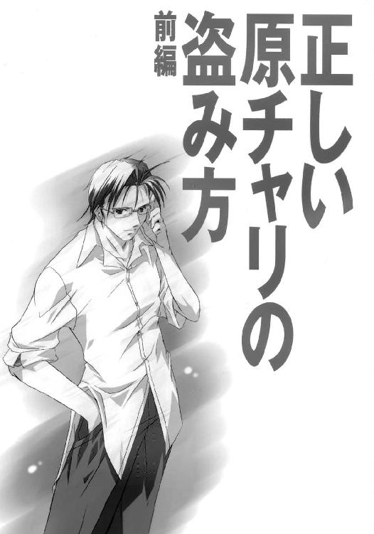
毛が生えた。
まことにわかりやすい理由である。
そういうわけで、当時小学五年生だった浅羽夕子は、ひとつ年上の兄と一緒に風呂に入ることを拒否するようになった。
一緒に遊んだりもしなくなった。
一緒に出歩いたりもしなくなった。
さもなくば家出すると親を脅して、それまで一緒だった部屋も別々にしてもらった。
ところが、兄の方はこの急激な変化の意味をまったく理解しなかった。一緒に何かして遊ぼうと言っては怒鳴られたり、一緒にどこかに出かけようと言っては無視されたり、風呂がわいたよとノックもせずにふすまを開けては物を投げつけられたり、そんな日々がしばらく続いた。
別々にしてもらった部屋で、夕子はひとり、いつまでも子供みたいな兄を呪うのだった。
自分はいつもそうなのだ。名字が『浅羽』だから、他によほどの奴がいない限りは自分が出席番号一番であり、出席番号が一番でもいいことなんかひとつもない。ウイルス兵器の予防注射も意地悪な高さの跳び箱も、クラスの中で誰よりも先に自分が挑まねばならない。心の準備をする時間もなく、先を行く誰かの背中をあてにすることもできなかった。いつだってそうだったのだ。
なのに。
お兄ちゃんはずるい。
兄貴のくせに、年上のくせに。
そんな日々がしばらく続いて、やがて兄も夕子を放っておいてくれるようになり、夕子は六年生に、兄は園原中学校の一年生になった。部屋が別々でも夕飯時くらいは顔を合わせるし、兄が新聞部に入ったことも、その部に水前寺というちょっと変わった先輩がいるらしいことも、夕子はこのころから何となく知ってはいた。
部屋も別々、学校が別々。
今にして思えば、あのころが一番平穏な時期だったのかもしれない。
平穏の一年が過ぎ去り、園原第一小学校六年三組出席番号一番の浅羽夕子は、園原中学校一年一組出席番号一番の浅羽夕子になった。そして、再び兄と同じ学校に通うことになった夕子がそこで見たものは、校内に並ぶ者無き奇人・水前寺邦博の腰巾着と成り果てていた己が兄の姿だったのだ。
とてもではないが、「あの金魚のフンがわたしの兄です」などと言えたものではない。新しい学校の新しいクラスで新しい友達ができたばかりの微妙なころでもあったし、そんなことがバレたらクラスで仲間外れにされる恐れすらある。
さすがのトロい兄にも多少の自覚はあったのかもしれない。兄は夕子の体面を慮ってか、学校では自発的に他人のふりをしてくれていたふしがある。が、夕子はそれでもなお、兄にきつくきつく厳命した。トロい兄のことだ、要求をはっきりと口に出して申し渡さなければ、ダメ押しをしておかなければ安心できなかった。
──学校では、ぜったいに、ぜったいに話しかけないで。
こうした涙ぐましい努力も決して無駄ではないと、あのころの夕子は愚かしくも信じていたのである。生徒数もさして多いわけではない田舎の学校で、誰かと誰かが兄妹であることを隠し通せるはずなどなかったのだ。
が、同じバレるにしても色々なケースがあり得る。
入学式からひと月ほど過ぎたある日のこと、一年一組の教室に、
昼休みに、
「浅羽くんはいるかねっ！」
こともあろうに、
「浅羽直之特派員の妹の浅羽夕子くんっ！ 園原市立園原中学校三年二組太陽系電波新聞編集長姓は水前寺名は邦博っ、浅羽夕子くんにひとこと挨拶仕りに参上したっ！ 浅羽夕子くんっ！ いるのなら恥ずかしがらずに手を上げたまえっ！」
理性は言うのだ。すべてを兄のせいにするのは理不尽である、と。
しかし、夕子はあの昼休みの一件以降、学校だけでなく家でも、何かよほどの理由がなければ兄とは口をきかなくなった。
一学期が終わり、夏休みが来た。
兄は、夏休みの間ずっと、どこかの裏山で秘密基地ごっこのようなことをしていた。
もちろん水前寺と一緒に、もちろん宿題もやらずに。
ＵＦＯを探していたらしい。
夏休み最後の日の夜、大して広くもない浴槽の中にずっこけて座り、入浴剤の入った湯に鼻の下まで浸かりながら、夕子は最後に兄と一緒に風呂に入ったときのことを思う。
あのときの兄は、小学校六年生だった。
あのときの兄に、毛は生えていなかった。
兄はもう、ずっとああなのかもしれない。ひとりで歩いていかなければいけないのかもしれない。いままでずっとそうだったように、これから先もずっと、兄が自分の前を歩いてくれることはないのかもしれない。
夏休みは終わり、二学期が始まる。
そして、園原中学校で月に一度の防空訓練が行われ、浅羽直之がいわゆる『シェルター事件』の渦中の人物となったのは、そのわずか二日後のことである。
だから、「朝ご飯が片づかないから直之を起こしてきて」と母に頼まれて、夕子が文句のひとつも言わずに二階へ上がっていったのは、近ごろでは大変に珍しいことなのだった。だめもとで言ってみただけだった母はふきんを片手に目を真ん丸にしている。
「──どうしちゃったのかしら」
そのとなりの父は、新聞の日曜版から顔も上げない。
「──何が。妹が兄貴を起こしに行っちゃいかんのか」
「そういうわけじゃありませんけど──でもほら、おとといでしたっけ、直之がまたお弁当忘れてったから届けてって頼んだらあの子、ぜったいいやだって」
父は「ふん」と鼻を鳴らして黙考し、「うん」とひとつうなずいて、こう結論づけた。
「ま、難しい年頃だからな」
日曜版の紙面に目を落としたまま、父はちゃぶ台の上に手を伸ばす。その手の先にあるラッキーストライクのパッケージと百円ライターを母は素早く取り上げて、染みだらけのエプロンのポケットに入れてしまった。父は紙面から顔を上げずに「むう」とひと声うなり、
「推定死者数二千か。今度ばかりは本気で腕まくりをしてる奴がいるのかもしれんな」
母はどれどれと横から身を乗り出し、父に頰を寄せるようにして空爆の記事をのぞき込む。それはまったく若かりし日の父と母のありようを窺わせる光景で、直之も夕子も見ていないところだと母はたまにこういう隙を見せる。父は記事を読み進めながら、相変わらずちゃぶ台の上を手探りしている。煙草のパッケージは一向に見つからない。
「買い置き増やしておいた方がいいのかしら」
「買い置き？」
「缶詰とか、トイレットペーパーとか。何かあったときのために。そうそう聞きました？ こないだも園原基地の方でスパイが出たって話。お巡りさんがいっぱい出て検問をやってて、車で通りかかっただけで色々調べられて大変な目にあったって吉田さんの奥さんが」
「出ずっぱりだな最近。休みもなしじゃスパイも大変だ」
「冗談ごとじゃないですよ。──まったく、それもこれもみんな園原基地のせいですよね。スパイの人だって園原基地の様子を探りに来てるんでしょう？ なんでこんな田舎にあんな大きな基地があるのかしら」
「田舎だからさ。都会の真ん中にあんなでかいもん作れるわけないだろ。空軍基地は滑走路が必要だから余計にかさばるんだ」
「でも、田舎なら他にもあるんだし。どこかよそに行ってくれればいいのに」
「そんなこと言ったって、うちにだって結構来るぞ。ＧＩの客」
「いくらお店が儲かったって命を取られたらなんにもならないじゃないですか。いまにスパイの人が園原基地にばい菌を撒くかもしれないって、そしたらこのあたりに住んでる人はみんな巻き添えで死んじゃうって、そういうのをテレビの特番で見たって清原さんの奥さんが」
「だからそのばい菌の工場を空爆でぶっ潰してるんだろ。園原基地の飛行機が」
「けどいつだったか、ばい菌工場だと思って爆弾を落としたら間違いで、そこはただのお酒の工場か何かだったってことあったでしょ。政治家の人がたくさんクビになったりして。むこうがそう言い張ってるだけかもしれないけど、本当だとしたらずいぶんひどい話ですよ」
「狼林爆撃だな、今年の三月の。いや、ありゃ本当に酒の工場だったんだ」
母はまた目を丸くした。
「そうなんですか？」
父は息子の古いジャージごしに肉の薄い尻をぼりぼりと搔いた。
「ばい菌なんて酒の工場でも作れるさ。元になる菌株なんか学術用だって言えば直之の小づかいくらいの金で買える。バイオセイフティレベル４のエアロックとか爆発エアロゾル実験室とか、そういうデカくて金のかかる設備が必要なのは研究開発の段階だけで、実際にブツを生産するときには大げさなものは何もいらない。今日びのバイオリアクターときたら冷蔵庫よりも小さいからな。そんなものどこにだって隠せる。酒の工場なんて言い訳としてはまだマシな方だろ。そのうち奴ら、小学校や保育園でおっ始めるかもしれん」
すぐ横にある父の顔を見つめ、母は目に尊敬の色を浮かべて言った。
「詳しいんですねえ」
すぐ横にある母の顔を見つめ、父は生真面目な表情で答えた。
「結構来るからな。ＧＩの客」
そのとき、電話が鳴った。母がはいはいと返事をしながら腰を浮かせると、電話機は呼び出し音を二度鳴らしただけで『通話中』のランプを点灯させてふっつりと黙り込んだ。夕子が二階の廊下にある子機で電話に出たのだろう。母はそのまま、うん、と背伸びをする。立ちついでに洗濯物でも片づけてしまおうかと思う。
そのときふと、
「でも、ほんとに保育園でばい菌を作ってたら、保育園にも爆弾落とすのかしら」
父は、あらかたの記事を読み終えた日曜版をバサバサと不器用にたたむ。「むう」とひと声うなり、「うん」とひとつうなずいて、こう結論づける。
「ま、難しい時代だからな」
そして、ちゃぶ台の上をまじまじと見渡して、確かに置いたはずの煙草とライターがなくなっていることにやっと気がついた。
二階に上がり、兄の部屋のふすまの前でいつまでもためらっていると電話が鳴った。夕子は救われたような顔をして、三度目の呼び出し音がなる前に壁掛け式の子機を取った。
「はい浅羽です」
朝っぱらから血圧の高い声がいきなり、
『おお、その声は浅羽くん！』
水前寺である。
ちなみに、浅羽直之は普段から『浅羽特派員』と呼ばれているので、水前寺が『浅羽くん』と言った場合には浅羽夕子のことを指す。
が、そう呼ばれて喜ぶ夕子ではない。他のどんな呼び方をされようとも嬉しくはない。そもそも水前寺の声など聞きたくもない。
せっかくの日曜日なのに。
しかし、水前寺がこうして家に直接電話をかけてくるのは、夕子が知る限りでは初めてのことだった。水前寺は電話が嫌いなはずなのだ。電話での会話は盗聴される危険が常にあるという、まるで子供のスパイごっこみたいな理由で。以前、兄からそう聞いた。
「兄なら、まだ寝てますけど」
水前寺はくくくと笑った。
『そんなことだろうと思った。すまんが叩き起こしてくれたまえ。本日、浅羽特派員には重要な任務があるのだ』
重要な任務。
その任務とやらが、いつもの幽霊やら宇宙人やらのケツを追い回す話なのだとしたら、水前寺はこうして電話をかけてきたりはしないはずだと夕子は思う。
『──しかしまあ、浅羽特派員の寝ぼすけにも困ったものだな。想像するに、小学生のころには遠足の前の晩になると緊張と興奮で眠れなくなるタイプだったろう？ で、一睡もしていないへろへろの状態で無理して遠足に参加して途中で見事にゲロ吐いて、友達から「ゲロ之」なんてあだ名を頂戴するクチだ。──もしもし聞いているのかね、浅羽夕子応答せよ』
そこで夕子は保留ボタンを押して、水前寺の長広舌を断ち切った。水前寺の声をそれ以上聞き続けるのは苦痛だった。が、心の底でほんの少しだけ感心してもいた。ゲリラ部とはいえ、伊達に部長を名乗っているわけではないらしい。人をよく見ていると思う。どうしてあだ名までわかるんだろう。
子機を片手に、夕子は兄の部屋のふすまの前に立つ。
ノックをする。
返事はない。
もう一度ノックをしてみる。今度はさっきよりも強く。
やはり返事はなかった。
深呼吸をして、ひと思いに、力いっぱいふすまを開け放った。六畳間の真ん中に斜めに敷かれた布団の上で、兄が、まるで力尽きてその場に倒れた遭難者を思わせる格好で寝ていた。
夕子は、寝ている兄をつま先で突っついてみた。
兄は目を覚まさない。ぴくりともしない。
半ばうつ伏せになった兄の顔をのぞき込む。完全に熟睡しているらしいその寝顔を見ているうちに、夕子は何だか無性に腹が立ってきた。
いきなり兄の耳をつかんで引っぱり、お兄ちゃん、と怒鳴ってやった。
「ほ兄ちゃん!!」
本人は「お兄ちゃん」と言っているつもりなのだ。が、少し舌足らずなせいで、大声で呼ぶときなどにはそう聞こえる。
ともかく浅羽直之は飛び起きた。寝ぼけ眼のすぐ前で恐い顔をしている妹を呆然と見つめる。わけがわからない。普段は口もきこうとしない妹が、なぜ自分の部屋にいるのか。
なぜか目の前にいる妹は、浅羽に電話の子機を突きつけて口をきいた。
「親分から電話」
親分て誰だよと思いつつ、浅羽は子機を受け取って保留ボタンを押す。まだ半分くらいは寝ぼけているような口調で、
「もしもしぃ」
電話のむこうから『スパイ大作戦』のテーマが聞こえてきた。小型のテープレコーダーか何かを受話器に近づけて音楽を流しているのだ。なんだ部長か、と浅羽は思った。眠気がぶり返してくる。布団の上でごろんと横になり、腕で顔をおおって朝の日射しから目をかばう。
『おはよう浅羽特派員。さて、今日の君の任務は』
思わず声が出た。
思い出した。眠気はひとたまりもなく消し飛び、浅羽は再び飛び起きて布団の上を這いずり回った。時計、枕元に置いたはずの目覚し時計、
『安心したまえ浅羽特派員。現在時刻は午前九時三十二分、急げばまだ充分に間に合う。任務遂行にあたっての要注意事項はきのうアドバイスした通りだ。きちんと憶えているかね？』
ゆうべは緊張のあまり眠れたものではなかった。明日のために少しでも眠っておかなければと思うと、その焦りがプレッシャーになってますます目がさえた。布団の上を悶々と転げ回るうちに夜はたちまち白み、早起きをするつもりで七時にセットしておいた目覚し時計が突如として鳴り出すに至って、ついに絶望と共に決意した。もうだめだ、もし今から寝てしまったらもう起きられない。このまま眠らずに今日一日を乗り切るしかない。ままならないもので、そう決意すると今度は「眠らなければ」というプレッシャーが取り除けられたせいで途端に眠くなってきた。眠ってはいけない、絶対に眠ってはいけない──そこでふっと意識が途切れ、その次の瞬間、妹に耳を引っぱられて叩き起こされたのだ。
浅羽をひと晩中責め苛んだ緊張感がまた戻ってきた。
浅羽は思わず子機をにぎりしめて水前寺の声にすがった。頭の中の記憶箱をひっくり返す。任務遂行にあたっての要注意事項、きのうのアドバイス、
「──な、何でしたっけ!?」
『鼻毛は出ていないか、ズボンのチャックは開いていないか、パンツは新しいのをはいているか。以上の三点だ。復唱せよ』
「鼻毛、ズボンのチャック、新しいパンツ」
『よろしい。では、速やかに準備にかかりたまえ。幸運を祈る』
それきり電話はぶつりと切れてしまった。
浅羽は子機を放り投げて立ち上がる。とにかく早く着替えようと思って、パジャマのズボンと新しくないパンツを一緒くたに脱ごうとする。と、いきなりものすごい悲鳴が上がり、
「ばか！ ばかばかばか！ 変態！」
あわてて背を向けた妹が散々に浅羽を罵倒する。こいつまだいたのか、と浅羽は思って、
「ま、まだ何か用？」
妹が沈黙する。背を向けたまま、
「朝ご飯、早く食べちゃえって、母さんが」
普段の妹なら、そんな用事を言いつけられたくらいでは浅羽の部屋に入ろうとはしない。絶対だ。他にまだなにかあるはずだった。
「他には？」
再び妹は沈黙する。その後ろ姿にどこか物問いたげな雰囲気が漂う。やがて、
「ば─────────か！」
妹は、そんな捨てぜりふを残して浅羽の部屋から出ていってしまった。最後にじろりと浅羽をにらみ、叩きつけるように、浅羽が首をすくめるくらいの勢いでふすまが閉まる。
浅羽は呆気に取られた。
なんだあいつ。
我に返る。今はそれどころではない。押し入れを引っかき回して最初に手に触れたのは、すっかり薄くなったＴシャツともう一年もはいているジーンズだった。これではまるで夜中にそのへんの自販機までジュースを買いに行くときのような格好だが、あれこれ迷っているような時間はもうない。無残にも部屋の隅に跳ね飛ばされて転がっている目覚し時計が、思い知れとばかりに情け容赦なく時を刻んでいく。九時三十五分。腕時計と財布と自転車の鍵をポケットに突っ込んで部屋を飛び出す。階段の手すりにつかまって一階まで滑り降り、どたばたと廊下を走り抜けて洗面所に飛び込む。が、そこには先客がいた。浅羽のジャージにランニングという格好の父が、煙草吸いの性で、歯を磨こうと歯ブラシを口に突っ込んでは雷鳴のような空えずきを繰り返している。いつものことなので家族の誰も気にもとめない。
「おげっ、おぇぇっ！ うぅううぉおおぇぇぇぇぇっ！ ──おう、直之おはよう」
浅羽は物も言わずに父の隣に強引に割り込み、父と肩をぶつけ合わせるようにして歯を磨き、顔を洗い、
「お前どっか出かけんのか」
もう少しどうにかならないのかと髪をいじくり回していた浅羽は、父のそのひと言にぎくりとした。
「部活」
そう答える。噓ではない。少なくとも建前では。
「大変だな」
鼻毛よし。チャックよし。
洗面所を飛び出す。洗濯物の籠を抱えた母とすれ違う。
「直之、朝ご飯は」
「いらない！」
「ちょっと、どこ行くの？」
一瞬だけ足を止めて茶の間の奥をのぞき込む。この家よりもずっと年寄りの振り子時計が浅羽を急き立てる。九時四十六分。
「今日帰り遅くなるから！」
それだけ言って浅羽は勝手口に滑り込む。ハイカットのスニーカーの靴紐が苛立たしい。
「直之ぃ！」
洗面所から父の声、
「出かけるんなら表の看板回しといてくれ！」
返事もしない。勝手口から外に出る。ビールケースにつまずきながら自転車を押して店の表に回る。看板のプラグをコンセントにねじ込むと、動脈の赤と静脈の青と包帯の白、三色の縞模様がくるくると回転し始める。入り口のドアに下がった札を「ＣＬＯＳＥＤ」から「ＯＰＥＮ」にひっくり返す。自転車にまたがってペダルに足をかけ、そこで思い直して、ブラインドが下りたままの大きな窓に顔を近づけて最後の鼻毛チェックをする。窓にはまるでサルのように鼻の下を伸ばした浅羽の顔が映り込み、その顔にダブって蛍光塗料で筆書きされた五つの文字が並んでいた。
『浅羽理容店』
二学期に入って、最初の日曜日。
ひと月半の夏休みなど下界の都合だ。夏はまだ終わらない。今も浅羽理容店の上空には、学校へ行かなくてもよかったあのころとどこも違わない青が広がる。木製の電柱と弛んだ電線に区切られた、セミが鳴き、輸送機が飛び攻撃機が飛び、ＵＦＯが飛ぶかもしれない夏の空だ。
園原駅前のバスターミナルに、十時までにたどり着かなければならない。
たちまち汗が噴き出る。浅羽はチェーンも切れよとばかりにペダルを踏む。
一日だけさかのぼる。二学期に入って最初の土曜日。
半日で授業は終わり、昼飯は購買部のおにぎりで済ませ、浅羽直之は新聞部の部室で西部劇のガンマンよろしくハサミをくるくる回していた。そこらのハサミとは違う。父が店で使い古した、それでもまだまだ立派に切れる床屋用のハサミだ。水前寺は浅羽に背を向けて椅子に座り、身体にすっぽりと毛よけの布をかけている。この布、正式名称を『カッティングクロス』、和名を『刈り布』という。
浅羽はいつも、一応は尋ねる。
「どうします？」
「今より長くしてくれ」
「無理です」
「では、いつもの通りに頼む」
水前寺は、その必要がある場合にはいくらでもめかし込むが、そうでなければ髪の毛になど何の注意も払わない男である。その水前寺の言う「いつもの通り」というのは、全体を短くして裾をそろえる程度の、浅羽にとっては何でもない仕事だ。「了解」とつぶやいて浅羽はハサミを動かし始める。なかなかに手慣れている。
一回百円である。
はじめのうちは、運動部員のイガグリ頭製造機だった。
しかし、なんといっても一回百円なのである。ということは客にしてみれば、親からせしめた散髪代マイナス百円を自分の好きなことに使えるわけである。近ごろではイガグリ頭以外のお得意もずいぶん増えた。浅羽としては、自分の技術にはそれなりに自信もあるし、料金が仕事の内容に関わらず一律百円というのはいかにも安いと思う。が、儲け云々よりも、人の頭を刈るという行為は実に楽しいのだった。
「最近どうかね景気は」
「まあまあですね」
会話の内容までじじむさい床屋話である。
「ああでも、これからちょっと忙しくなるかも。ほら、九月は運動部の大会も重なるから」
「しかし浅羽特派員、君の家も理容店を営んでいるわけだろう。君が学校で、しかもダンピング料金で同級生の頭を刈るというのは、店の客を奪っていることにはならんのかね」
「いいんです、同級生はどのみち店にはあんまりこないから」
「なぜ？」
「たぶん、『あいつん家に行ってあいつのオヤジに頭を刈ってもらう』ってのがテレくさいからじゃないですか。家が近所だったりぼくと顔見知りだったりすればなおさら。気持ちわかりますよ、ぼくだって友達ん家の店で買い物する気になんかあんまりなれないもの」
そういうもんか、と水前寺はつぶやく。浅羽はすきバサミを手にとり、水前寺の黒々とした髪をざっきざっきと落としていく。髪の状態の良さに関しては、自分の客の中でも水前寺がピカ一だと浅羽は思う。普段から整髪料やドライヤーを使わないせいだろう。それによく食うしストレスなんてなさそうだし。
「──それにしてもさっきの話だが、どうにかならんもんかな」
浅羽はとばけた。
「さっきの話って？」
「伊里野特派員の話だ。ああもケチくさい女生徒だとは思わなんだ」
「──別に、伊里野はケチで言ってるんじゃないと思いますけど。部外者は絶対に立ち入り禁止っていう規則か何かあるんでしょきっと。なにしろ園原基地だし、この御時勢だし」
「しかしだな、そういう規則には抜け道がつき物だろう。そのへんをだな、友達のよしみでどうにかこう、」
「友達って。まだ知り合ったばっかりじゃないですか」
「しかしだな、あそこまでにべもなく断らんでもいいだろう。だめだとは思うが一応は誰かに尋ねてみてやっぱりだめだった、というならともかく。即座に拒否されたぞ即座に」
だめ、と伊里野は言った。
水前寺が伊里野獲得に動いたそもそもの理由は、伊里野が園原基地に住んでおり、ひょっとすると基地の中を見せてもらえるかもしれないという期待があったからである。そして水前寺の思惑通り、伊里野は新聞部への入部を承諾した。伊里野が初めて部室に顔を見せたのは二日前の木曜日のことで、水前寺はその場でさっそく頼み込んだ。伊里野特派員、聞けば君は園原基地の居住区に住んでいるそうではないか、今度ぜひ
だめ。
「うん、やはりあれはケチで言ってるな。浅羽特派員、彼女は普段からああなのかね？ 転校生のくせにあんな調子では、クラスでも友達おらんだろう？」
まあ確かに、同じ断るにしたってもう少し愛想のある断り方をすればいいのに、とは浅羽も思う。しかし浅羽には、それが無理な注文であることもよくわかっている。なにしろ伊里野は普段から「ああ」なのだ。
だから友達もいない。
弁護したくなった。
「誰かにあらかじめクギ刺されてたんじゃないですか、友達を連れてくるなって」
そのとき、ふと浅羽の手が止まる。
思う。伊里野が──おそらくはそうなるだろうが──この先もずっと、水前寺の要求を拒み続けたらどうなるか。水前寺は「女っ気は多い方がいい」などとは絶対に考えない。脈なしと見た瞬間に、水前寺は伊里野に「クビ」を通告するかもしれない。
よけいな頭数は要らない、とばかりに。
「──まあでも、貴重な人材ではありますよね」
再び手を動かしながら、浅羽はそう言った。
「もうちょっとうちとけてから頼めば、伊里野だって何とかしてみようって思うかもしれないし。それに部長、伊里野に基地のことばっかり言うの失礼ですよ。はいちょっと下向いて」
「なんで」
「だって、新聞部に誘われて、よろこんで行ってみたら基地に連れてけ連れてけってそればっかりで。それじゃまるで伊里野には基地に住んでることしか取り柄がなくて、他にはなんにも期待されてないみたいじゃないですか。そんな言い方されたら誰だって面白くないですよ」
むう、と水前寺はうなった。
「なるほど。一理あるな」
「でしょ？ だからですね、ここはひとつ長い目で」
「つまり、伊里野特派員の機嫌を損ねないようにしつつ、うまく頼み込む方法があればいいわけだ。我々を基地に入れるにはどうしたらいいか、伊里野特派員が自分から頭をひねるように仕向けることができればベストだな」
「部長、もしもし？ あのですね、ぼくが言ってるのはそういうことじゃ、」
水前寺は待ちの戦法がキライである。浅羽の手の中で、水前寺の頭がむりむりと思考をし始める。
浅羽はため息をついた。
部長が事を急く気持ちも、わからないではないのだ。
園原基地は大規模で、米空と空自の両方がいて、攻撃的な性格の強い、だから機密性も高い基地である。だから周辺にスパイも出没するし、だから「ＵＦＯを飛ばしている」などという噂が立つのかもしれない。一般のマスコミの取材が許可されることもあまりないと聞く。
だから、ＵＦＯの残骸や宇宙人の死体のあるなしを別にしても、園原基地の内部に入ってその様子をレポートできれば、それだけで学校新聞としては破格のスクープには違いない。そのチャンスが伊里野という形で目の前に現れたのだから、水前寺が浮き足立つのも当然のことなのかもしれない。
「──！」
そのとき、「ぴんぽーん」という音が聞こえたようにすら思う。
水前寺が何か思いついた。そのことを、浅羽は指先ではっきりと感じ取った。
「うむ、かくなる上はだな」
浅羽は身構える。どうせロクでもないことを思いついたに違いない。『かくなる上は』という前置きがついた場合は特にそうだ。
「浅羽特派員、部長命令だ。伊里野特派員とデートをしたまえ」
「──は？」
ぱったりと動かなくなってしまった浅羽の手の中で、水前寺の頭がうんうんとうなずいた。
「明日はちょうど日曜日だしな。まずはふたりで映画にでも行くというのはどうか。そして喫茶店に行ってカラオケに行ってホテルに行って行くところまで行くというのはどうだ。車がいるならうちの軽トラを貸すぞ」
「──あ、あの、」
頭がごろごろ鳴っている。脳ミソが消化不良を起こしている。
なんでいきなりそんな話に、
「知れたことよ、可及的速やかに伊里野特派員と親密になるためだ。他ならぬ『気になるあいつ』に『君の部屋が見たい』ぬぁーんて頼まれればそう無下にもできまい」
脳ミソが下痢をする。脳ミソのクソは口から出る。
なにもそこまでしなくても、
「やらいでか。むこうからうちとけてくれるまで待つなどという悠長なことはしておれん。園原基地が部外者の立ち入りを禁じているのは間違いないだろうが、要は伊里野特派員自身にそのあたりをなんとかさせればいいわけだ。スパイ工作の常套手段だな。うまく事が運べばむこうから言ってくるぞ、『今日うちに誰もいないの』って」
で、そのときあんた一緒に来るつもりか。
水前寺は右肩ごしに浅羽を振り返り、
「浅羽特派員、君ならできる」
浅羽は追いつめられ、
「そ、そんな！ ぼくには無理ですそんなの！」
すると、水前寺は大げさに眉を吊り上げて肩をすくめ、
「そうか。ではおれがやる」
──!!
頭もよければ顔もいい。運動も得意だし背も高い。普段は女に興味などこれっぽっちもありはしないがしかし、なによりもまず、目的のためなら手段を選ばない。
水前寺はそういう男だ。
「わかりましたやりますっ!!」
気がついたときには、そう叫んでいた。
水前寺は怪訝な顔をして、
「いやべつに、無理にとは言わんが」
「いえやりますぜひっ!!」
せっぱ詰まった浅羽の顔を横目で見て、水前寺はニタリと笑う。
「では任せる。頼むぞ浅羽特派員、園原基地に隠された謎を見事あばいてみせよ」
そこで浅羽は正気に戻った。とんでもない話を引き受けてしまった。そのことにいまさら気づいて青くなる。
伊里野とデート。
うまくいくかどうかもわからない。たぶんダメだろうと思う。
そもそもＯＫしてもらえるかどうかもわからない。たぶんダメだろうと思う。
「あ、あのでも、ぼく、いままで女の子とデートなんてしたことないんですけど」
部室のドアのノブが回る音。
「安心せよ。おれもない」
「はあっ!? ちょ、じゃなんだったんですかさっきの自信満々な態度は!!」
ドアが開き、すぐに閉じる音。
「うろたえるな浅羽特派員。なあに大丈夫、ちゅーをしてしまえばこっちのものだちゅーを」
水前寺がお気楽に言う。強烈な不安と緊張に耐えきれず、その不安と緊張を人のせいにしてしまいたくて、浅羽はむきになって水前寺に食ってかかった。「ちゅーってなんだちゅーって!!だいたい自分だって女の子とデートしたことないくせに一体なにを根拠にそういうこと言うんですか!!」「なにしてるの」「うるさいないま大事な話してんだから！」振り返ったそこに伊里野がいた。
「浅羽特派員刺さってるハサミ刺さってる痛いとても痛い浅羽特派員応答せよ応答せよ」
浅羽は慌ててハサミを引っこ抜く。水前寺は「おーいて」と頭をさする。伊里野は、てるてる坊主のような格好で椅子に座っている水前寺と、その後ろでハサミを手に立ち尽くしている浅羽を、目を丸くしてじっと見つめている。
「あ、あの、」
もしや最初からすべて聞かれていたのではないかと、浅羽は気が気ではなかった。
「いつ来たの？」
「さっき」
伊里野はそう答えた。そして再び、
「──なにしてるの？」
水前寺が答える。
「見ればわかろう。浅羽特派員に髪を切ってもらっているのだ。浅羽特派員は床屋の息子だからな、こういうことはお手のものなのだ。そうそう、さる情報筋によればだな、浅羽特派員は小学生のころ、店の床屋椅子に妹を寝かせて改造手術を施すというまことにフケツな遊びを」
「部長」
浅羽は首にハサミを突きつけて水前寺を黙らせた。再び手を動かし、水前寺の毛先を落とす作業に集中する。
集中しようとする。
世の中できることとできないことがある。
こっそりと伊里野の方を盗み見る。
口を半開きにして、身を乗り出さんばかりにしてこちらを見つめていた伊里野があわててうつむいた。
──？
なんだろう。髪の毛を切っているのがそんなに珍しいのだろうか。
どす、という衝撃を腹に感じた。見れば、水前寺の肘が腹を小突いて浅羽を急かしている。それでも決心がつかない。浅羽はただひたすらに、黙々とハサミを動かし続ける。その手つきがどんどん上の空になっていく。もし断られたらどうすればいいのか。水前寺が今度はテレビドラマの大根役者のような咳払いをする。ねえ伊里野、明日ヒマ？ もしよかったらぼくと一緒に映画でも
だめ。
「──こんなもんでいいすか」
浅羽は、体育館のトイレからぶんどってきた鏡を水前寺の後頭部にかざした。
「うむ。ご苦労」
毛だらけになったシートの下から水前寺の右手が突き出た。その親指が弾き飛ばした百円玉を、浅羽は水前寺の左耳の後ろのあたりでつかみ取った。背伸びをして立ち上がり、シャツについた毛を払い落としている間にも、水前寺は浅羽と目が合うたびに「いけ」「いけ」という目をする。浅羽はなす術もなく、ほうきとチリトリで床に散らかった毛を片づけ始める。
そして、三つのことがほぼ同時に起こった。
まず、浅羽のフヌケっぷりに業を煮やした水前寺が大声を出し、
「伊里野特派員、重要な話がある!! 明日の予定は」
浅羽が息を吞み、
「うわああちょっと待ってくださいよ部長!?」
須藤晶穂がいきなり部室に駆け込んできた。
「ごめーん遅くなって河口に捕まっちゃってさあ！」
晶穂は鞄をテーブルの上に投げ出して額の汗をぬぐい、伊里野の姿に気づいて露骨に「なんだいたのか」という顔をし、そして、
「──、なにしてたの？」
ぴんとくるものがあったのだろう。晶穂はすぐに、部室に漂う陰謀の雰囲気を感じ取ったらしかった。不発弾のような目つきで室内をじろりと見渡す。なぜか目を合わせようとしない浅羽がほうきで床を掃除しており、テーブルの上には浅羽の散髪道具が出ており、伊里野は鞄を手にしたまま立ち尽くしており、そして、今朝見かけたときよりすっきりした頭の水前寺がホワイトボードに何やら回路図のようなものを書き込みながら、
「重要な話をするからよく聞きたまえ伊里野特派員！ 明日のためにその一！ 攻略すべきポイントは三つ、すなわちハンドルロック、メインスイッチ、イモビライザーだ！ ハンドルロックとメインスイッチは従来の力に任せた方法でも通用するから、残る問題はイモビライザーということになる！ こいつは純正キーによる電子ロックの解除が行われなかった場合に燃料の給気をストップするための装置で、おまけに震感センサーつきのアラームと連動しているから下手に車体を揺すると大音量の警報が」
「部長、」
「おお須藤特派員」
「なにしてるんですか？」
「見ればわかろう。伊里野特派員の新人研修だ。一日も早く一人前のジャーナリストになってもらうためにな」
「──あの、ですから一体何の話を。さっきからスイッチとかセンサーとか、」
「今日のテーマは『正しい原チャリの盗み方』だ」
「それのどこがジャーナリストの新人研修なんですかっ!!」
「何を言うか！ 一人前のジャーナリストがその程度のこともわきまえておらんでどうする！ いいかね、スクープをモノにするには多少の危険はつきものだろう。暴力的な取材対象や無理解な官憲の手を振り切るためにはぜひとも必要な──」
そこで水前寺は浅羽にちらりと目配せをして、
「──そうだ、思い出した。須藤特派員、ちょっと顔を貸してはくれまいか。君に折り入って重要な話がある」
「な、何ですか相談って」
「いや、ここではまずい。ふたりだけで話そう」
それからの水前寺の行動は実に素早く、有無を言わせないものだった。
「よし。では伊里野特派員、今日の講義はここまでにしておくが、家に帰ったらきちんと復習をするように。実地練習もしておくとなおよろしい」
水前寺は先に立ってドアを開け、まだ何か言いたげな晶穂の背中をぐいぐい押して部室から出ていった。
ドアが閉まる瞬間、水前寺の右腕がにゅっと突き出て、ぐいと親指を立てた。
そんなことをされても困るのだった。
とにかく、床の掃除を終わらせようと思った。
チリトリの中身をごみ箱代わりのダンボール箱にあけ、ほうきをロッカーの中にしまって、浅羽はやっとため息をついた。
危ないところだった。
基地が目当てで伊里野とデート、などと聞けば晶穂はまた怒り狂うに決まっていた。おまけに、晶穂はどうやら伊里野のことをひどく嫌っているらしい。もっとも、伊里野は転校してきた初日の『あっちいけ』発言以来、クラスの女子からは総スカンを食らっているし、晶穂もまたクラスの女子のひとりである以上は──
それでも、どこか釈然としない。
いつもの晶穂なら、もう少し別な反応を示すような気がする。
「浅羽」
いきなり名前を呼ばれた。浅羽は思わずロッカーに正対したまま背筋を伸ばし、「はいっ」と返事をした。
「イモビライザーの暗号鍵って何ビット？」
──え？
浅羽が振り返ると、伊里野がホワイトボードをじっと見つめている。浅羽もなんとなく伊里野に倣う。水前寺が水性ペンで書き殴ったぐにゃぐにゃの回路図。
「──あ、いいよいいよそんなのは気にしなくてたぶん部長の出まかせだから。あの、そんなことよりもさ、」
勇気がくじける。
「鞄そこに置いたら？」
伊里野は、言われた通りにテーブルの上に鞄を置いた。
「明日ヒマ？」
言えた。
まるで予期していなかった質問をいきなりぶつけられて、伊里野は目を丸くした。
返事は、こうだった。
「どうして？」
言え。
そして最悪の返事を予想しろ。
浅羽は自分にそう命じる。伊里野の顔をそれ以上見ていられない。
「もし、もしよかったら、映画でも見に行かない、ぼくと」
時間を戻す。二学期に入って最初の日曜日、デートの日の朝。
園原市の住人が「街へ行く」とか「街に出る」と言った場合の「街」とは、園原市の中心部の、市役所をはじめとする公共施設群を含む一帯のことを指している。
確かに「街」という感じのする場所である。真新しくて清潔で洒落ている。道路は広いし街路樹はあふれているし、歩道のそこかしこに前衛的なオブジェがあったりする。
が、周辺部の田舎っぷりを考え合わせれば、これはこれで「歪み」の一種なのだった。
なぜこうなのか。その理由は実にはっきりしている。
園原駅南口バスターミナルの路肩に止めた軽のワゴンの助手席で、榎本はその理由をひと言で説明した。
「うちのせいさ」
ハンドルの上で腕を組み、その上にあごを乗っけている椎名真由美が、
「うち──ってそれ、園原基地のせいってこと？」
「そう」
榎本はシートを半分ほどリクライニングさせ、背もたれに力いっぱいふんぞり返って大あくびをした。
「大きな基地があって、職員や兵隊がいっぱいいて、その連中がお金を落とすから街が潤う。そう？」
「それも多少はあるだろうが、もっと太い金の流れが別にある。このへんの様子をよく見てみりゃわかるだろ。金を持ってるのは住人じゃなくて自治体だ」
「なにそれ」
背もたれにふんぞり返ったまま、榎本は鼻から細いため息をつく。
「つまりさ、『あんなデカくてヤバくてクソやかましい基地を押しつけちゃってすいません』っていう迷惑料をお上がどっさりくれるもんだから、園原市は身分不相応な金持ちなんだよ。この街の公共設備なんて充実し過ぎてて馬鹿馬鹿しいくらいだ。お前知ってるか、園原市に図書館がいくつあるか」
榎本はすぐに正解を口にする、
「なんと四つだ。もちろん連日閑古鳥が鳴いてる。そこの通りをちょっと下ったところにはな、それはそれはどでかい市民ホールがあるんだ。それこそ、超一流のオーケストラを呼んでも恥ずかしくないような設備も万端そろってる。ところが、そんな大それたイベントやってたのははじめのうちだけで、今じゃだだっ広い駐車場を盆踊りの会場に使うくらいが関の山さ」
榎本は腕時計にちらりと目をやって、椎名真由美はバスターミナルの時計に視線を向けて、ふたり同時に時間を確認した。午前九時五十五分。
「このあたりだってな、昼間のうちこそにぎやかだが、どこでも店じまいが早いし、夜なんか大通りでも真っ暗になっちまう。誰も歩いちゃいない。街路樹がざわざわ鳴って、変な彫刻が物陰からこっち見てて、街頭だけは点々と灯ってて。異次元にでも迷い込んだのかと思うぞ。暗くなりゃガラの悪い奴らも集まってくるしな。ひったくりとか痴漢とか、よそから来た暴走族とか」
あごを撫で、無精ひげの伸び具合を確かめ、
「──三課の誰かに聞いたんだが、園原市は、ＵＦＯを見たとか幽霊が出るとか怪人が出没するとか、その手の噂の発生率が他の街と比べても飛び抜けて高いんだそうだ。そういう噂の温床になってんのは、ひょっとしたら、この街並みなのかもな」
と、そこで榎本は再び大あくびをして、
「眠い」
「──ちょっと。寝たらひっぱたくからね」
「そぉんなこと言うけどなめ、たぁいへんだったんだかんなー。立ち回り先やコース予想してぇ、その周りぜぇんぶ『ドブさらい』してぇ。ったく浅羽の奴、きのうの今日じゃ俺らが死ぬるっつの」
「あんたはそれが仕事でしょ。なんでわたしまで引っぱり出されなきゃなんないのよ。せっかくの休みだってのに、今日こそお洗濯しようと思ってたのに」
そして、椎名真由美はいきなり、重要なことを思い出したかのように背筋を伸ばした。
「──ちょっと、」
「ぁあ」
「確か、ゆうべも発令されたわよね、第三次待機」
「あぁ」
「解除されたのはいつ？」
「あーっと、俺が連絡受けたのは、五時くらいかな、朝の」
「それじゃ加奈ちゃん一体いつ寝たのよ!? だって、だって朝の六時からあそこでずっと待ってるんでしょ!?」
「いや、夜中にいっぺん四次にまで落ちたことあったからな。たぶんそん時に仮眠くらいはとったはずだ。二時間くらいか」
「あんたねぇ、どうして止めなかったの!? 長時間待機で結局出撃なし、こないだのシェルターのときとまるっきり同じじゃない!! わたし説明したはずよね、あれは待機中に投与され続けた薬物が消費されずにそのまま体内に残ったせいで、」
両腕で顔をおおったままの榎本が、疲れきった声でぽつりとつぶやいた。
「だからお前を引っぱり出したんだよ」
沈黙。
「いいよ行けよ。本気で無理だと思うんなら、行って止めてこいよ。浅羽が来るまでにはもうちょいかかる。まだ間に合うぞ」
沈黙。
「今日のことだってあいつ、俺らにゃバレてないつもりでいるんだ。それをお前、待ち合わせは十時なんだから少し寝てけなんて言えるか」
沈黙。
「おれだって無理は承知だ。あいつもそうさ。腹ぁくくるしかねえだろ、何事も起こらなかったら全員で万歳すりゃいいし、途中で伊里野がまた白目むいたら全員で飛びかかるさ。そんときや頼むぞ」
ため息、
「──わかった。最後にあとふたつ。最近また北の連中がうろうろしてるんでしょ？ 本当に大丈夫？ 加奈ちゃん武装してるの？」
「してる。９ミリとマガジンが二本なくなってた。徹夜の『ドブさらい』で何も出なかったしな、そっち関係はたぶん大丈夫だと思う」
「じゃあ最後。どうして加奈ちゃん制服着てるの？」
「それはおれも不思議だった。まさか聞けないし。けどたぶん、」
「なに」
「──いや、ひょっとしたら違うかもしれんが、」
「なによ」
「第何条だったかは忘れた。けどな、園原中学校の校則に、『外出する際には制服着用が望ましい』ってのがあるんだ。確か」
「うそ。だって、休みの日に制服で表歩いてる子なんて見たことないわよ」
「けどあるだろうそういうの。誰も守っちゃいないし、守らなくたって先生からも叱られないし、そもそもそんな決まりがあること自体だれも憶えちゃいないんだが、生徒手帳をよく読んでみると確かに書いてあるっていう、そういう校則」
「──じゃあ、」
「他の理由は思いつかん。そりゃあいつとしても悩んだ末だろうとは思うよ。けどやっぱり、不良だと思われたくなかったんじゃないのか」
フロントガラスごしに、ふたりはバスターミナルの一角をじっと見つめる。
園原交通のバスはいつだってがらがらに空いている。利用者などそれほどいるわけではないのに本数がやたらと多いからだ。それでも日曜日のこの時間ともなれば、行く先ごとに一番から八番まである乗り場には、それなりに乗り降りする乗客の姿が見られる。乗り場案内の標識によれば、園原基地方面から来るバスが停まるのはロータリーの一番端にある八番乗り場であり、八番乗り場の時刻表によれば、ここに本日最初のバスがやって来たのは午前五時五十分だったはずである。
そして、その八番乗り場に、五時五十分からずっと、身動きもせずにひたすら立ち尽くしている伊里野の姿があった。
園原中学校の制服を着ている。
ポケットのたくさんついた、黒くて四角いバッグを両手で下げている。
すぐそばには冷房のきいたガラス張りの待合室があるのに、駅の方向をじっと見つめて身動きもしない。時計を見上げようとすらしない。その様は傍目にも目立つのだろう、五時五十分から今までに、伊里野に話しかけてきた人物が三人いた。一人目は早朝ゲートボールに出かける初老の男性で、殿山のスポーツ公園へ行くにはどの乗り場からバスに乗ればいいのかと伊里野に尋ねた。伊里野はこれを完璧に無視した。二人目は園原市民病院の整形外科へ通う老婆で、伊里野がどのバスに乗ったらいいのかわからずに困っているのだろうと考えて道案内を買って出た。お嬢ちゃん、どこへ行きたいの？ 伊里野はまたこれを完璧に無視した。三人目が話しかけてきたのはつい三十分ほど前のことで、相手は園原基地の若いアメリカ兵だった。助けが必要であると勝手に判断して頼まれもしないのに手を出すのはアメリカ兵の性であり、彼は、日本語がまったくできないことなどお構いなしに、二人目の老婆とおおむね同じ主旨の行動に出た。ヘイそこの迷子のガール、第四飛行隊でもいっとうクールなこのオレ様が来たからにはもう安心だ。どこまで行くんだい？
伊里野は垢抜けた発音で、ただひと言だけ答えた。
あっちいけ。
そして、四人目が現れたのは、午前十時四分すぎのことである。
駅の反対側にある駐輪場に自転車を止め、通り抜けのできる地下道の出口を駆け上がり、道行く人にぶつかってはぺこぺこ頭を下げながら転がるように走ってくる。伊里野はすぐにその姿に気づいて、
「あ、加奈ちゃん鼻血出した」
椎名真由美が思わず運転席から腰を浮かせた。榎本が片手でそれを制して早口に、
「いいから大丈夫だって浅羽だってハンカチくらい持ってるさ」
むくりと身を起こし、ダッシュボードの上に投げ出されていた小型の無線機をつかみ、
「野郎ども始めるぞ。手順は変更なしだがもう一度繰り返す、柿崎と宮島がフロント、永江と田口がバック、サイドは関谷でスタートだ。ローテーションのタイミングは各個の判断に任せる。万が一見失っても浅羽の虫に信号を飛ばすな。繰り返す、浅羽の虫をトレス目標として使用することは絶対に禁止する。伊里野に一発で気づかれるぞ。周辺の最終確認をする、駅ビルと地球堂、状況送れ」
『地球堂』は、問題なしと答えた。
『駅ビル』が、ちょっとした問題を伝えてきた。
「──はあ？」
車のエンジンをかけた椎名真由美が、
「どうしたの？」
『駅ビル』からの報告に聞き入っていた榎本は、「二分で確認しろ」と命じて、わけがわからんという顔で、早口にこう言った。
「浅羽に、尾行がついてるらしい」
そもそも様子がおかしかった。
ゆうべから。
どこがどうおかしいと思ったのか──そう問い詰められても、夕子はそれを明確な言葉で説明することはできないだろう。夕子が感じていたのは、生まれてこの方ずっと同じ屋根の下で暮らしてきた者でなければ見逃してしまうような、灰かな違和感のようなものだ。
いつもの兄と違う。
なんだ普段口もきかねえくせに、ほ兄ちゃんのこと結構よく見てるじゃねえか──などと言ってはいけない。そんなことを言うと夕子は真っ赤になって怒る。手も出る足も出る。
朝、兄を起こしてこいと母に頼まれたのは、偵察に行くためのいい口実だった。水前寺の電話を受けたとき、間違いなく何かある、それも、宇宙人や幽霊とは関係のない何かが兄の身に起ころうとしている、はっきりとそう思った。
水前寺の言う「重要な任務」とは、一体何か。
「ば────────か！」
捨てぜりふを残して兄の部屋を出た夕子は、自分の部屋でじっと耳をそばだてていた。兄がどたばたと洗面所に駆け込む足音を聞いて、夕子は腹を決めた。
足音を忍ばせ、無断で兄の部屋に入った。
どきどきした。
現場検証をする鑑識官のような目つきで部屋じゅうを素早く見回す。寝乱れた布団に、兄が部屋を飛び出していったときの足跡が生々しく残っている。そんなに急いでどこへいくのか。目覚し時計が部屋の隅に跳ね飛ばされたように転がっている。枕元にはマンガや小説が散らばっており、その中に一冊だけ雑誌が混じっているのに気づいて夕子はどきりとした。
えつちな本？
違った。園原市のコンビニで売られているタウン情報誌だった。伏せて置かれていたページをそのまま開いた。映画情報の欄に、赤のボールペンで囲みがつけられている個所があった。
・『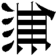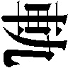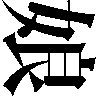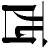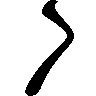』 10：30～12：15
まさか、と思った。
夕子は、その仮定を打ち消した。
あの兄に限って、そんな大それたことをやるはずがない。
枕元には、その雑誌の他にも気になる物があった。漬け物石の代わりに使えそうな国語辞典である。憶えがある、兄が中学校に入学した折に父が買ってきたものだ。ケースから出した状態で、投げ出すように床に置かれている。
眠れぬ夜の睡眠薬代わりにしようとしたのかもしれない。
しかし、こんな大きな辞典は寝ながらでは読みにくいと思う。
分厚い表紙をつまみ、ページをパラパラとめくってみた。
発見できたのは運がよかったからだ。夕子もそれほど真面目に調べようとしていたわけではなかったし、もっと後ろの方のページに挟んであったら気づかなかったはずである。１４０ページから１４１ページにかけて、『あ』の項目が終わって『い』の項目が始まる見開きに、一枚の紙が隠すように挟まっていた。
四つ折りにしたコピー用紙。
すっかり折り癖がついたその紙を、夕子は開いてみた。入部届だった。入部希望者の氏名は伊里野加奈。入部希望先は新聞部で、
入部希望理由は、
一度は打ち消したはずの仮定が、瞠目すべき物証と共によみがえった。
でも、だって、なにこれ。
悲鳴のように考える。わけがわからない。新聞部はゲリラ集団のはずだから、こんな届けを書いても何の意味もないはずだ。担任の捺印欄には「椎名」という印が押されているが、うちの学校にそんな名前の先生は、
保健室の椎名先生？ でもどうして？
そして、何にも増して夕子を苛立たせたのは、次の疑問だった。
この、伊里野加奈というのは一体何者なのか。
新聞部には、女子部員はひとりしかいないはずである。兄と同じクラスの何とかアキホ。
──まさか、
兄はついにおかしくなってしまったのではないか。水前寺の影響を受け過ぎて、兄もついにわけのわからない妄想に囚われてしまったのではないか。この入部届は実は兄が自分で書いたもので、この『伊里野加奈』というのは、兄の頭の中で地球の平和を守るために戦っている五人の超能力戦士の紅一点ではないのか。
「直之ぃ！」
そんな可能性の方が、まだしもありそうなことに思えた。
「出かけるんなら表の看板回しといてくれ！」
兄がどこかに行ってしまう。決断するのなら今しかない。
今日、兄に一体なにが起こるのか。兄は一体どうなってしまうのか。
それを、どうしても知りたかった。
兄がものすごいペースで自転車をぶっ飛ばすので、ついていくのは大変だった。
が、そのことを別にすれば、それほど難しい尾行ではなかった。兄はわき目も振らずに自転車のペダルを踏んでいたし、たとえ真後ろにぴったりとつけていたとしても兄は気づかなかっただろうと思う。それに、もし見失ってしまっても、十時半までに帝国座に先回りして待ち伏せすればいいのだ。しかし、そこに兄が絶対確実に現れるという保証はなかったし、できれば最初から最後まですべてを見届けたかった。
そして浅羽夕子は今、到底受け入れがたい現実を目の当たりにして立ちすくんでいる。
園原駅前のバスターミナルで、兄は、女と会っていた。
相手は、園原中学校の制服を着ていた。
髪が長い。
その程度の特徴しか目に入らなかったのは、ひとつには距離が遠いからである。夕子が身を隠しているのは地下道の出口の陰で、そこからふたりのいる場所までは直線でプールの縦くらいの距離がある。
そしてもうひとつには、たった今、ふたりの間でとんでもないことが進行中で、他の細かいことなど目に入らなくなってしまっているからだ。女は、どうやら、こともあろうに、兄の姿を見た途端に泣き出して、駆け寄った兄はハンカチを差し出してなぐさめているらしいのである。ふたりがいるのはバス乗り場であり、ハンカチを口もとに当ててうつむく女とその周りでおろおろしている兄の姿はかなり人目を引いている。もっと近づかなければはっきりとはわからないが、周囲の人が怪しむくらいの泣き方をしているのだろう。
めまいがした。
あの兄には絶対に起こり得ないはずのことが、いま目の前で起こっている。
夕子は地下道の出口から歩道に出て、ロータリー沿いの歩道をゆっくりと回り込むようにして八番乗り場に接近した。近くで顔をはっきりと見られない限りバレないだろうと思ってはいたが、念のためにショーウィンドウをのぞいているふりをしながら横目を使った。さっきまであわてていた兄の態度が幾分落ち着きを取り戻している。女が泣き止んだのか。
そして、あの女が、件の『伊里野加奈』なのだろうか。
今はまだ何とも判断がつかない。あの女のことは、とりあえず「泣き虫女」と呼ぼう、夕子はそう決めた。
危険を冒して振り返り、泣き虫女を数秒間じっと見つめた。
制服からすれば園原中学校の生徒なのだろうが、まったく知らない顔だった。
おまけに美人だった。
少なくとも、自分と同じ一年生の中にあの顔は憶えがない。三年生にも見えない。ということは、兄と同じ二年生か。
そう、制服。
日曜日だというのに、泣き虫女はなぜ制服を着ているのだろう。
デートに制服を着てくる奴はいないと思う。
自分の早合点なのかもしれない。これは、そんな色っぽい話ではないのかもしれない。そういうシナリオだってあり得ると思う、あの泣き虫女は新聞部の新入部員、つまり水前寺の新しい手下で、身なりをきちんとしなければならない所へ取材に行く、とか。制服を着ていない兄はただの付き添いか道案内で、タウン情報誌の赤丸はなにも今日行く予定であるとは限らないし、水前寺が電話をかけてきたことも説明できる。
ただ、それとデートが両立しないわけではない。
おまけに、泣き虫女が泣いていた理由をまったく説明できない。
ふたりが移動を始めた。とにかく後を追うしかないと夕子は思う。
人通りがそれなりにあったので、かなり接近して尾行できた。泣き虫女は黒くて四角くてジッパーのたくさんついた、たぶんナイロン製のバッグを持っている。見たところずいぶん重そうで、せっかく肩掛けがついているのに左手に下げて歩いている。泥棒かスパイの七つ道具でも入っていそうなバッグだ、と夕子は思った。女の子がデートをするときの持ち物としてはまるで似つかわしくない。
歩きながら、泣き虫女はあちこちをきょろきょろと見回している。さっきまで泣いていたのが噓のような、周囲の何もかもが珍しくて仕方がないといった様子だ。頻繁に立ち止まる。ショーウィンドウの中をのぞくのはまだわかるとして、すれ違う子供とか電柱の張り紙とかちょっと変わった姿形の看板とか、それこそ何にでも興味を示す。そのくせ、あまりお喋りな方ではないらしくて、兄が間を持たせようと懸命にあれこれ喋っているのが後ろから見ているだけでもよくわかった。名前変更、「きょろきょろ女」。
方角からして、ふたりはやはり帝国座に向かっているらしいと夕子は判断した。
あとひとつ角を曲がれば映画館の看板が見える、というところまで来たときだった。大事な用事を思い出したかのようにきょろきょろ女がいきなり立ち止まり、背後を振り返った。夕子は完全に虚を衝かれた。
きょろきょろ女と、一瞬だけ目が合った。
夕子はとっさに、すぐそばにあったパチンコ屋に飛び込んだ。
──バレた!?
兄に顔を見られたわけではない、大丈夫だ、自分にそう言い聞かせた。が、逃げ込んだ場所がまずい。パチンコ屋の表はすべてガラス張りで、店の奥に隠れない限りは通りから丸見えである。きょろきょろ女は兄を連れて自分の正体を確かめに戻ってくるかもしれない。が、店の奥に行くのは恐かった。店内は今風の小奇麗な感じだったが、音はうるさかったし、台に座っている大人はみな銀行強盗か人さらいのように見えた。父はパチンコはしない。パチンコ屋にいる大人は不良だと夕子は思う。
「おい」
飛び上がった。
「何してんだお前」
店員だった。黒服がまったく板についていない。大学生くらいに見えた。
「隠れてるの」
きょろきょろ女に見られた、というショックから抜けきれず、とっさに噓が口から出てくるほど頭が回らなかった。
「外に出て右手の方に、ふたりがまだいるか見てくれない？」
店員は眉をひそめて「あぁ？」と言った。その口調が恐くて、夕子は思わず頭を下げて「お願いします」と言った。店員は面食らったような顔をして、
「──ふたりって？」
「中学生。男と女。男はジーパンとＴシャツで、女の方は学校の制服を着てる」
店員はしばらく夕子を見つめ、店の奥に視線を走らせてボスがいないことを確かめ、自動ドアのマットに足を乗せた。半分だけ顔を出して通りの右手をのぞく。
「──まだいる？」
夕子は店員の方に身を乗り出すようにして尋ねる。
店員がつぶやく。
「女の方が電話してる」
通りの右手に視線を据えたまま、店員が夕子を手招いた。夕子は恐る恐る近づく。背の高い店員の身体の下から外をのぞこうとすると、いきなり店員が顔を引っ込めて、大きな手で夕子の頭を押さえた。
「待て。男がこっち見てる」
十秒ほどしてから、店員は再び外をのぞいた。夕子もそれに倣う。
「あれだろ？」
店員のあごのすぐ下で、夕子がこっくりとうなずいた。きょろきょろ女がパチンコ屋から10メートルほど先にある電話ボックスの中でこちらに背を向けており、兄は外で手持ち無沙汰そうにしている。名前変更、「電話女」。
「誰だあいつら。いじめっ子か？」
正直に説明しようとすれば、とんでもなく長い話になる。
「ちがう。ちがうんだけど、見つかったらだめ。わけあり」
ふうん、と店員はつぶやき、
「──けどおかしいな」
「何が？」
「あそこの電話よく故障するんだ。おれさっきも、友達に電話しようとしてテレカ飲まれた。ったく腹立つな、もう直ったのかな」
ふうん、と今度は夕子がつぶやき、
「あ、でも、うちの学校にある電話もそう。正面の入り口に三台あるうちの、右端のはよく故障する。同じクラスのギーはわざとだって言ってる。電話会社の陰謀だって」
そのとき、電話女が受話器を置いてボックスから出た。兄と並んで足早に歩き出す。
尾行を続行しても問題はなさそうだった。
「行かなきゃ」
店員はただ「おう」とだけ言った。
「ありがとう」
夕子はパチンコ屋を走り出て、走りながら踊るように振り返って礼を言った。パチンコ屋には不良じゃない大人もいる。
人の流れを縫って急いで角を曲がり、それまでより幾分広い通りに出た。ふたりの姿が見えない。しかし映画館の看板はもうすぐそこにあって、ここまでくれば、ふたりの行き先が帝国座であるのは間違いないだろう。時間を確認しようとして、時計を忘れてきたことに気づいて毒づいた。それでも、たぶんもうすぐ十時半になるのだと思う。ふたりの姿が見えなくなったのは、映画の時間に間に合うように急いでいるからだ。夕子も急いだ。走りながら看板を見上げる。『無軌道娘、西へ』。看板を見た限りでは、青春物と格闘アクション物をちゃんぽんにしたような印象を受ける。デートで見る映画としてはあまり賢明な選択と言えないと思う。日曜日だというのに客の入りも悪そうで、チケット売り場の中では、ほっぺたに老人斑の浮き出た「おばちゃん」と「おばあちゃん」との中間生物がうたた寝をしていた。
一秒だけ立ち止まり、大きく息をつき、額の汗をぬぐった。
チケット売り場に駆け寄った。透明な強化ブラスチックのすぐ向こうに縄文遺跡から掘り出したのかと思うほど古びた置き時計があって、針は十時三十二分を指していた。
そして、ふたりの声がハモった。
「中学生一枚！」
互いに、聞き覚えがある声だった。
互いに、カウンターに身を乗り出したまま思わず顔を見合わせた。
「おお、奇遇だな浅羽くん!!」
水前寺だった。
無線で確認を取った。
「どうやら、」
榎本がつぶやく。楽しそうだった。
「おれたちの与り知らねえところで巨大なインボーが進行している案配になってきたな」
「予想すべき事態ではあったかも」
椎名真由美が指摘する。
「確かあなたから聞いたのよね、夏休みに殿山の中腹から第四エプロンを監視してる二人組がいたって。その二人組、浅羽くんと水前寺くんだったんでしょ？」
「しっかし水前寺『くん』ってガラじゃねえぞありゃ。あいつほんとは二十八くらいじゃないのか？ あのガタイで何が中学生一枚だずーずーしい、おれがチケットの売り子だったら絶対信用しねえ」
「ひど。実は本人密かに気にしてるのかもよ」
榎本はバリバリと頭を搔いて散々にフケを散らした。実はもう三日風呂に入っていない。
「──いや、半分は誉めてる。オツムの中身は下手すりや今日びの二十八じゃきかない。進路希望調査表に『ＣＩＡ』って本気で書いて職員室を混乱に陥れたらしいなあいつ。やめときゃいいのにＣＩＡなんて」
「うちよりマシよ。進路指導では何よりまず本人の希望を尊重しなきゃ。ところでさ、」
「あ？」
「どうして排除しなかったの？ あの二人が殿山に陣取ってたとき」
榎本はまさに下等生物を見る目つきをした。
「これだもんな女は」
「なにそれ」
「お前よくそんなヤボが言えるな。いいか、裏山の秘密基地だぞ。謎の渦巻く園原基地をひと夏かけて監視すんだぞ。近くの畑にスイカ盗みに行ったり盛ってるアベックの車に爆竹投げたり野生のタヌキを餌付けしたりとイベントだって目白押しなんだぞ」
「あ、あのふたりそんなことしてたの？」
「おれも混ぜてほしいくらいだった。白状すると八月の頭くらいについに我慢できなくなってな、本気で混ぜてもらいに行こうとしたんだが木村のアホに止められた」
「──いいですもうわたし女で。そしてアホで」
そこで椎名真由美は再び真顔になって、
「でも、やばくなかったの？ 確かに水前寺くん鋭いところあるかもね、第四エプロンなんて目の付けどころ抜群じゃない。写真やビデオ撮られたらどうするつもりだったのよ」
「そのへんに抜かりない。だいたいお前、一体なんのためにあのころタイコンデロガが岬沖にいたと思ってんだ」
「──ちょ。ちょっと待って、どういうこと？」
「ああ、ただ、七月の終わりにいっぺんだけ、ミサイルキャリアを緊急で第四に降ろしたな。明け方だったし、あいつら気がつかなかったみたいだが」
「あ、あんたまさか、あのふたりのためだけに空母呼んだの!?」
「ああ呼んだね。そしてマンタのソーティー全部そっちに移したね」
「馬っ鹿じゃないの!? あんたやっぱおかしいわ絶対!!」
「──けどまあ、」
睡魔がぶり返してきたのか、榎本の声から力が抜けた。座席にもたれて目を閉じる。
「あのころ、スカンクの連中からトーチのテストやりたいとかって話が来てたしな。あのふたりが殿山にいなかったらその話蹴ったかもしれん──ってのがまあ、ほんとのところではあるんだけどな」
「トーチって何？」
榎本が薄く目を開けた。
「なんだっけな、正式名称は忘れた。マンタを超高空から空母めがけて降ろすためのナビゲーションデバイスか何かで、あんときのは──その改良型の発展型のバグフィックス版、とか、何かそんなだった。忘れてもいいようなシロモノだったってことだけはよく憶えてる」
「スカンクって最近そんなんばっかりよね」
「けどマンタ作ったのも奴らだぞ」
「加奈ちゃんかわいそう。いいモルモットじゃない」
榎本が細いため息をついた。椎名真由美には「何をいまさら」と言われたように思えた。そのとき無線機が『梶原です』と名乗り、榎本はいかにも身体に鞭打つ感じで身を起こして、
「どうした」
『──あの、いい感じになったら知らせろ、とのことでしたので。一応』
そういやさっきおれそんなこと言ったな、と榎本は思う。浅羽夕子と水前寺邦博の乱入で少々浮かれていたと思う。完全な断眠ハイだ。
が、椎名真由美の目がぎらりと輝いた。榎本から無線機を奪い取り、
「いい感じってどんな感じ!?」
『いや、ですから頭をですね、肩にこう、』
「入れる!?」
無線の向こう側で梶原が苦笑する気配がした。
『──いいですけど。西側の裏口を確保させます』
椎名真由美がいそいそとシートベルトを外すのを見て、榎本がぽつりと、
「やめとけ」
「どうして？」
「気づかれたらおじゃんだ」
「大丈夫よ！」
「他が気づかなくても伊里野が気づくぞ。それであいつが発作的に世を儚んで校舎の屋根から身投げでもしたらお前に下で受け止めさせるぞ」
「だってあんた見たくないの!?」
榎本は、疲れきったように座席にもたれていた。やがて、
「見たい」
半ば強引に連れ込まれた形である。
さらに、大あわてで家を飛び出してきた夕子の忘れ物は、時計の他にもうひとつあった。
財布だ。
というわけで、チケット代は水前寺が払った。何を考えているのか、水前寺はパンフとコーラとポップコーンをも夕子に買い与えた。なんのつもりだと夕子が問えば、これも変装のうちだと水前寺は答えてひひひと笑った。
そして夕子は今、がらがらの場内の左後ろの席に座ってぶんむくれている。右隣には水前寺がいる。スクリーンの中では北方情勢を報じるニュース映画が終わって本編が始まっていたが、水前寺は映画などには目もくれず、小型の双眼鏡で中央あたりの座席に並んだふたつの後頭部をじっと観察しているのだった。
連れ込まれたとはいえ、水前寺とふたりで一緒に映画館の敷居をまたいでしまった。
もうお嫁にいけないくらいの不覚だと夕子は思う。
なにが奇遇だ。水前寺はやはり、今日のこの話に一枚嚙んでいたのだろう。兄と電話女の目的地がこの帝国座であることも、十時半からの回を見に来ることも最初から知っていて、チケット売り場に張り込んでいたに違いない。そしてまんまとふたりは現れたが、そこに自分というオマケがくっついてきたわけだ。
「──ねえ、」
双眼鏡を目に当てたまま、水前寺が「ん」と返事をした。夕子はささやき声で、
「どこまで知ってるの？」
水前寺もささやき声で、
「ここはひとつ情報交換といこう。隠しっこはなしだ。ではまず君から」
「なんでよ」
「君の持っている情報の方が少ないに決まっている。まずはそっちを聞く方が話が早い」
夕子はむっとしたが、
「──ゆうべからお兄ちゃんの様子がへんだった。部屋を調べたら、映画のページに赤丸のついた雑誌と『伊里野加奈』ってひとの入部届が出てきた。おにいちゃんの後をつけたら駅前のバスターミナルで泣き虫女と落ち合った。そのとき泣き虫女は泣いてた。それから泣き虫女はきょろきょろ女になって、それから電話女になって、ついさっきここに到着。わたしが知ってるのはそれだけ」
水前寺は双眼鏡を降ろして夕子を振り返り、
「確認するが、その何とか女というのは伊里野特派員のことかね」
夕子は闇の中で目を見開き、中央の席に並んだ左側の頭を指差して、
「やっぱりあの人がそう？ あの人が伊里野加奈？」
「声が高い」
夕子は息を吞む。思わず頭を低くして、中央の席にいるふたりの様子を窺う。
「君の情報はなかなかに興味深い。入部届の話は初耳だな。伊里野特派員が泣いていたというのも驚きだ。いささか信じ難くはあるが」
「じゃあそっちの番」
ふと、水前寺が眉をひそめた。再び双眼鏡を目に当てて身を乗り出す。
「ねえ、そっちの番」
「しっ」
「ずるい」
「いまふたりが話してる」
水前寺がそう言った。耳の穴に入れるタイプのヘッドホンを片っぽだけ差し出されて、夕子はそのとき初めて水前寺がそんなものをしていたことに気づいた。見れば、ヘッドホンのケーブルの先は水前寺の隣の席に置かれたバッグの中に消えている。
夕子はヘッドホンを耳に押し込んでみた。
何も聞こえない。が、電源が切られているのとは違う。無言電話を聞いているような感じ。
「なにこれ」
「実況中継」
そのとき、ヘッドホンから兄の声がはっきりと聞こえた。
──眠いの？
そして、夕子の見ている前で、兄の隣にいる頭が首を振った。
水前寺は目を丸くしている夕子をちらりと見て、口の端でにたりと笑って、
「今回のデートに先立って、ゆうべ浅羽特派員と定食屋『しみず』にてヒミツの作戦会議を持った。君が浅羽特派員の部屋で見つけたという雑誌はそのときの資料だ。が、この会議にはもうひとつの重要な目的があった。すなわち、浅羽特派員の持ち物に小型の盗聴器を仕込んでおくことだ」
「そのことお兄ちゃんは、」
「もちろん知らない」
ひどい、と夕子は思った。人のデートを一体なんだと思っているのか。
──眠かったら寝てていいよ。
また兄の声が聞こえた。
見れば、兄の隣の頭がぶんぶんと首を振り、しかし、しばらくするとまたこっくりこっくりと舟を漕ぎはじめ、ついにはうつむいたまま動かなくなった。
そして、その頭が、まるで磁石に引かれるように、兄の方へとゆっくりと傾いていく。
「おおっ」
水前寺が声を上げた。
夕子もまた、口を半開きにして見つめていた。ついに眠り込んでしまったと思われる伊里野加奈の頭が、兄にべったりと寄りかかっている。頭しかみえないのではっきりとはわからないが、あれでは身体の方だって半端なくっつき方ではないと思う。
水前寺が、まるでコーナーからボクサーに指示を飛ばすセコンドのように、こぶしを握り締めて小声で叫んだ。
「浅羽特派員っ！ そこでちゅーだっ！ 明日のためにちゅーだっ!!」
が、兄の頭はぴくりとも動かない。
ずいぶん長い間だったと思う。夕子は、ぴくりとも動かない兄の頭を見つめて、自分でもわけのわからない感情の大波に翻弄されていた。兄は今、すさまじい葛藤の中にいる。映画などもう目にも耳にも入ってはいない。それはわかる。しかし、
兄は、ちゅーをするのだろうか。
しないのだろうか。
自分は、兄にちゅーをして欲しいと思っているのだろうか。
して欲しくないと思っているのだろうか。
そのとき、扉が静かに開く音を聞いた。
外の光が入って場内がほんのわずがに明るくなり、また暗くなった。夕子は何となく背後を振り返り、新たに入ってきた二人連れの客が、最後列の一番右側の席に座るのを見た。人相や細かい特徴は暗すぎてよくわからなかった。
──へんだ。
少しだけそう思った。
へんだと思うことひとつめ。この映画はどちらかといえば若い人向けである。場内にいるわずかばかりの客も、ほとんどは中学生や高校生だと思う。が、その二人連れはいい大人のように見える。しかもカップルである。大人のカップルがこんな映画を見に来るものだろうか。
へんだと思うことふたつめ。場内はがらがらで、真ん中あたりのいい場所にも空席がいくらでもあるのに、何を好き好んで一番後ろの一番端っこになど座るのか。すみっこに座っているのは自分たちも同じだが、それは映画とは別に後ろ暗い目的があるからで、
ということは、あの二人連れもそうなのかもしれない。
たとえば、暗闇にまぎれてえっちなことをするつもり、とか。
きゃ～～～～～～～～～～～～～～～～～～～～～～～～～～～～～～～～～～～～～～～。
椎名真由美が榎本にやっと聞こえるくらいの声で大喜びしている。けしからんことに小さく指まで指していた。
「いや～～～～～～～～～～～んべったしくっついちゃっても～～～～～～～～～～～～～～」
「黙れ。足バタバタさせんな。知らん顔してろ」
「だってあれ見てよあれ～～～～～～～あんな加奈ちゃん見るの初めて～～～～～～～～～」
「──なあ、実は寝てんじゃないのかあれ」
椎名真由美の口調がいきなり冷静さを取り戻し、
「やっぱりあんたもそう思う？」
榎本は小さくうなずき、きっぱりと、
「伊里野にあんな小賢しい真似ができるとは思えん。あいつにそんな知恵はない」
「──まあいいわそれでも。仲睦まじくて実に結構ね」
「それより浅羽だ。なに映画見てんだあいつ」
「映画館で映画見て何が悪いのよ」
「ばか、そもそも映画なんて二の次だろうが。じゃなきゃ何のためにわざわざこんなガラ空きの暗闇に誘ったのかわからんだろ」
「っえー違うよそれ絶対。空いてるのはたまたまよ、浅羽くんそんな計算しないよ」
「いーやそんな言い訳は許さん。たまたまだろうが何だろうがあんなスキだらけの据膳そうあるもんか。いけ浅羽いけっ、せめてそこでちゅーだっ、えぐり込むようにちゅーだっ」
「無理よ浅羽くんには。でもいいわねー若いって。あれでもうちょっと薹が立つと電車の中だろうが公園だろうがお構いなしになっちゃうのよね。純情よねー」
榎本はがっくりと肩を落とした。ため息とともに暗い天井を見上げる。
「──まあなぁ。人のこと言えないか。おれにも憶えがあるもんな」
「お姉さんウソつきはキライです」
「いやマジな話」
「いいこと教えてあげる。近いうちに庶務と経理と広報の被害者が合同で原告団を結成してあんたを訴えるんだって。すっごい楽しみ。セクハラで世界初の死刑判決が出るかもよ」
「お前さ、木村あたりの言うこと真に受けてないか？ ともかくな、おれにだって浅羽と同じ歳の時代があったんだ」
「ないね。あんたに限って」
「お前はじめて男とキスしたのいつだ」
映画館の闇の中で、椎名真由美は赤面した。スクリーンの照り返しを遠く受けて、それは傍目にはほとんど判別がつかなかった。
「いいでしょいつだって」
「じゃ言わなくていい。けど、おれがお前より遅かったことにかけては自信あるぞ。いいか、おれが初めて女とキスしたのはな、忘れもしない、」
「ちょ、ちょっと。いいわよそんなこと発表しなくたって」
「二十六の秋だ」
椎名真由美は、いわく言い難い沈黙の後、
「ふうん」
と言った。そしてすぐに、
「でもあたし聞いたわよ、加奈ちゃんの転入工作の打ち上げでみんなと飲んだじゃない、あのときあんた昔からもてもてだったみたいな自慢話してたじゃない」
「なんだお前よくそんなこと憶えてんな、けどそれも噓じゃない。もてたことはもてた」
「裁判長閣下ー苦しい言い逃れですー被告は己が過去の凶状を隠そうと矛盾した発言をー」
「そりゃあ告白は何度もされたし、よその学校の女からラブレターをもらったこともある。だけどぜんぶ無視した。無視しないまでも、とてもじゃないが実際につきあうまではいかなかった。あのころは、女とべたべたすんのはかっこ悪いことだと思ってた。──なあんてのは自分に対するいいわけで、本当はまるっきり度胸がなかったのさ」
椎名真由美は、それでもまだ相当に疑わしそうな目つきで、
「──度胸って。いいじゃない、相手から告白してくれるんなら」
「自意識過剰だったんだろうなあ。田舎だったし、誰かと一緒に学校から帰るだけで次の日にはもう噂になる。友達からひやかされる。たったそれだけのことがどうしてもいやだった。告白されるのが本気で恐かったよ。断りゃ相手だって泣くし。ところがな、おれがそうやって断り続けてると、今度は逆にへんな人気が出てくる始末さ。他のデレデレしてる男とは違う、榎本がほんとに好きなのは誰だろう、って。まったく冗談じゃないよな、こっちだって腹の底はスケベな妄想ではちきれんばかりなんだから」
悲惨な過去というものは、得てしてどこか楽しげな口調で語られる。榎本の口元にもやはり笑みがある。
「おれにだって気になる女のひとりやふたりいなかったわけじゃない。でも、教室の後ろを振り返れば、件の気になるあいつが他の女と一緒になって昼休みにおれがふった奴をなぐさめてる。こっちから告白する度胸なんて逆立ちしたって出てきやしないし、そうこうしてるうちに他の男にかっさらわれたりしてな。本気で悩んだぞ。どうしてこうなっちまうのか、なんでおれだけこんな目にあうのか。で、悪循環の果てにおれがたどり着いたのは、『簡単に女になびいたりしない硬派でかっこいいオレ』っていう、クソみたいなプライドの砦に立てこもることだった。歪みもここに極まれりさ。大学時代までこの呪いは解けなかった」
「大学ってどこ」
「地元の国立。そこなら金出してやるって親に言われて」
「で、どんな救いの女神が現れたわけ」
「いやー、可愛かったよ」
──どこの誰よ、名前は？
そう尋ねようとして、椎名真由美は口まで出かかった言葉を飲み込んだ。
ここまでの昔話で、榎本は具体的な名前をひとつも出していない。
ということは、榎本が真実を喋っているということであり、当時の榎本がコンプレックス持ちのいち大学生だったというのも本当なのだろう。しかし今は違う。今の榎本は、恐らくアジアで一番やばい男である。内外の色々なところからのマークを受けているし、北も、正体はともかくその存在はつかんでいると思う。そして自分は、榎本よりも遥かに『現場』に近いところにいる。自分がもし、今ここで榎本の昔の女の名前を知ってしまって、この先どこかの手に落ちて自白剤を注射されるようなことにでもなれば、今は結婚して二児の母となって帝都八幡区上代３の65の２で幸せに暮らしている旧姓・小松由希子が夕食の支度をしようと冷蔵庫を開けたら、野菜室に仕掛けられていた４キロのＣ４が爆発するかもしれない。この業界は、本当に何が起こるかわからないのだ。近ごろでは特にそうだ。
「周りが知らない顔ばっかりになったんだ、大学に入るとそうだろ。中学から高校へ上がるときなんかと違ってさ、全国規模のクラス替えみたいなもんだから。なんだか生まれ変わったような気がしてな、基礎ゼミで隣の席だった女と話をするようになって、今度一緒にどこか行こうってことになった。生まれて初めてのデートさ。どんな所に連れて行けば喜ばれるか必死になって考えたよ。でもなにせ地元だし、このへんにデート向きの気の利いた場所なんかないこともわかってた。車も持ってなかったし。で、今となっては自分でも一体どういうつもりだったのか全然わからないんだが、デートの当日、錯乱したおれは、当時おれが一番よく出入りしていた場所にその女を連れて行ったんだ」
「どこよ」
「釣り堀」
「つ、」
「へら鮒の」
「へ。」
「意外なことにこれがウケた。最初のうちは餌にも触ろうとしなかったんだが、しまいには尺ベラ二枚も上げて大喜びさ。ふたりしてサナギ粉の匂いぷんぷんさせながら帰る途中、絶対また行こうって女が言ってくれた。むこうはひょっとしたら、デートだとは思ってなかったのかもしれない。でもおれはそのつもりだったし、あの成功がなかったら今のおれもないと思う」
それからしばらく、ふたりは黙って映画を見ていた。
「──で、その二十六の秋に初めてキスしたっていうのも、相手はその人？」
「いや。それはまた別の話」
「ねえ、あたしたちなんでこんな話してんだっけ」
「元はと言えばお前のせいだろ。浅羽がビビる気持ちもわかるって言ったらお前がてんで信用しないから。いいか、おれは女に関しては血みどろの時代を過ごしてきたわけだ。他ならぬそのおれが言うわけだ、ゆけ浅羽、えぐり込むように」
そのとき、大して広くもないスクリーンの中で、主人公の宮本京子が悲鳴を上げた。古ぼけたスピーカーはその悲鳴を何やら人間離れした絶叫に変えて、場内の暗闇の隅々にまでぶちまけた。
伊里野の頭がびくりと震えた。
飛び退るように浅羽の肩から離れる。
「みーろ。起きちまった」
言わんこっちゃねえ、とばかりに榎本が椅子にふんぞり返った。伊里野がいきなりうつむいたのか、頭が椅子の背に隠れて見えなくなる。浅羽が懸命に何か言っている。
「なに話してんのかな」
「映画じゃなくて君の寝顔に見とれてたよ、くらいのこと言やいーのにな」
早くも自分のことは棚に上げつつある榎本は、そんな勝手なことを言ってかかかと笑い、
「──そうだ」
足元に置かれていた黒いバッグを膝の上に引っぱり上げた。静かにファスナーを引いてふたを開け、次から次へと中身を取り出す。携帯用の無線機、ノート型のコンピュータ、接続ケーブル、イヤホンふたつ。
「ちょっと、なに始めるの？」
「頭を動かさずに目だけで見ろよ、ここから見て十時の方角だ。後ろから三番目で左から二番目の席に水前寺がいるだろ」
椎名真由美は口の中で小さく「あ」という声を漏らした。浅羽にべったりくっついた伊里野の姿にのっけから目を奪われてしまって、そんなことはすっかり忘れていた。
「──そっか。じゃあの、隣にいる小っちゃい子が夕子ちゃん？」
「隣に水前寺がいるから小さく見えるだけだ。確か身長は浅羽とそんなに違わんはずだぞ」
榎本は忙しく手を動かす。イヤホンを耳にねじ込み、無線機とコンピュータをケーブルで接続してチューニングツールを立ち上げる。
「さっき梶原が言ってたろ、浅羽が妙な電波出してるって」
「あんたそれ聞いて放っとけって言ったじゃない」
「邪魔しちゃ悪いからな。たぶん水前寺の仕業だ。浅羽の鞄か何かにこっそり盗聴器を仕込んで会話を盗み聞きしてるのさ。せっかくだからその電波にただ乗りする」
周波数は梶原の報告ですでにわかっている。ＵＨＦの３９８・６０５。市販されている盗聴器によく使われているチャンネルというのはせいぜい６通りほどで、これもそのうちのひとつだった。普段の水前寺ならもっと凝った真似をするのだろうが、なにしろ昨日の今日である。大掛かりな準備をする時間がなくて、やむを得ず市販品で間に合わせたに違いない。奴もゆうべは徹夜だったかもな、榎本はそんなことを考えてにやりとする。
イヤホンから、明瞭な浅羽の声が聞こえた。
──あ、あのさ、伊里野って授業中もよく居眠りするよね。
「あったりー」
「あたしもあたしも、あたしも聞く」
榎本がふたつ目のイヤホンを差し出したそのとき、水前寺がいきなり立ち上がった。榎本も椎名真由美もとっさに顔を伏せる。水前寺は「ＴＯＩＬＥＴ」という矢印の表示のついたドアへと姿を消して、すぐに戻ってきた。
兄が喋っている。
──ひょっとしてバイトでもしてるの？ それで夜遅くなるとか。あ、いや、別にいいんだけど。うちの学校バイト禁止だけどさ、知り合いにもやってる奴いっぱいいるから。
前の席の背もたれにあごを乗せ、兄の頭をじっと見つめながら、夕子はヘッドホンから聞こえてくる兄の声をぼんやりと聞いている。そこに水前寺がトイレから戻ってきた。夕子の身体が座席の前の通路をふさいでいる。「通してくれ」と頼むまでどいてやるもんかと思っていたら、水前寺はそのまま夕子の左隣の席に腰を下ろした。
榎本はすぐさま決断した。
「出るぞ。水前寺に気づかれた」
「え？ あ、ちょっと、」
イヤホンを耳から引っこ抜き、急いでノート型のコンピュータをたたもうとする榎本を椎名真由美が邪魔した。
「待ってよ、どうしたの？」
「水前寺が座る場所を変えた。浅羽の妹の右隣に座っていた水前寺が、トイレに行って戻ってきたら今度は左隣に座った」
「──だから？」
「おかしい。普通はそういうことはしない。おれはそういうのは気に入らない」
「浅羽くん、そっちの席に置いてあるバッグを取ってくれ」
夕子は無視した。
「浅羽くん、」
「自分でとれば」
「いいから早く。できるだけさりげない動作で」
夕子は怪訝な顔をして、面倒くさそうに身体を伸ばして水前寺のバッグのストラップをつかむ。が、片手では持ち上がらないくらいに重かった。両足の浮いた無理な体勢で、さりげないとは言い難い動作で水前寺にバッグを手渡す。
「なに入ってんのこれ」
「無線機と無線機の予備とパームトップ型のコンピュータとＣＣＤカメラとメモリー式のボイスレコーダーとブースターマイクと、暗視ゴーグルと赤外線投光器と改造した汎用リチウムバッテリーが七本と、あと何だったかな」
水前寺は椅子に深く座り直した。ゆっくりと手を動かす。バッグからコンピュータを取り出し、ケーブルを介して無線機と接続する。
「考えすぎよ。だいたい理由になってないじゃない、座る位置がさっきと違うとどうして気づかれたってことになるわけ？」
「なにかやるつもりなのかもしれん。左側の席に移れば浅羽の妹が邪魔になって、水前寺の動きがおれたちには多少なりとも見えにくくなる」
「で、夕子ちゃんの陰に隠れて何するって言うのよ」
「知るか。わかったときにはもう手後れになってたらどうする。たとえ気づかれていなかったにせよ、もう長居しすぎた。潮時だ」
「ちょっと待ってよあと五分、五分だけ。せっかく加奈ちゃんが起きてふたりがお話し始めたんだから。こういうの聞いておくのだって仕事のうちでしょ？」
「ゆうべから様子がおかしかった」
パームトップのコンピュータを膝の上に隠すように置いて、水前寺はでかい手を小さなキーボードに走らせる。
「この界隈に妙な暗号通信が飛び交ってた。強力なスクランブルがかかってて、発信源は複数で移動していて、出力はそれほど大きくなかった。最初から頻繁に通信が交わされているという感じじゃなかったが、午前七時くらいに一度ぱったりと止んで、九時くらいからまたぽつぽつと再開されて、十時を境に通信量が激増した。十時といえば、浅羽・伊里野両特派員の待ち合わせ時間だ」
夕子は眉をひそめ、
「──だから？」
「両特派員を監視しているのは、我々だけではないのかもしれん」
「けど、」
そんなのは偶然かもしれない。暗号無線で遊んでいた無関係のマニアがたまたま十時ごろから盛んに話をし始めた、というだけではないのか。
「もうひとつある。夏休みに浅羽特派員と一緒に園原基地の裏山にいたころ、あれとよく似た暗号波を何度も傍受したことがあるんだ。おそらく我々を監視するチームがいたのさ。それと同じような装備を持った似たような連中が、今度は浅羽・伊里野両特派員をつけ回している」
なんだそれ。自分たち以外に一体どこの世界にそんな物好きが、
「──あ、」
怪しい二人組。
いい大人のくせにこんな映画を見にきて、しかもすみっこの席に座ったあのカップル。
「そ、そういえばあそこの、」
「見るな」
思わず四時方向を振り返ろうとした夕子だったが、水前寺の小さく鋭いささやきに止められた。水前寺は手を止め、夕子を横目でちらりと見てにたりと笑った。
「──気づいていたか。なかなかどうして見所があるではないか浅羽夕子くん。今度ぜひうちの部に、あ、でもそうなると『浅羽特派員』が二人になってしまうな。どうしよう」
「どうするの」
「（兄）に（妹）というのも味気ないしな、なおなおとゆーゆーというのはどうだ。パンダみたいで可愛かろう」
「ちがうのっ。そうじゃなくてっ。あの二人がもし」
そうだとしたら、一体どうするつもりなのか。
水前寺はひと言で答えた。
「爆破する」
冗談に聞こえなかった。
「あの二人の正体がこちらの想像通りであるとするなら、我々の存在にも、我々が浅羽特派員に盗聴器を仕込んでいることにも気づいていると見ていい。さっきトレイに行くフリをしてちらり様子をうかがったんだが、鞄から何やら引っぱり出してごそごそやっている感じだった。おそらく自前の無線機で、我々の盗聴器が出す電波を傍受しているんだろう。傍受するだけなら目立たんし、奴らとしてもせっかくの盗み聞きのチャンスを無駄にする手はなかろうしな。そこでだ」
水前寺はバッグに手を突っ込み、盗聴用に使っていた無線機の電源を切った。夕子のヘッドホンが「ぴ」という電子音とともに沈黙する。
「これから、盗聴器と同じチャンネルに大出力の電波をねじ込んで奴らのレシーバーを焼き切る。耳元でものすごいノイズが聞こえるはずだし、回路から火花のひとつも上がるかもしれん。あのふたりが飛び上がって驚いたら『大当たり』ってわけさ。いいかねゆーゆー、君の任務は、場内全体にくまなく目を光らせておくことだ。あの二人以外に飛び上がった奴がいたかどうかを確認してほしい。それと撤収の支援。事が始まったら何もかもバッグに突っ込んでそこのドアから飛び出したまえ。通りの向かいにコーヒー屋があったな、あそこで合流しよう。三十分待ってもおれが現れなかったら、浅羽特派員に『いつもの場所に手紙を隠した』と言ってくれ。何か質問は？」
「──ゆーゆーって呼ぶのやめて」
「了解した」
「大騒ぎになったらお兄ちゃんたちに気づかれちゃうと思う」
「そうなるだろうな。ただし、騒ぎ自体は気づかれても構わんが、そこにいるのが我々だと気づかれるのはまずい。そのように行動してくれ」
「わたしばっか色々やらなきゃいけないみたいでずるい。そっちは何するの」
「知れたことよ」
映画館の暗闇の中で、水前寺は不敵に笑う。フラッシュとオートフォーカスのついた小型のカメラをバッグから取り出す。バッテリーが切れていないか、フィルムを装塡し忘れていないかを確認する。
そして、『園原電波新聞』と書かれた腕章に腕を通す。
ずいぶんな間をおいてから、伊里野はこくんとうなずいた。まだ顔が赤い。
あまりにも間がありすぎて、自分が伊里野にした最後の質問が一体なんだったのか、浅羽はすぐに思い出すことができなかった。
「あ、えっと、」
バイトだ、
「そっか、バイトしてるんだ。どんなバイト？」
それを聞いてどうするつもりなのかと言えば、もちろん浅羽も同じところでバイトをするつもりなのである。夜遅くなるのもなんのその、給料なんかいらないとまで思う。
「基地の仕事」
伊里野はそう答える。その表情がひどく固い。しかし浅羽はそれを見ていない。そもそも浅羽は女の子の顔を至近距離で直視しながら話ができるようなタマではない。ひょっとしてぼくらうるさくないかな、あんまり話してると他の人に迷惑かな、けど別にいいよな、近くの席に座ってる人なんて誰もいないしな、などというピントのずれたことを考えている。
──基地の仕事。
ずれていたピントがまた別なところで焦点を結び、水前寺の顔になった。
「それ、ひょっとしてぼくにもできないかな」
そう尋ねたのはしかし、決して水前寺のためではなかった。
「そんなのだめ」
伊里野は即答した。
「ぜったいだめ」
だめ押しまでされた。
気まずい空気が流れた。なぜ伊里野がそうまで強硬な言い方をしなければならないのか、もちろん浅羽にはわからない。わからないから気持ちが萎縮する。知らず知らずのうちに、伊里野の気に触るようなことを言ったかやったかしたのではないかと思ってしまう。言葉の接ぎ穂を見失い、話を続けるだけの勇気がくじけて浅羽は黙り込む。が、その沈黙が今度は伊里野を追いつめていく。横目で浅羽の様子をうかがう、唇を嚙む、膝の上で両手が複雑に絡み合う。
伊里野が何か言おうとした。
そのとき、スクリーンの中が夜のシーンに切り替わり、場内がなお一層の暗さを増した。
そして、そのタイミングを狙ったかのように、浅羽と伊里野の背後で女の悲鳴が上がった。
その悲鳴は、ホラー映画のような絶叫ではなく、まったく予想外の事態に直面したときの驚きの声だった。そう切迫した感じでもなく、それほどの大声というわけでもなかった。事実、そのとき場内にいたわずかばかりの客のうち、すぐに背後を振り返ったのは全体の半数ほどだったし、その中に浅羽と伊里野は含まれていなかった。その半数にしたところで、大そうな事件を期待して振り返ったわけではない。どうせブスが痴漢に胸でも触られたか、おっちょこちょいがひざの上にコーラでもこぼしたか。
が。振り返った半数は、そこにかなり意外なものを見た。
まずは映画館の闇。次いで、映写室の窓からスクリーンに放たれる光。
暗闇の中に、男がいた。
女もいた。
どちらもすでに席を立っており、男が女の手をつかみ、まるで引きずるようにして、左手後方のドアから場外へ逃れようとしていた。
そして、第二の男がいた。
彼は六尺豊かの大男だった。片手には黒板消しくらいの大きさの何かを持っており、逃げようとする男と女めがけ、客のいない席を次々と踏み越えて、ものすごい勢いで突進していくところだった。
実は、その場には第二の女もいた。正確を期すならば「女」というよりも「女の子」で、重そうなバッグを胸に抱きしめ、右手後方のドアから外へと転がるように飛び出していった。しかし、誰もそのことに気づかなかった。第二の男のあまりに突飛な行動に、まるで戦場を駆ける兵士のような見た目のインパクトに誰もが目を奪われていたからである。
突進する第二の男の騒々しい足音に、ようやく場内の目すべてが背後を振り返った。
が、第二の男は非常な俊足だった。浅羽と伊里野がその姿を目にしたときにはもう、第二の男は獲物を目前にしていた。彼は最後の座席の列を飛び越えざまに、ドアから逃げようとする男女に狙いをつけるかのように黒板消しを顔に当てた。
カメラだった。
フラッシュが連続で闇を祓った。
微妙なタイミングだった。目標の男女はもうドアの外にいたし、第二の男はかなり無理な体勢から立て続けにシャッターを切っていた。果たして、男女の姿を見事カメラに収めることができたのか。そのあたりについては、当の第二の男にもわからなかったに違いない。
すべては、映写機の逆光の中での出来事だ。
そしてフラッシュの閃光は、場内にいる全員の闇に慣れきった目をひとつ残らず潰した。
浅羽が思わず目を閉じ、もう一度目を開けたときにはもう、事件の役者はすでに全員が退場した後だった。相も変わらぬ映画館の闇があり、映写室の窓から放たれる光の中で埃の粒子が輝き、ただ一点、左手後方のドアが微かに揺れているばかり。
「──な、なんだろ、今の」
伊里野を見る。
伊里野も「わからない」とでも言いたげに、少しだけ首をかしげる。
場内のざわめきが不意に大きくなる。「焦げくさい臭いがする」と誰かが言い出す。
映写機が止まる。場内にようやく明かりが灯る。
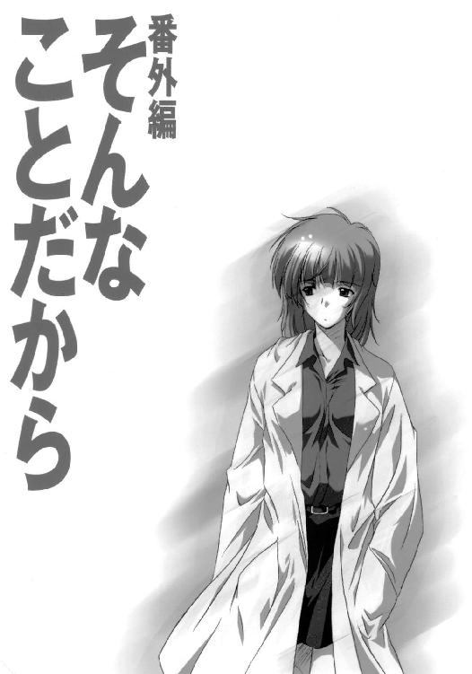
新聞屋は荷解きを始めて十分もしないうちにやってきて、チェーンのかかったままのドアの隙間に安全靴のつま先を突っ込んで卑屈なセリフを延々と繰り返すのだった。洗剤もつけるしビール券もつける、一ヶ月だけでもいい、何だったらその一ヶ月分はタダでいい。うちの営業所では契約を五十件取るごとにちょっとしたボーナスがもらえる。ここでちょうど五十件目だから料金を立て替えたとしても自分としては得なのだ。あんたは料金がタダになって自分はボーナスがもらえて営業所も成績が上がる。みんなハッピー。なあ頼むよ、
お引き取り願った。
備えつけの傘立てに金属バットを突っ込み、六畳間に戻って真新しい畳の匂いを嗅いでも腹立ちは収まらなかった。
──まったくもう、
新聞の勧誘員というのはどいつもこいつも決まってあの調子だ。「あれもこれもつけるからどうかこの迷惑な物を引き取ってくれ」と無理強いするかのような言い草。物を売り込もうというのならまずはその物の美点を語るのが最低限の基本だろうに、奴らときたら洗剤やらビール券やらをちらつかせるばかりで、新聞がいかに素晴らしいものかという点についてのセールストークなどひと言もない。勧誘員自身が「新聞なんて」と思っているのがバレバレで、話を聞いている方は薦めている本人もいらないと思うような物を押しつけられている気がして不快になるのだ。おまけに愛想はない、とにかくしつこい、場合によっては女と甘く見て凄んできたりする。日本の新聞はインテリが書いてチンピラが売る、と言ったのは誰だったか。
部屋中に散らばっているダンボール箱を見回して、椎名真由美はため息をついた。
「──いっか」
寝る場所さえあれば。とりあえず今日のところは。
荷解きは明日にしよう。
部屋の隅に放り出したまま忘れていたコンビニ袋を手に取る。三本の缶ビールがビニール越しに汗をかいている。一本をつかみ出し、まだ空っぽの冷蔵庫に残りを袋ごと突っ込む。どこか遠くにある町内放送のスピーカーから「遠き山に日は落ちて」のメロディが流れ、作文を棒読みしているような調子の女の子の声が幾重にも木霊を返した。もう七時になったから車に気をつけて家に帰れ、家に帰ったら宿題をして家の手伝いをして風呂に入って歯を磨いて早く寝ろ。
──よけいなお世話よ。
カーテンのかかっていないガラス戸をいっぱいに開けて、裸足のままベランダに出た。
いつの間にこれほど日が長くなったんだろう、と思う。福原荘２０２号室のベランダからは、色の深い夕暮れの空が見えた。ずいぶん古くからある感じの家並みも見渡せたし、避難所指定もされていないちっぽけな公園も見下ろせた。風が吹き、白いタンクトップが汗ばんだ身体にはりついた。
プルトップを開ける。
思わず苦笑がもれた。引越してきたばかりの六畳間と荷解きも済ませていないダンボール箱とベランダと夏の夕暮れ。まるで花札の役みたいだ。なんだか頭の悪いビールのＣＭみたいなシチュエーションだ。
ひと口すする。
園原中学校に保健教諭として赴任するのは六月の末日、すなわち三日後である。
本来ならばもっと早く「現場」に入っておくべきだったのだが、いつまでも煮え切らない米空の上層部や自衛軍からの横ヤリのおかげで予定は遅れに遅れた。赴任後は現場のより詳細な情報収集を行うことになっているが、すぐに夏休みになってしまうからあまり時間はない。夏休みが明けて「アリス」が現場入りしたら、そのバックアップ任務に移る。
ビールをもうひと口すすったとき、思い出した。
基地に電話を入れるのを忘れていた。
セーフハウスに入ったことを知らせておかなければ。
ビールをさらにもうひと口すすり、ガラス戸を開け放したまま部屋に戻った。
畳にあぐらをかいて電話機を引き寄せた。
その途端にベルが鳴った。
やばい。いつまでも連絡がないことに気をもんだ誰かが、お説教の電話をかけてきたのかもしれない。あわてて受話器を取り、
もしもし、というヒマもなかった。
『おいテレビつけろテレビ！』
榎本だった。
「な、なによいきなり。あのね、先坂そこにいる？」
『んなこたいーから早くテレビつけろって！ めちゃくちゃおもしれー番組やってるぞ！』
椎名真由美が引越し先に着いてまず最初にコンセントを挿し込む電気製品は、冷蔵庫と電話とテレビである。17インチのテレビはすぐそばのダンボール箱の上に載せてあり、リモコンはまだ荷物のどこかにまぎれていた。
身を乗り出して、電源ボタンを押した。
「チャンネルは？」
榎本は『26！』と怒鳴っていきなりわはははははははははははと大笑いした。
そんなに面白い番組なのだろうか。
チャンネルの切り替えボタンを何度も押した。
そして、画面の右上の表示が「26」になった途端、激昂するヒゲ面坊主頭の中年男がどアップで熱弁をふるいはじめた。
『そんなことだから！ そんなことだから！ そんなことだからあなたたちには何も見えないんだ！ あなたたちは常識という色メガネに心の目を曇らされているんだ！ いいですか、あれだけの目撃者がいるんですよ!? 目撃者の中には小学生やお寺のお坊さんや、果ては警察の方までいる！ 小学生が大人の科学者やジャーナリストを相手に噓をつき通せると思いますか!? お坊さんや警察官が自らの社会的立場を危機にさらしてまでデタラメを言うメリットが一体どこにあるんです!? 答えはひとつだ！ 彼らの言っていることはすべて本当なんですよ!!』
受話器の中で榎本が『そんなことだから！ そんなことだから！』と声を合わせて大笑いしていた。
見たことのある顔だった。
そんなことだから、の連発もお馴染みだった。
正確な名前は思い出せない。葵なんとか。違うかもしれない。とにかく、自意識過剰の中学生がどこかに詩を投稿するときのペンネームみたいな名前だったと思う。超常現象全般を手広く扱う研究家で、その手のメディアの常連のひとりだった。
画面のアングルが切り替わり、おばさんが反撃する。
『あんたねえ、そういう言い方は小学生に失礼だよ。小学生をバカにしちゃいけないよ。バカな大人を騙せるくらいの噓つく小学生なんていっぱいいるよ。だいたいあんたみたいな人が相手だったらねえ、そこらへんのガキが「地球は四角い」って噓ついても通用しちゃうよ。だってあんた端っから信じたがってるんだもん、「地球は四角い」って。坊さんやお巡りさんだって一緒だよ。あんたみたいなある意味ものすごく純真な人にこんなこと言うと傷ついちゃうかもしれないけどね、いい？ 言うよ？ あのね、それで少しでも他人の注目を集められると思ったら、どんなバカな噓でもつくしどんなバカなことでもやるっていう人は、いるの。悲しいけどいーっぱい。誰かに認められるためなら死をも辞さないの。そういう悲しい悲しい生き物なの人間って』
ローマ兵の兜みたいなヘアスタイル、あごの先にチョコチップをくっつけたような大きなホクロ。これもよく見る顔だった。やはり名前は思い出せないが、やはりこの手の番組には必ず登場する常連だ。肩書きは科学ジャーナリストで、いくつものお堅い雑誌に連載記事を書いていた。と思う。
受話器がものすごく楽しそうに『いやーむかつくなーこいつ。髪形がむかつく』と言った。
Ｕ字型のテーブルには両陣営の論客がそれぞれ三人ずつ座っており、その背後にはパチンコ屋のようにきらびやかなセットが組まれて、アダムスキー型のＵＦＯのハリボテが滝のようなスモークに洗われていた。
つまりは、ＵＦＯ特番なのだった。
少しがっかりした。榎本があれだけ勢い込んでテレビをつけろと言うからには、さぞかし面白い番組なのだろうと思っていたのに。ＵＦＯ特番など珍しくもないし、普段から見る気もしない。
ところが。
『さあ、スタジオでは熱戦が展開されておりますが、ここで園原基地を呼んでみたいと思います。大板橋さーん？ そちらの実験はどうなっていますでしょうかー？』
──!!
画面が切り替わった。そこに映し出された光景を、椎名真由美は一発で特定することができた。園原基地第二エプロン。さすがに敷地内ではなかった。不安定なカメラが殴りつけるように向きを変え、周囲に集まったオール民間人の野次馬どもの姿をなめる。
『はーい、園原基地の大板橋です、現在わたしの時計で午後七時十六分、テレパシーによるＵＦＯ召喚実験が始まって十分あまりが経過しています、今のところ、上空には特に目立った変化は見られません、それにしてもご覧くださいこの場に集まった人々の数、さすがは基地の町ＵＦＯの町エリア・ソノハラといったところでしょうか、住民の方々の関心の高さを』
黙っちゃいられなかった。
「こ、これ生なの!?」
受話器が答える、
『おうよ。さっき警備の連中がばたばたしてやがったからさ、一体何の騒ぎかと思ったらこの騒ぎだ。おれもあそこでピースのひとつも出したかったのに木村のアホが』
「アホはあんたよこのバカ!! いい、絶対そこから動くんじゃないわよ!? これ全国ネットでしょ!? あんた生顔チラリとでも撮られたら軍法会議じゃすまないわよ!?」
『ったくデカい声出すなって、冗談だよ。おー見ろ見ろ出た出た出たえーと名前なんだっけまあいいやテレパシーでＵＦＯ呼び出し男！ うっわいつみてもキてんなーこいつ』
カメラが捉えたのは、生まれてこの方ミネラルウォーターと生野菜とマリファナしか口にしてきませんでしたという感じの、気味が悪いくらいに背の高い男だった。目を閉じて顔を空に向け、両腕を緩く広げたポーズでじっと立ち尽くしている。確かチャネラーか何かで、しばしばテレビに登場してはテレパシーやら予言やらのパフォーマンスをやる男だ。外惑星のブラザーか誰かから何かの勲章として授与されたという、憶えようとしてもちょっとやそっとでは憶えられないような長ったらしい名前を名乗っていた。
『えー、カンリナフレキマム・フルエコルテ・シアーさんの話では、ＵＦＯの召喚はうまくいくとしても三、四十分はかかるだろう、もしＵＦＯが出現するなら北北東、30度の方角だろう、とのことでした、』
受話器が『ブルズアイ方位０３０か。まんざら外れちゃいねえな』とつぶやく。
『ですから、何らかの結果が出るにはいましばらくかかるかと思われます。何か動きがあった場合にはすぐにお知らせしますので、いったんスタジオにお返しします』
雲が出て夕暮れは深まり、まだ照明器具を取りつけていない六畳間は中途半端な闇に閉ざされ始めていた。
ぼんやりとしたテレビ画面の照り返しを顔に受け、椎名真由美は受話器を畳に置き、傍らの缶ビールをつかんで中身を一気に飲み干した。身体を倒して右手を伸ばし、ごちゃごちゃと物が詰まったバッグから滅多に吸わないタバコとライターをほじくり出して、中途半端な闇に赤く火を点す。
片ひざを立てて座り直し、受話器を拾って、
「──ほんとに大丈夫なんでしょうね」
『まあな。空母の方にも連絡は入れてある。それに、奴らが第二エプロンの外にいるのは三課の連中がうまいこと誘導したからだよ』
ため息と煙を一緒に吐き出し、灰を缶に落とす。画面の中ではヒゲ面の坊主頭がパネルを指差して何やら熱く解説している。パネルに描かれているのは、どうやら園原基地周辺で目撃される「幽霊戦闘機」の想像図らしかった。受話器が笑って、
『あれはない。あれはないです。あれじゃまんまＵＦＯです。二十点』
椎名真由美も苦笑した。パネルの幽霊戦闘機は、アダムスキー型から多少バタ臭さを抜いたような感じだ。ヒゲ坊主は語る、
『この半円形の部分、これがいわゆる「ディーン機関」が格納されている部分です。一種の反重力フィールド発生器で、世界各地で目撃されるすべてのＵＦＯが、同じような駆動装置で飛行しているものと思われます』
受話器が『名前はあってる。二十五点』。
「あってて当たり前でしょ。あっちから取った名前だもん」
チョコチップが「やってられん」とでも言いたげに首を振って『反重力。はあ～んじゅうりょく。反対を重ねる力ですか。あなたいま反重力とおっしゃいましたか』ヒゲ坊主が『言いましたよ。それが何か？』、チョコチップはコップの水をひと口飲んで『その反重力フィールドとやらは、一体如何なる原理によって生み出されるのでしょうか』、ヒゲ坊主は『申し訳ない、それについてはエイリアンたちに聞いてください』、『すまん、そいつはスカンクに聞かなきゃわからん』とこれは受話器、『それがわかんないのによくもまあいけしゃあしゃあと「反重力装置が搭載されています」なんて言えるわね！』『だったら教えてくださいよＵＦＯはどうやって空中に静止したりぐにゃぐにゃの機動で飛び回ったりしてるんですか！』『だから見間違いと妄想と噓っぱちだって最初から何度も何度も何度も何度も言ってるでしょ！』『そんなことだから！ そんなことだから！』、そして物が飛び交う。
「この人、何て名前だっけ」
『どっち』
「そんなことだからオジサン」
『葵星円。おれこいつと二回くらい話したことあるぞ』
息が止まった。
『心配すんな、二回とも三課の連中と一緒だ。こいつよく基地の周りうろうろしているしな、三課が一応印つけとくって言うからくっついてったんだ。番組収録の控え室で会った』
「やっぱりキレてた？」
『いや全然。悪く言やタスキで良く言やプロだよ』
「──なにそれ」
『試しに写真を見せたんだ。知り合いが撮った写真なんですが先生にどうしても見てもらいたくって、とか何とか言ってさ。一発で見破ったよ。申し訳ないけどこれ、典型的な「グラスワーク」ですね、ってな』
「グラスワークってなに」
『インチキのＵＦＯ写真を撮るやり方さ。紙切れか何かを楕円形に切り抜いて、窓ガラスに貼りつけるんだ。ピントは無限大。一番よくあるやり口だな』
「たったそれだけで、それっぽく撮れちゃうわけ？」
『ああ、出来のいいやつ見たらびっくりするぞ。で、おれが「はあーそうですか」って関心したふりをしていると奴は、この写真ちょっと貸してくれって言うんだ。番組で使いたいから、って。そんときの番組はやっぱり今日のこれと似たような討論形式だったんだが、そこで奴はおれの写真を誇らしげに取り出して、「さる人物が提供してくれた、ＵＦＯの存在を証明する決定的な一枚」なんてぬかしやがってさ。否定派が「写真一枚で何が決定的な証明だ」って突っ込むと、そんなことだから！ そんなことだから！』
中途半端な闇の中で、タバコの灰が長くなっていた。
『奴だけじゃない。三島聡子、おばさんの方な。科学ジャーナリストって肩書きも別に噓じゃないんだが、その実しっかり芸能プロダクションに所属してたりもするんだ。あの日の番組にもやっぱり顔出してて坊主頭とやりあってたんだが、収録の合間にカメラが止まると二人で仲良くペットの話をしてた。二人ともソマリを飼ってて話が合うらしいんだ。キャットフードは何がいいとかペットホテルはどこがいいとか』
灰が落ちた。
『ある意味ものすごく純真な人──か』
番組の中で、チョコチップがヒゲ坊主を揶揄した言葉だ。
『その筆頭って実はおれたちなのかもしれん、って思ったことないか』
中途半端な闇の中で、テレビの画面だけが椎名真由美を照らしていた。
『──を番組では引き続き募集しております。電話番号はくれぐれもお間違えのないようによろしくお願いします。それでは視聴者の方から寄せられましたＦＡＸをご紹介しましょう』
「──あんたさ、生顔はさすがにマズいけどさ、」
画面の照り返しを受けている椎名真由美の顔が、薄く笑った。
「ちょっとだけカメラに写ってきたら？ ガキみたいに両手でピースなんかして」
『やなこったみっともねえ』
『園原市にお住まいの河口さん、教師の方からです。──番組拝見しております、ＵＦＯ現象は人間が生み出した最も大きな共同幻想かもしれません、ありもしないものを信じている人々がまだまだたくさんいます、そうした人々の教育のためにも、理性と節度のある番組づくりを望みます』
そのとき、画面の外からＡＤの手が突き出され、女性キャスターに一枚のＦＡＸを手渡した。
『ええっと、はい。また園原市にお住まいの方からのＦＡＸです。タイトルには「極秘情報」とあります。ヒトキュウヨンゴウ、園原基地南第二ゲートに武装車両に護衛された大型トレーラーが到着する、積み荷は、──あの、』
女性キャスターは困惑した表情を浮かべ、画面の外にいる誰かに視線で指示を求めた。
『積み荷は、異星人の冷凍死体四体──だそうです。えー、園原電波新聞、の方からのＦＡＸでした』
受話器が、つぶやいた。
『──やべ』
画面の中でヒゲ坊主が大喜びしていた。現地の取材チームを急行させろと叫んでいる。生放送らしい緊迫感がスタジオに満ち、マイクがスタッフの指示を拾ってしまう。司会者がサブモニターを見つめながら問いかける、えー、園原基地の大板橋さんにつながりますでしょうか。
『みろ言わんこっちゃねえ木村のアホが!! だから空輸にしろと言ったんだ!!』
「ちょっと、どうしたのよ!? まさか、」
積み荷の中に、本当にエイリアンの死体が、
『なわけねえだろうが!! ああ言えば番組側が動くと計算しやがったんだよ!! 積み荷が何かなんてどうせ水前寺だって知りゃあしねえ、取材スタッフをぶつけて何が出てくるか確かめる腹だ!! 先坂!!』
「ねえ、水前寺って誰よ!? ちょっと！」
榎本は答えず、受話器の奥で複数の怒鳴り声が飛び交った。いきなり、
『悪い、忙しくなるから切るぞ!!』
受話器が叩きつけられ、回線が切れた。
何が何だかわからなかった。
それから、番組はＣＭに入った。
椎名真由美は他になす術もなく、身を乗り出して画面を見つめた。しかし、ＣＭは十五分以上続いた。しびれを切らしかけてテレビをがたがた揺すってやろうかと思ったころ、
『大板橋です！ えー、いま、園原基地南第二ゲート前の貨物集積エリアに来ています！ ご覧頂けますでしょうか、情報の通り、装甲車に守られた大きなトレーラーが停車しています！ 別のトラックへの積み代え作業でしょうか、おそらくそうだと思います、トラックの方はナンバープレートの形式が違うようです。ご覧ください、兵士によって、金属製のコンテナの積み下ろし作業が行われています！ カメラこっち！』
現場は混乱していた。
カメラは地震でもきているかのように揺れ動き、スタッフが走り回り、ゲート前までついてきた野次馬どもが大騒ぎをしていた。大板橋はカメラに背を向けて走り出す。カメラがその後を追いかける。行く手には巨大な軍用トレーラーと、基地内での物資搬送に使われるトラックが止まっている。野次馬や取材スタッフを制止しようとしている警備兵もいるにはいるが、圧倒的に多勢に無勢のようだった。くそ長い名前のチャネラーの姿は、少なくとも画面を見ている限りでは見当たらなかった。あのまま第二エプロンに置き去りにされているのかもしれない。
『すみません、このコンテナの中身を見せてください!!』
警備兵の手を振り切って大板橋がコンテナのひとつにしがみつく。積み下ろしの作業をしていた兵士数名が、殴りかからんばかりの勢いで、
『ちょっと何やってんだあんた！ 危ないから離れろ！ 離れなさい!!』
『危ないって何がですか!? この中には視聴者の方々には見せられないような物が入っているんですか!?』
『積み荷が崩れるだろうがさっさと早く離れろこの馬鹿！ こらあっ、キサマらっ!!』
暴動、に近い状況だったのだろう。野次馬どもが次々にコンテナによじ登り、トラックのサスがぐらぐらと揺れ、ついにコンテナのひとつが荷台から転がり落ちた。その衝撃でロックが外れ、コンテナは傾斜のついたアスファルトを転がりながら、複数の、確かに人の形をした何かをばら撒いた。
ダッチワイフだった。
全国ネットだった。
カメラのレンズを誰かの手が覆い、画面が切り替わった。
『しばらくお待ちください』
六畳間の中途半端な闇に、電話のベルが鳴る。
未だ画面に釘付けの椎名真由美の左手が、のろのろと受話器を取って、
「──もしもし、」
榎本のため息が聞こえた。
「あのさ、ひとつ聞いていい？」
『なんだ』
「──あんたの努力は身を結んだわけ？ それともすべては手後れに終わったわけ？」
しばしの沈黙の後、榎本が鼻で笑った。
『──どっちだと思う？』
──へ、兵隊さんもいろいろと大変ですよね。
──そ、そうね。いろんなとこ派遣されたりするしね。
特番は結局、そんなまとめがつけられて、何やら肯定派と否定派の手打ちのような形で終了してしまった。
六畳間には今、夜の闇が満ちている。テレビは点けっぱなしで、日焼け止めクリームのＣＭが放つ海色の光がダンボール箱をぼんやりと染めている。
「保健室の先生、か」
椎名真由美はつぶやく。
ベランダにぺったりとあぐらをかいている。右手には二本目の缶ビールがあり、左腕は肩に立てかけた金属バットにからんでいた。緩い風に吹かれながら、ビールをちびちびと啜りながら、始まったばかりの夏の夜の空を眺めている。金星が出ていた。昔々からずっと、人々にＵＦＯと誤認され続けてきた悩ましい星だ。
左手で金属バットのグリップを握る。
構えた。
これまで、様々な任務のために、数限りない引越しを経験してきた。
新聞屋どもはいつもいつも、まだ荷解きに手をつけるかつけないかのうちに襲いかかってきた。そして、椎名真由美はこの金属バット一本でそれらの戦いすべてに勝利してきた。敗北は未だ一度もなく、荷解きをするときに何よりもまず金属バットを箱から出して玄関先に立てかけておくことは、いつしか無意識の習慣となっていた。
つぶやく。
「園原電波新聞、か」
金属バットをまっすぐに構え、夏の夜の空を見上げて椎名真由美は思う。
今度の新聞屋は、少しばかり手強いかもしれない。
あとがき
というわけで、『イリヤの空、ＵＦＯの夏』なのです。
本書は、メディアワークス発行の小説誌「電撃ｈｐ」の７号から９号に連載された三話分にちみっと修正をかましてまとめたものです。01年７月現在、ｈｐの方での連載はまだ続いておりますので興味のある方はそちらもぜひぜひぜひ。ｈｐは小説「誌」ではありますが実は書籍扱いなので、ｈｐを置いている本屋さんに行けば創刊号から最新号まで店頭で手に入ると思います。
いつまでたってもチンピラな秋山でありますが、雑誌での連載というのも今回の『イリヤ』が初めてのことでした。
いっちょやりますか連載、という話をいただいたのが去年の春ごろだったような。各話ごとのページ数制限は特になしということで、現代モノで中学生の男の子が主人公で、動物なしロボなしジジイなし日本軍なしヤクザなし失禁なしゲロなしＵＦＯあり（はいウソですね）、いやまあ少なくとも最初はそういうつもりでプロットを立てて、第一話の『遭遇』（掲載時はそういうタイトルでした）をｈｐの７号に書いたわけなのでした。
文庫を一冊書き下ろすのとはまたひと味違った苦労が、やっぱりありました。
まず、締め切りが文庫の場合よりもシビアであること（これは当然ですね）。ｈｐの誌面は20文字×28行の三段組みで、文庫のフォーマットで書いているときとは「呼吸」というか「間合い」というか、とにかく何か勝手が違う感じがして戸惑ったこと。それに、雑誌連載の場合はまったく予想もつかない事態が予想もつかない角度からポンと発生し得るのだ、ということ。例えば、「ｈｐは９号から隔月刊になります」といきなり言われてうぎゃーとパニクったり。あれやこれやの帳尻合わせに青くなったりして。
いや、今となってはよき思い出なんですけどね。
というわけで、『イリヤの空、ＵＦＯの夏』なのでした。
次は、「正しい原チャリの盗み方」の後編から。夏はまだまだ続きます。
何事もなければ、次の巻は来月くらいにはお届けできると思います。
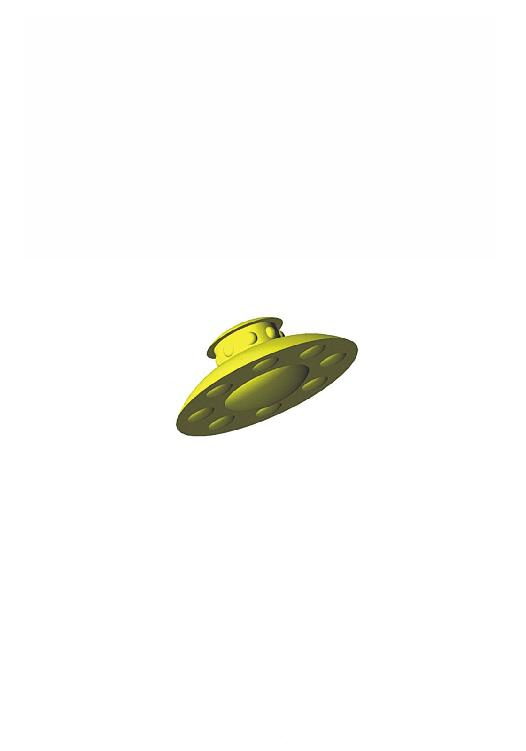
秋山瑞人
１９７１年生まれ、山梨出身。東京某所在住。主食はＳＦとミステリー。『Ｅ．Ｇ．コンバット』（原案・イラスト／☆よしみる）でデビュー。その独自の文体とキャラ描写で人気を博す。『イリヤの空、ＵＦＯの夏』は「電撃ｈｐ」で好評連載されたもの。ちなみに２００１年10月現在も連載中。
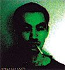
駒都えーじ
１９７３年生まれ。神奈川出身のベイスターズファン。趣味は落書き、プラモ作り、制服鑑賞、寝ること等々。
 電撃文庫
電撃文庫
イリヤの空、UFOの夏 その1
秋山瑞人
発 行 2013年12月26日
発行者 塚田正晃
発行所 株式会社KADOKAWA
〒102-8177 東京都千代田区富士見2-13-3
03-3238-8745（営業）
http://www.kadokawa.co.jp/
プロデュース アスキー・メディアワークス
〒102-8584 東京都千代田区富士見1-8-19
03-5216-8399（編集）
http://dengekibunko.dengeki.com/
本書（電子版）に掲載されているコンテンツ（ソフトウェア／プログラム／データ／情報を含む）の著作権およびその他の権利は、すべて株式会社KADOKAWAおよび正当な権利を有する第三者に帰属しています。
法律の定めがある場合または権利者の明示的な承諾がある場合を除き、これらのコンテンツを複製・転載、改変・編集、翻案・翻訳、放送・出版、公衆送信（送信可能化を含む）・再配信、販売・頒布、貸与等に使用することはできません。
(C)2001 MIZUHITO AKIYAMA
※この電子書籍は2012年12月14日発行の電撃文庫『イリヤの空、UFOの夏 その1』33版に基づき制作